1. 제1차 세계대전World War One
1. 긴 도화선 · The Long Fuse
제1차 세계대전(World War One, WW1)은 1914년부터 1918년까지 이어진 전쟁으로, 당시 사람들은 대전쟁(the Great War)이라고 불렀다.
도화선(fuse)은 불이 붙으면 천천히 타 들어가다가 끝에서 폭탄을 터뜨리는 줄이다.
WW1도 어느 날 갑자기 일어난 것이 아니다. 오래전부터 유럽 나라들 사이에 쌓인 긴장(tensions)이 도화선처럼 타 들어가다가 1914년에 폭발했다는 뜻이다.
그래서 이 단원 전체 질문(Key Enquiry Question)은 WW1의 원인(causes)은 무엇이었고, 여러 요인(factors)이 전쟁 발발(outbreak of the conflict)에 각각 어떻게 영향을 주었는가?이다. 원인이 하나가 아니라 여러 개이고, 그것들이 서로 맞물려 전쟁이 되었다는 것을 설명할 수 있어야 한다.
2. 왜 WW1을 배울까? · Why do we study WW1?
전쟁은 왜 일어나는가(Why do wars happen?), 전쟁을 어떻게 막을 수 있는가(How can we prevent wars?) 같은 질문은 21세기를 사는 우리에게도 중요하다.
그 답을 찾으려고 1914~18년의 '대전쟁'을 하나의 사례(case study)로 깊이 조사한다.
3. MAINS — 다섯 가지 원인 · The MAINS causes
M 군국주의(Militarism) — 강한 군대를 갖추고 언제든 쓸 준비가 되어 있어야 한다는 믿음.
A 동맹 체제(Alliance System) — 나라끼리 서로 돕고 지켜 주기로 한 약속.
I 제국주의(Imperialism) — 한 나라가 다른 나라들을 지배해 제국을 만드는 것.
N 민족주의(Nationalism) — 자기 나라에 대한 강한 자부심·충성심. 같은 정체성을 가진 사람들이 자기 나라를 세우거나 다스리려는 마음이기도 하다.
S 중요한 인물(Significant Individuals) — 그 사람의 선택·행동이 전쟁으로 가는 사건을 만든 사람들(예: 독일 황제 빌헬름 2세 Kaiser Wilhelm II, 프란츠 페르디난트 대공 Archduke Franz Ferdinand).
CA2 시험은 이 다섯 가지를 각각 정의하고, 각각이 긴장을 어떻게 키웠는지 설명하는 것이 중심이다.
4. 핵심 용어 · Key terms
제국(Empire) — 한 강한 나라가 다스리는 여러 나라·지역의 묶음.
식민지(Colony / Colonies) — 다른 나라가 지배하고 사람을 보내 정착시킨 곳.
영토(Territory) — 한 나라에 속하거나 그 나라가 지배하는 땅.
제국주의(Imperialism) — 강한 나라가 약한 나라들을 지배해 제국을 넓히는 것. 영상 문제에서는 '한 나라가 다른 나라에 정치적 지배력(political dominance)을 넓히는 것'이라고 했다.
5. 왜 제국을 원했나 — 세 갈래 · Why did European countries want an empire?
① 무역·돈(Trade / Money) — 고무·금·석유 같은 원자재(raw materials)를 얻고, 공장에서 만든 물건을 팔 새 시장(new markets)이 생긴다. 식민지는 자기 지배국하고만 무역해야 해서 이익이 고스란히 지배국으로 갔다.
② 군사(Military) — 중요한 바닷길(sea routes)과 해군 기지(navy bases)를 차지하고, 경쟁국이 땅을 갖지 못하게 막는다. 식민지 사람을 군인으로 뽑아 쓸 수도 있었다.
③ 힘·위신(Power / Prestige) — 제국은 '우리나라가 강하고 뛰어나다'는 지위의 상징(status symbol)이었고, 국내 국민의 지지(support from the public)를 얻는 수단이었다.
수업 활동은 이유 카드를 T(무역·돈)·M(군사)·P(힘)로 나누고, 가장 중요한 3가지를 골라 PEEL 문단으로 쓰는 것이었다.
6. 앞서 간 영국·프랑스, 늦게 뛰어든 독일·이탈리아
1800년대에 이미 영국(Britain)과 프랑스(France)는 거대한 제국을 가졌다. 대영제국은 세계의 약 4분의 1을 덮었고 캐나다·인도·남아프리카·이집트·오스트레일리아·뉴질랜드가 들어 있었다.
이탈리아(Italy)와 독일(Germany)은 1870년대에야 통일된 나라가 되었다. 제국을 원했지만 값진 땅은 이미 대부분, 특히 영국이 차지한 뒤였다.
그래서 남은 땅, 특히 자원이 많은 아프리카(Africa)를 두고 경쟁이 벌어졌다 — 이것이 아프리카 쟁탈전(Scramble for Africa)이다.
7. 경쟁이 긴장으로 · From competition to tension
식민지를 지키려고 나라들은 육군·해군을 키웠고 이것이 군비 경쟁(arms race)으로 이어졌다. 1870~1914년 유럽 나라들의 군사비가 크게 늘었다.
독일은 값어치가 크지 않은 나미비아(Namibia) 같은 아프리카 식민지까지 차지하며 영국·프랑스에 도전할 수 있음을 보여 주려 했다.
독일과 프랑스는 모로코(Morocco)를 두고 1906년과 1911년에 충돌했다(모로코 위기 Moroccan Crises). 이 다툼이 바로 전쟁이 되지는 않았지만 분노(anger)와 불신(distrust)을 남겨 앞으로의 충돌 가능성을 높였다. 오히려 영국과 프랑스는 이 일로 더 가까워졌다.
8. 1914년 세계 지도 — 두 편 · The world in 1914
지도에서 삼국 협상(Triple Entente) = 대영제국·프랑스 제국·러시아 제국, 삼국 동맹(Triple Alliance) = 독일 제국·이탈리아 제국·오스트리아-헝가리 제국으로 나뉜다. 제국 경쟁이 이 두 편의 대립과 겹쳐 있었다는 것이 핵심이다.
9. 영상 'Second Wave Imperialism'에서 나온 것
유럽 제국주의의 큰 경제적 이유는 공장에 원자재와 새 시장이 필요했던 것이다(원자재의 예: 면화 cotton).
제국주의를 부추긴 믿음은 사회 다윈주의(Social Darwinism)와 인종적 우월성(racial superiority)이라는 생각이었다.
유럽인들은 앞선 무기·교통·의약(advanced weapons, transport and medicine)이 있어서 정복에 유리하다고 믿었다.
1839년 중국 관리들이 영국의 아편을 없애자 제1차 아편전쟁(First Opium War)이 일어났다.
식민지에 철도(railways)를 놓은 까닭은 원자재와 공산품을 더 빨리 실어 나르기 위해서였다.
✍️ 꼭 알아야 하는 것
- MAINS 다섯 글자가 각각 무엇(Militarism·Alliance System·Imperialism·Nationalism·Significant Individuals)이고 무슨 뜻인지 영어로 말할 수 있어야 한다.
- 유럽 나라들이 제국을 원한 이유를 무역·돈 / 군사 / 힘·위신으로 나누어 예(원자재·새 시장·해군 기지·지위의 상징)와 함께 설명할 수 있어야 한다.
- 식민지 경쟁 → 군비 경쟁·모로코 위기(1906·1911) → 분노와 불신 → 전쟁 가능성 증가, 이 흐름을 PEEL 문단으로 쓸 수 있어야 한다.
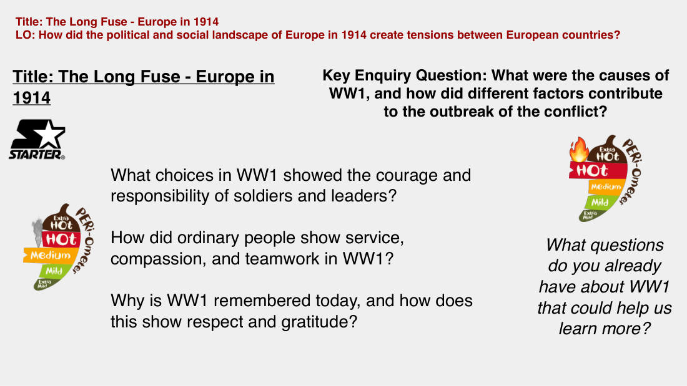
학습 목표(LO): 1914년 유럽의 정치적·사회적 상황(political and social landscape)은 어떻게 유럽 나라들 사이에 긴장(tensions)을 만들었는가?
단원 질문(Key Enquiry Question): WW1의 원인(causes)은 무엇이었고, 여러 요인(factors)은 전쟁 발발(outbreak)에 어떻게 영향을 주었는가?
시작 활동(Starter)
· WW1에서 군인과 지도자들의 용기(courage)와 책임감(responsibility)을 보여 준 선택은 무엇이었나?
· 평범한 사람들은 WW1에서 어떻게 봉사(service)·연민(compassion)·협동(teamwork)을 보여 주었나?
· WW1은 왜 오늘날까지 기억되며, 그것은 어떻게 존중(respect)과 감사(gratitude)를 보여 주는가?
· WW1에 대해 이미 궁금한 것은 무엇인가?
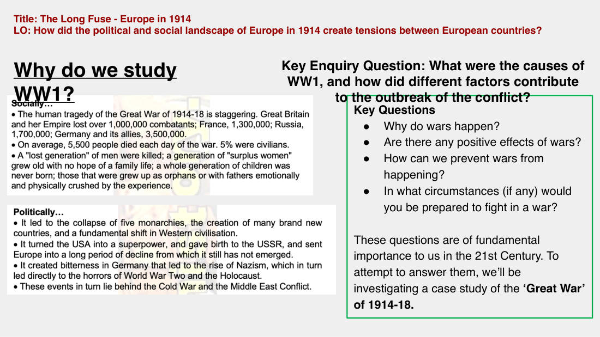
핵심 질문(Key Questions)
· 전쟁은 왜 일어나는가?
· 전쟁에 좋은 효과(positive effects)가 있을 수 있는가?
· 전쟁이 일어나지 않게 하려면 어떻게 해야 하는가?
· 어떤 상황이라면(만약 있다면) 전쟁에 나가 싸울 각오가 되어 있는가?
이 질문들은 21세기를 사는 우리에게 매우 중요하다. 답을 찾으려고 1914~18년 '대전쟁(Great War)'을 사례(case study)로 조사한다.

🧭 충족(Meeting): 1914년 유럽의 주요 정치적·사회적 특징(political and social features)을 찾아낼 수 있다.
🔎 초과(Exceeding): 나라마다 서로 부딪치는 이익(competing national interests)이 어떻게 유럽 나라들 사이에 긴장(tension)을 만들었는지 설명할 수 있다.
🧠 숙달(Mastering): 유럽의 정치적·사회적 긴장이 어떻게 1914년 전쟁이 일어날 조건(conditions for conflict)을 만들었는지 분석할 수 있다.
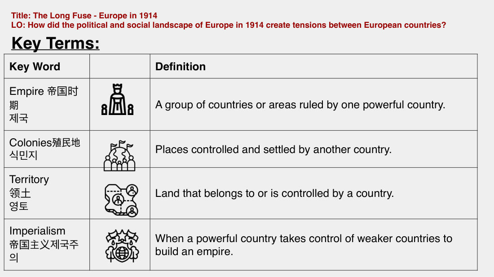
제국(Empire) — 한 강한 나라가 다스리는 여러 나라나 지역의 묶음.
식민지(Colonies) — 다른 나라가 지배하고 사람을 보내 정착시킨 곳.
영토(Territory) — 한 나라에 속하거나 그 나라가 지배하는 땅.
제국주의(Imperialism) — 강한 나라가 약한 나라들을 지배해 제국을 만드는 것.
슬라이드에는 같은 낱말의 중국어·한국어 뜻도 함께 적혀 있다.
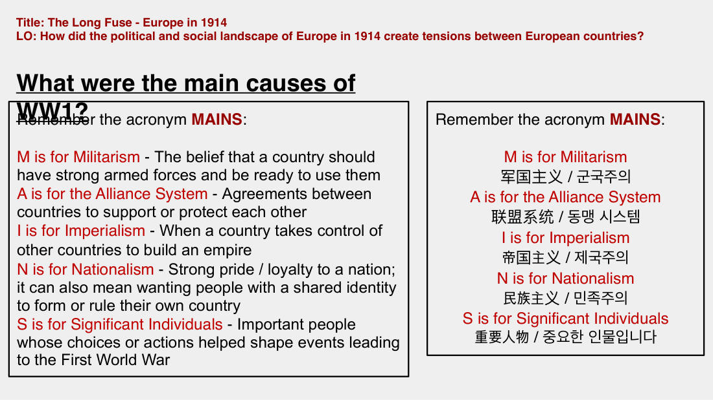
MAINS 를 외우자 — 제1차 세계대전의 다섯 가지 원인
M = 군국주의(Militarism) — 나라는 강한 군대(armed forces)를 갖추고 언제든 쓸 준비가 되어 있어야 한다는 믿음이다.
A = 동맹 체제(Alliance System) — 나라끼리 서로 돕거나 지켜 주기로 한 약속(agreements)이다.
I = 제국주의(Imperialism) — 한 나라가 다른 나라들을 지배해 제국(empire)을 만드는 것이다.
N = 민족주의(Nationalism) — 자기 나라에 대한 강한 자부심·충성심(pride / loyalty)이다. 같은 정체성(shared identity)을 가진 사람들이 자기들만의 나라를 세우거나 다스리고 싶어 하는 마음을 뜻하기도 한다.
S = 중요한 인물(Significant Individuals) — 그 사람의 선택이나 행동이 제1차 세계대전으로 가는 사건들을 만든 중요한 사람들이다.
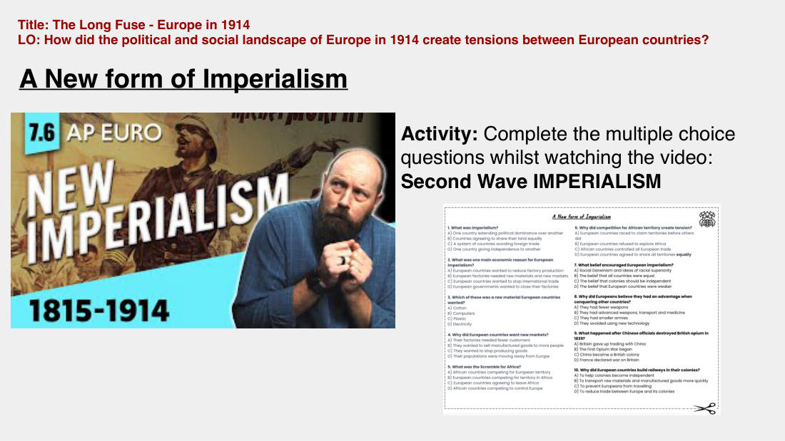
활동: 영상 'Second Wave IMPERIALISM(2차 제국주의)'(1815~1914)을 보며 객관식 문제를 푼다.
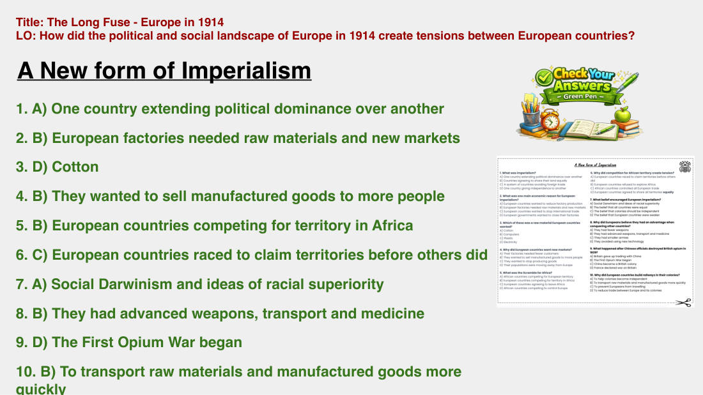
1. A) 한 나라가 다른 나라에 정치적 지배력(political dominance)을 넓히는 것
2. B) 유럽 공장들에 원자재(raw materials)와 새 시장(new markets)이 필요했다
3. D) 면화(Cotton)
4. B) 공장에서 만든 물건(manufactured goods)을 더 많은 사람에게 팔고 싶었다
5. B) 유럽 나라들이 아프리카 땅(territory)을 두고 경쟁한 것 = 아프리카 쟁탈전(Scramble for Africa)
6. C) 유럽 나라들이 남보다 먼저 땅을 차지하려고 앞다투었다
7. A) 사회 다윈주의(Social Darwinism)와 인종적 우월성(racial superiority)이라는 생각
8. B) 앞선 무기·교통·의약(advanced weapons, transport and medicine)이 있었다
9. D) 제1차 아편전쟁(First Opium War)이 시작되었다(1839년 중국 관리들이 영국 아편을 없앤 뒤)
10. B) 원자재와 공산품을 더 빨리 실어 나르려고(철도를 놓았다)
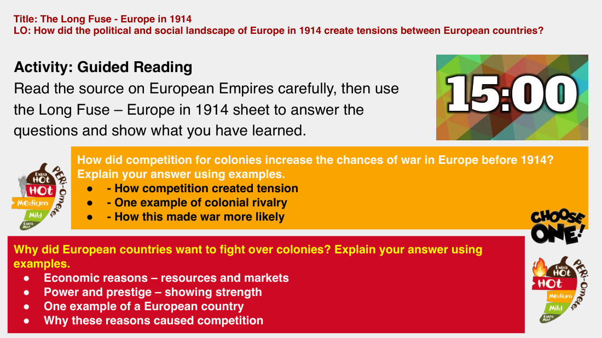
유럽 제국에 관한 글을 꼼꼼히 읽고 'The Long Fuse – Europe in 1914' 활동지 문제에 답한다.
질문 1: 식민지 경쟁은 1914년 이전 유럽에서 전쟁 가능성을 어떻게 높였나? 예를 들어 설명하라.
· 경쟁이 어떻게 긴장을 만들었는지
· 식민지 경쟁(colonial rivalry)의 예 하나
· 그것이 왜 전쟁을 더 일어나기 쉽게 했는지
질문 2: 유럽 나라들은 왜 식민지를 두고 다투고 싶어 했나? 예를 들어 설명하라.
· 경제적 이유(Economic reasons) — 자원과 시장
· 힘과 위신(Power and prestige) — 강함을 보여 주기
· 유럽 나라 한 곳의 예
· 이런 이유가 왜 경쟁을 낳았는지
두 질문 중 하나를 골라 쓴다. 답할 때 모로코 위기(1906·1911)나 나미비아 같은 구체적 예를 넣으면 좋다.
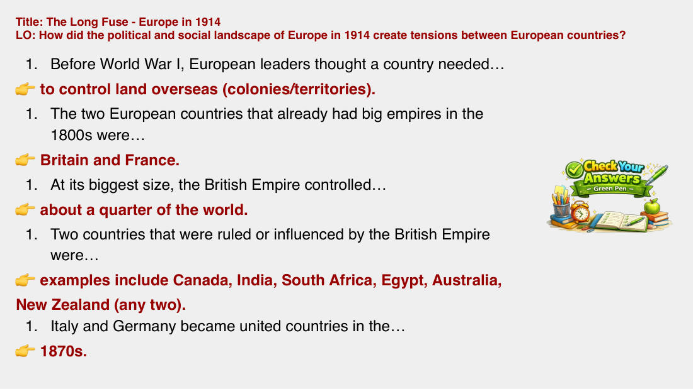
1. 제1차 세계대전 전 유럽 지도자들은 나라가 강해지려면 무엇이 필요하다고 생각했나?
👉 바다 건너 땅, 곧 식민지·영토(colonies / territories)를 다스려야 한다.
2. 1800년대에 이미 큰 제국을 가진 두 나라는?
👉 영국(Britain)과 프랑스(France).
3. 가장 컸을 때 대영제국(British Empire)이 다스린 크기는?
👉 세계의 약 4분의 1(about a quarter of the world).
4. 대영제국이 다스리거나 영향을 준 나라 두 곳은?
👉 캐나다·인도·남아프리카·이집트·오스트레일리아·뉴질랜드 중 두 곳.
5. 이탈리아와 독일이 통일된 나라가 된 때는?
👉 1870년대(the 1870s).
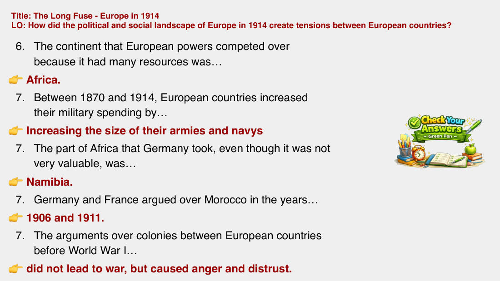
6. 자원이 많아서 유럽 강대국들이 서로 차지하려 한 대륙은?
👉 아프리카(Africa).
7. 1870~1914년에 유럽 나라들은 군사비를 어떻게 늘렸나?
👉 육군(armies)과 해군(navies)의 규모를 키웠다.
8. 별로 값어치가 없었는데도 독일이 차지한 아프리카 땅은?
👉 나미비아(Namibia).
9. 독일과 프랑스가 모로코(Morocco)를 두고 다툰 해는?
👉 1906년과 1911년.
10. 제1차 세계대전 전 식민지를 둘러싼 유럽 나라들의 다툼은 어떤 결과를 낳았나?
👉 전쟁으로 이어지지는 않았지만 분노(anger)와 불신(distrust)을 남겼다.
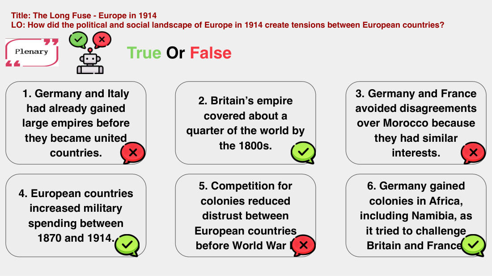
1. 독일과 이탈리아는 통일되기 전에 이미 큰 제국을 가지고 있었다. → 거짓(1870년대에 통일된 뒤 제국을 원했지만 값진 땅은 이미 남아 있지 않았다)
2. 1800년대에 대영제국은 세계의 약 4분의 1을 덮었다. → 참
3. 독일과 프랑스는 이해관계가 비슷해서 모로코를 두고 다투지 않았다. → 거짓(1906·1911년에 충돌했다)
4. 유럽 나라들은 1870~1914년에 군사비를 늘렸다. → 참
5. 식민지 경쟁은 제1차 세계대전 전 유럽 나라들 사이의 불신을 줄였다. → 거짓(분노와 불신을 키웠다)
6. 독일은 영국·프랑스에 도전하려고 나미비아를 포함한 아프리카 식민지를 얻었다. → 참
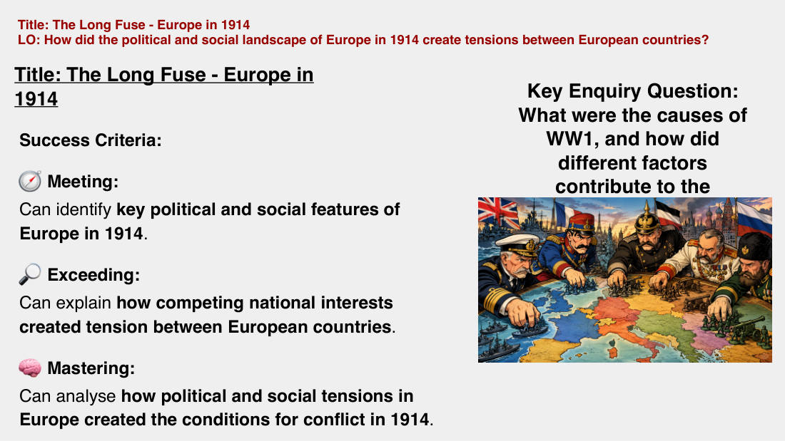
🧭 충족(Meeting): 1914년 유럽의 주요 정치적·사회적 특징(political and social features)을 찾아낼 수 있다.
🔎 초과(Exceeding): 나라마다 서로 부딪치는 이익(competing national interests)이 어떻게 유럽 나라들 사이에 긴장(tension)을 만들었는지 설명할 수 있다.
🧠 숙달(Mastering): 유럽의 정치적·사회적 긴장이 어떻게 1914년 전쟁이 일어날 조건(conditions for conflict)을 만들었는지 분석할 수 있다.
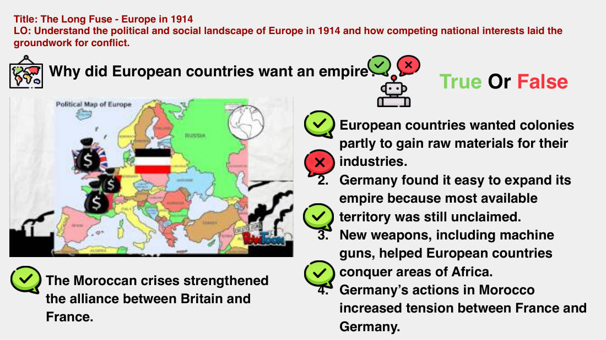
학습 목표(LO): 1914년 유럽의 정치적·사회적 상황과, 나라마다 부딪치는 이익(competing national interests)이 어떻게 전쟁의 바탕을 깔았는지 이해한다.
1. 유럽 나라들은 산업에 쓸 원자재를 얻으려고 식민지를 원하기도 했다. → 참 ✔
2. 남은 땅이 대부분 주인이 없어서 독일은 제국을 쉽게 넓혔다. → 거짓 ✘
3. 기관총(machine guns) 같은 새 무기가 유럽 나라들의 아프리카 정복을 도왔다. → 참 ✔
4. 모로코에서 독일이 한 행동은 프랑스와 독일 사이의 긴장을 키웠다. → 참 ✔
5. 모로코 위기(Moroccan crises)는 영국과 프랑스의 동맹을 더 단단하게 만들었다. → 참 ✔
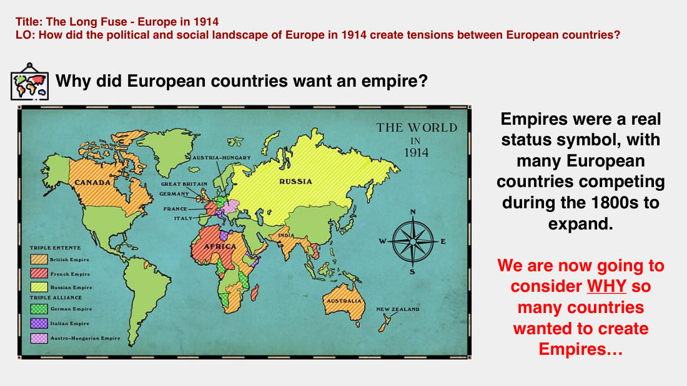
[지도: 1914년의 세계(The World in 1914)]
삼국 협상(Triple Entente) — 대영제국(British Empire)·프랑스 제국(French Empire)·러시아 제국(Russian Empire)
삼국 동맹(Triple Alliance) — 독일 제국(German Empire)·이탈리아 제국(Italian Empire)·오스트리아-헝가리 제국(Austro-Hungarian Empire)
제국은 진짜 지위의 상징(status symbol)이었고, 1800년대에 많은 유럽 나라가 영토를 넓히려고 경쟁했다.
이제 왜 그렇게 많은 나라가 제국을 만들고 싶어 했는지(WHY) 생각해 본다.
지도에서 영국(캐나다·인도·오스트레일리아·뉴질랜드 등)과 프랑스가 아프리카·아시아에 넓은 땅을 가진 것을 확인하자.
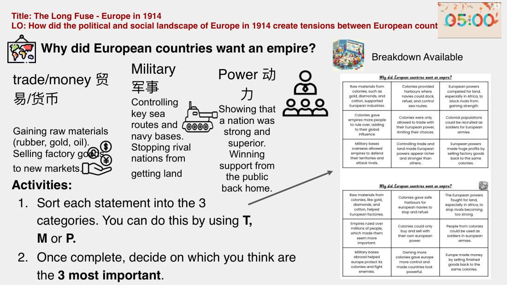
1. 각 문장을 세 갈래로 나눈다 — T = 무역·돈(trade/money), M = 군사(Military), P = 힘(Power).
· 원자재(고무·금·석유) 얻기 → T
· 공장 물건을 새 시장에 팔기 → T
· 중요한 바닷길과 해군 기지 장악 → M
· 경쟁국이 땅을 얻지 못하게 막기 → M
· 나라가 강하고 뛰어나다는 것 보여 주기 → P
· 국내 국민의 지지 얻기 → P
2. 다 나눈 뒤 가장 중요하다고 생각하는 3가지를 고른다.
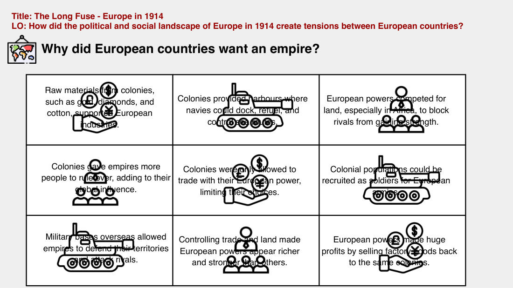
1. 식민지에서 나오는 금·다이아몬드·면화(gold, diamonds, cotton) 같은 원자재(raw materials)가 유럽 산업(industries)을 받쳐 주었다. → 무역·돈(T)
2. 식민지는 해군이 정박하고 연료를 채우며 바닷길(sea routes)을 지배할 수 있는 항구(harbours)가 되었다. → 군사(M)
3. 유럽 강대국들은 특히 아프리카에서 경쟁국(rivals)이 강해지지 못하게 막으려고 땅을 다투었다. → 군사(M)
4. 식민지가 있으면 다스릴 사람이 많아져 세계적인 영향력(global influence)이 커졌다. → 힘·위신(P)
5. 식민지는 자기를 지배하는 유럽 나라하고만 무역할 수 있어 선택이 제한되었다. → 무역·돈(T)
6. 식민지 사람들을 유럽 군대의 군인(soldiers)으로 뽑아 쓸 수 있었다. → 군사(M)
7. 해외 군사 기지(military bases)로 자기 영토를 지키고 경쟁국을 공격할 수 있었다. → 군사(M)
8. 무역과 땅을 지배하면 다른 나라보다 더 부유하고 강해 보였다. → 힘·위신(P)
9. 공장에서 만든 물건(factory goods)을 바로 그 식민지에 되팔아 큰 이익(profits)을 냈다. → 무역·돈(T)
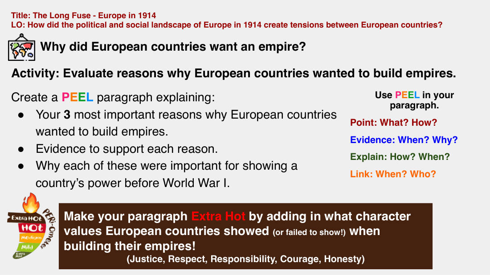
PEEL 문단으로 쓴다.
· 가장 중요한 이유 3가지
· 각 이유를 뒷받침하는 증거(evidence)
· 각각이 제1차 세계대전 전 나라의 힘을 보여 주는 데 왜 중요했는지
Point(주장): 무엇? 어떻게?
Evidence(증거): 언제? 왜?
Explain(설명): 어떻게? 언제?
Link(연결): 언제? 누가?
Extra Hot(더 높은 단계): 유럽 나라들이 제국을 세우며 보여 준(또는 보여 주지 못한) 가치 — 정의(Justice)·존중(Respect)·책임(Responsibility)·용기(Courage)·정직(Honesty) — 를 덧붙인다.
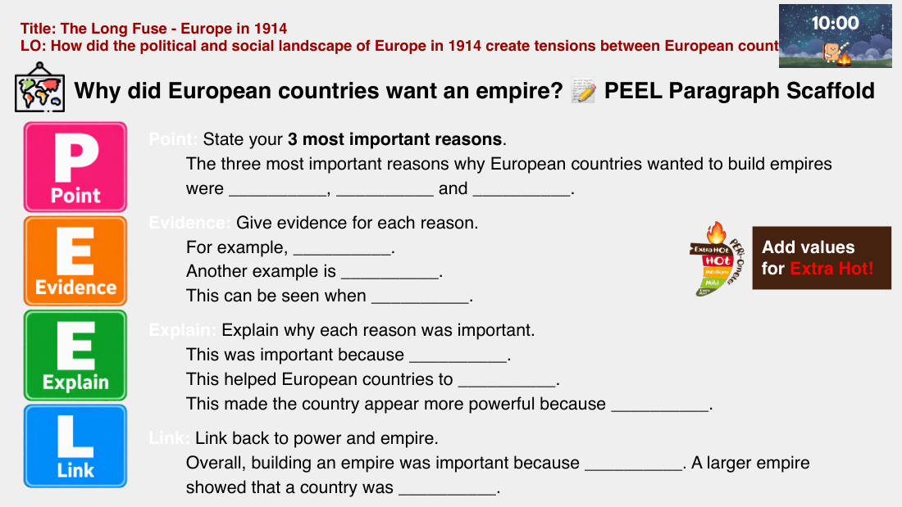
Point: 유럽 나라들이 제국을 세우고 싶어 한 가장 중요한 세 가지 이유는 ___, ___, ___이다.
Evidence: 예를 들어 ___. 또 다른 예는 ___. 이것은 ___ 때 볼 수 있다.
Explain: 이것이 중요했던 까닭은 ___. 이것은 유럽 나라들이 ___하도록 도왔다. 이것은 나라를 더 강해 보이게 했는데, 왜냐하면 ___.
Link: 결국 제국을 세우는 것이 중요했던 까닭은 ___. 더 큰 제국은 그 나라가 ___라는 것을 보여 주었다.
영어 시험 답안에서는 'The three most important reasons why European countries wanted to build empires were …'처럼 틀 문장을 그대로 써도 된다.
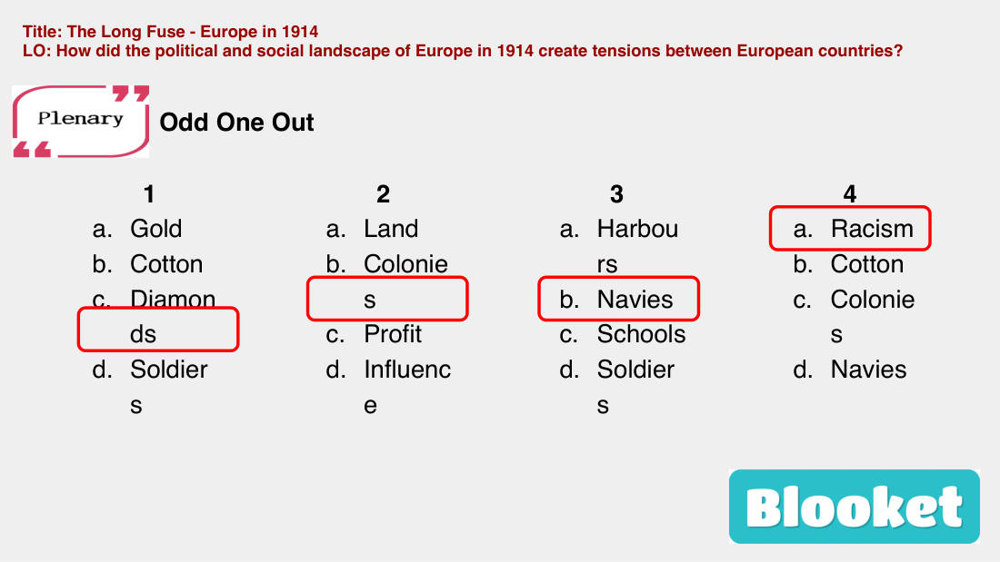
1. 금(Gold) · 면화(Cotton) · 다이아몬드(Diamonds) · 군인(Soldiers)
2. 땅(Land) · 식민지(Colonies) · 이익(Profit) · 영향력(Influence)
3. 항구(Harbours) · 해군(Navies) · 학교(Schools) · 군인(Soldiers)
4. 인종차별(Racism) · 면화(Cotton) · 식민지(Colonies) · 해군(Navies)
1번은 군인만 원자재가 아니고, 3번은 학교만 군사와 관계없다. 2·4번은 이유를 들어 스스로 골라 보는 문제다.
제국이 왜 중요했나
1차 세계대전(World War I) 전, 유럽 나라들은 큰 제국(empire)을 세우는 것을 아주 중요하게 여겼다.
제국은 한 강한 나라가 여러 나라나 지역을 다스리는 것을 말한다.
당시 지도자들은 바다 건너 해외 땅(land overseas)을 차지해야 강한 나라로 인정받는다고 믿었다.
제국은 나라의 자부심(national pride)을 보여 주는 것이었고, 동시에 무역(trade)과 돈벌이에도 쓸모가 있었다.
제국이 클수록 그 나라는 다른 나라들에게 더 많은 존중(respect)을 받았다.
영국과 프랑스 — 이미 큰 제국
1800년대에 이미 영국(Britain)과 프랑스(France)는 거대한 제국을 가지고 있었다.
그중 영국 제국이 가장 컸고, 세계의 약 4분의 1(about a quarter of the world)을 덮었다.
영국 제국에는 캐나다(Canada), 인도(India), 남아프리카(South Africa), 이집트(Egypt), 오스트레일리아(Australia), 뉴질랜드(New Zealand)가 들어 있었다.
이 가운데 어떤 곳은 영국이 직접 다스렸고(directly ruled), 어떤 곳은 영국의 강한 영향을 받았다(strongly influenced).
늦게 뛰어든 독일과 이탈리아
이탈리아(Italy)와 독일(Germany)은 1870년대에 하나로 통일된 나라(united countries)가 되었고, 이들도 제국을 원했다.
하지만 그때는 값진 영토(territory)를 이미 다른 나라, 특히 영국이 거의 차지한 뒤였다.
그래도 독일과 이탈리아는 힘을 키우려 했고, 그래서 남은 땅을 두고 경쟁(competition)이 벌어졌다.
특히 천연자원(natural resources)이 많은 아프리카(Africa)가 경쟁의 중심이었다.
천연자원은 석탄(coal), 석유(oil), 금(gold)처럼 땅에서 나는 쓸모 있는 재료다.
제국 경쟁이 군비 경쟁으로
제국을 두고 벌인 경쟁은 군비 경쟁(arms race)으로 이어졌다.
군비 경쟁은 나라들이 서로 더 큰 육군(army)과 해군(navy)을 만들려고 겨루는 것이다.
나라들은 자기 식민지(colony)를 지키려고 군대를 키웠다. 식민지는 다른 나라가 지배하거나 사람을 보내 정착한 땅이다.
1870년부터 1914년 사이에 유럽 나라들은 군대(military)에 훨씬 더 많은 돈을 썼다.
독일의 아프리카 식민지
예를 들어 독일은 나미비아(Namibia) 같은 아프리카 식민지를 차지했다.
이 식민지들은 그다지 값진 땅이 아니었다.
하지만 독일이 영국과 프랑스에 맞설 수 있다(challenge)는 것을 보여 주는 의미가 있었다.
모로코를 둘러싼 충돌
식민지 경쟁은 나라들 사이의 다툼(arguments)도 불러왔다.
예를 들어 독일과 프랑스는 1906년과 1911년에 모로코(Morocco)를 누가 차지할지를 두고 부딪쳤다(clashed).
이 다툼이 바로 전쟁을 일으키지는 않았다.
그러나 서로에 대한 분노(anger)와 불신(distrust)을 만들었고, 그래서 앞으로 분쟁(conflict)이 일어날 가능성을 더 높였다.
분쟁은 나라들 사이의 심각한 의견 차이나 싸움을 뜻한다.
✍️ 꼭 알아야 하는 것
- 유럽 나라들이 제국(empire)을 원한 이유는 힘·자부심(national pride)·무역(trade)과 돈 때문이었고, 영국 제국이 세계의 약 4분의 1로 가장 컸다.
- 1870년대에 통일된 독일과 이탈리아가 남은 땅, 특히 아프리카를 두고 경쟁하면서 군비 경쟁(arms race)이 생겼고, 1870~1914년에 군사비가 크게 늘었다.
- 1906년과 1911년 모로코(Morocco)를 둘러싼 독일과 프랑스의 충돌은 전쟁을 일으키지는 않았지만 분노와 불신(distrust)을 키워 앞으로 분쟁(conflict)이 일어날 가능성을 높였다.
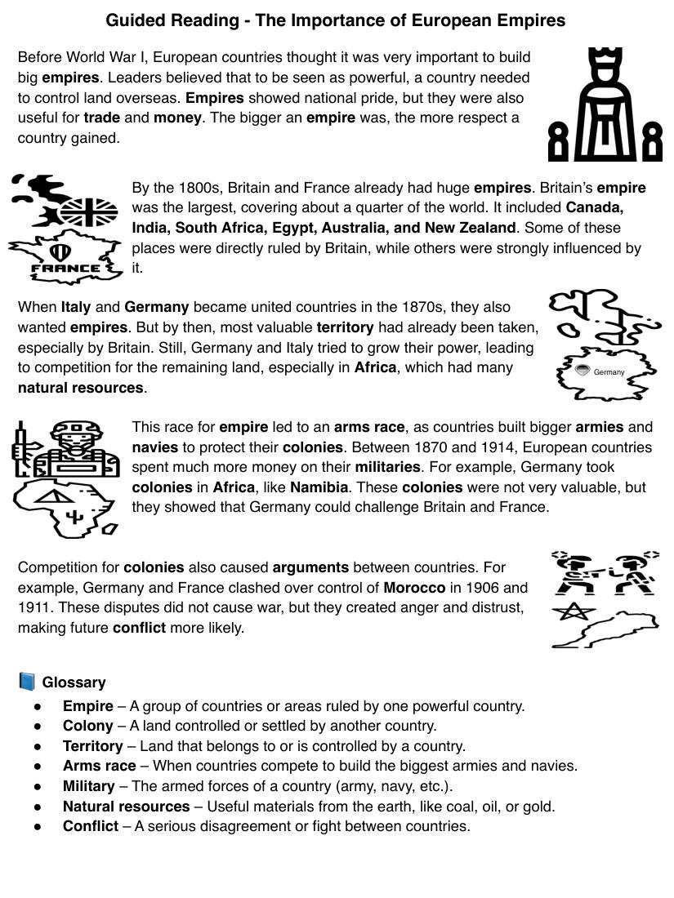
제1차 세계대전 전, 유럽 나라들은 큰 제국(empires)을 세우는 것을 아주 중요하게 여겼다. 지도자들은 강한 나라로 보이려면 바다 건너 땅(land overseas)을 다스려야 한다고 믿었다. 제국은 국가적 자부심(national pride)을 보여 주었고 무역(trade)과 돈(money)에도 쓸모가 있었다. 제국이 클수록 그 나라는 더 많은 존중을 받았다.
1800년대에 영국과 프랑스는 이미 거대한 제국을 가졌다. 대영제국이 가장 커서 세계의 약 4분의 1을 덮었고 캐나다·인도·남아프리카·이집트·오스트레일리아·뉴질랜드가 들어 있었다. 영국이 직접 다스린 곳도 있고, 강한 영향을 준 곳도 있었다.
이탈리아와 독일이 1870년대에 통일된 나라가 되자 이들도 제국을 원했다. 하지만 값진 영토(territory)는 이미 대부분, 특히 영국이 차지한 뒤였다. 그래도 두 나라는 힘을 키우려 했고, 남은 땅, 특히 천연자원(natural resources)이 많은 아프리카를 두고 경쟁이 벌어졌다.
이 제국 경쟁은 군비 경쟁(arms race)으로 이어졌다. 나라들은 식민지를 지키려고 육군과 해군을 키웠다. 1870~1914년 유럽 나라들은 군대(militaries)에 훨씬 많은 돈을 썼다. 예를 들어 독일은 나미비아(Namibia) 같은 아프리카 식민지(colonies)를 차지했다. 값진 땅은 아니었지만 독일이 영국과 프랑스에 도전할 수 있다는 것을 보여 주었다.
식민지 경쟁은 나라 사이의 다툼(arguments)도 낳았다. 독일과 프랑스는 1906년과 1911년에 모로코(Morocco) 지배권을 두고 충돌했다. 이 분쟁이 전쟁이 되지는 않았지만 분노와 불신을 남겨 앞으로의 갈등(conflict)을 더 일어나기 쉽게 만들었다.
📘 용어집(Glossary)
제국(Empire) — 한 강한 나라가 다스리는 여러 나라·지역의 묶음
식민지(Colony) — 다른 나라가 지배하거나 정착한 땅
영토(Territory) — 한 나라에 속하거나 그 나라가 지배하는 땅
군비 경쟁(Arms race) — 나라들이 가장 큰 육군·해군을 만들려고 경쟁하는 것
군대(Military) — 한 나라의 무장 병력(육군·해군 등)
천연자원(Natural resources) — 석탄·석유·금처럼 땅에서 얻는 쓸모 있는 물질
갈등(Conflict) — 나라 사이의 심각한 의견 차이나 싸움
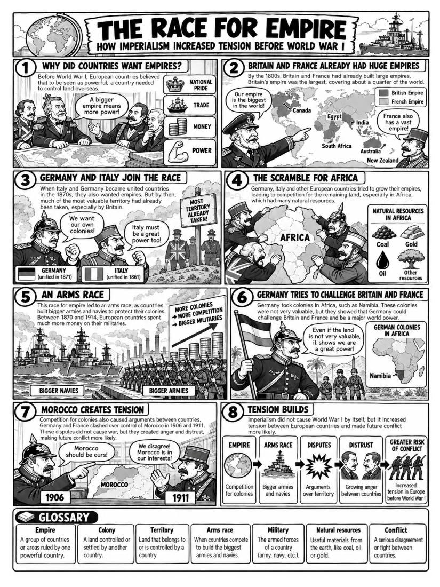
① 나라들은 왜 제국을 원했나? 강하게 보이려면 바다 건너 땅을 다스려야 한다고 믿었다. 국가적 자부심·무역·돈·권력(national pride, trade, money, power). "더 큰 제국 = 더 큰 권력!"
② 영국과 프랑스는 이미 거대한 제국 — 1800년대에 큰 제국을 세웠고, 대영제국은 세계의 약 4분의 1을 덮었다.
③ 독일과 이탈리아가 경주에 뛰어들다 — 1870년대 통일(독일 1871·이탈리아 1861) 뒤 식민지를 원했지만 "대부분의 땅은 이미 차지됨!"
④ 아프리카 쟁탈전(The Scramble for Africa) — 남은 땅, 특히 석탄·금·석유 같은 자원이 많은 아프리카를 두고 경쟁했다.
⑤ 군비 경쟁(An Arms Race) — 식민지를 지키려고 더 큰 해군·육군을 만들었다. 식민지 증가 → 경쟁 증가 → 군대 확대. 1870~1914년 군사비가 크게 늘었다.
⑥ 독일이 영국·프랑스에 도전하다 — 나미비아 같은 아프리카 식민지를 차지했다. "값진 땅이 아니어도 우리가 강대국이라는 걸 보여 준다!"
⑦ 모로코가 긴장을 만들다 — 1906년·1911년 독일과 프랑스가 모로코를 두고 충돌했다. 전쟁은 아니었지만 분노와 불신을 남겼다.
⑧ 긴장이 쌓이다 — 제국주의 혼자 WW1을 일으킨 것은 아니지만 긴장을 키웠다.
제국(식민지 경쟁) → 군비 경쟁(더 큰 육군·해군) → 분쟁(영토 다툼) → 불신(나라 사이의 분노) → 더 큰 충돌 위험(greater risk of conflict)
⑧번 화살표 흐름이 그대로 시험 답안의 설명 순서가 된다.
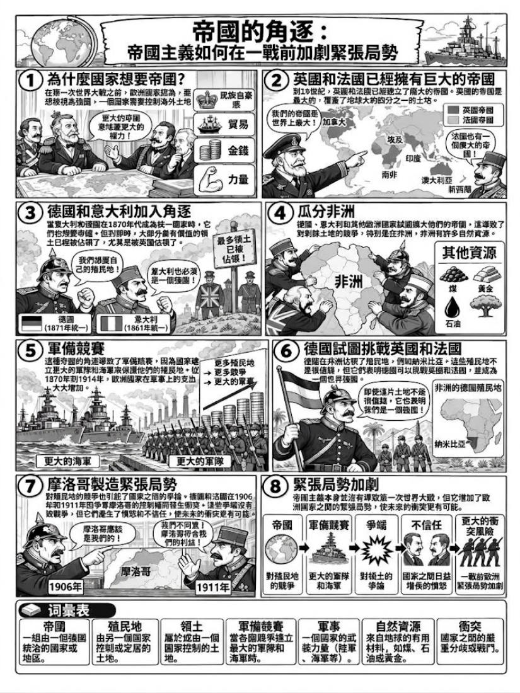
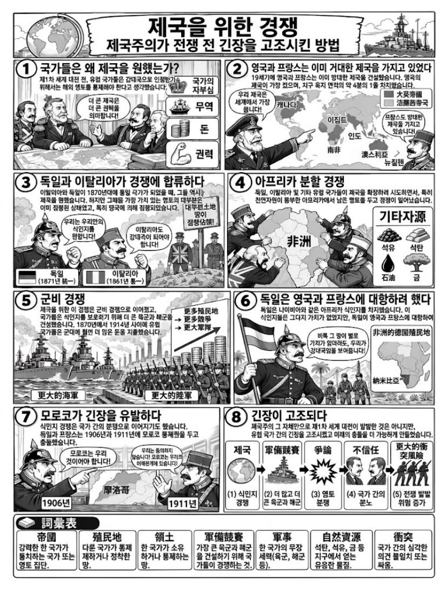
제국주의(imperialism)란
제국주의는 한 나라가 다른 나라에 정치적 지배력(political dominance)을 넓히는 것이다.
땅을 똑같이 나누거나 무역을 피하거나 독립을 내주는 것과는 정반대 뜻이다.
경제적 이유(economic reason)
유럽 제국주의의 큰 경제적 이유는 유럽 공장(factories)에 원료(raw materials)와 새 시장(new markets)이 필요했던 것이다.
공장에서 물건을 만들려면 재료가 있어야 하는데, 유럽이 원한 원료의 예가 면화(cotton)다. 전기·컴퓨터·플라스틱은 답이 아니다.
새 시장이 필요했던 까닭은 공장에서 만든 물건(manufactured goods)을 더 많은 사람에게 팔고 싶었기 때문이다.
아프리카 쟁탈전(Scramble for Africa)
아프리카 쟁탈전은 유럽 나라들이 아프리카의 땅(territory)을 차지하려고 서로 경쟁한 것이다. 아프리카 나라들이 유럽 땅을 다툰 것이 아니니 방향을 헷갈리지 말아야 한다.
이 경쟁이 긴장(tension)을 만든 까닭은 유럽 나라들이 다른 나라보다 먼저 땅을 차지하려고 서로 앞다투었기(raced to claim territories) 때문이다.
제국주의를 부추긴 믿음(belief)
유럽 제국주의를 부추긴 생각은 사회 다윈주의(Social Darwinism)와 인종적 우월성(racial superiority)이다.
사회 다윈주의는 '강한 것이 살아남는다'는 생각을 사람과 나라에 갖다 붙인 것으로, 유럽인이 자기들이 더 뛰어나서 다른 곳을 지배해도 된다고 여기게 만들었다.
기술의 우위(advantage)
유럽인은 다른 나라를 정복할 때 자기들이 유리하다고 믿었다.
그 이유는 앞선 무기(advanced weapons), 교통수단(transport), 의약(medicine)을 가졌기 때문이다.
아편 전쟁(Opium War)
1839년 중국 관리들이 영국의 아편(opium)을 없애 버렸다.
그 뒤에 제1차 아편 전쟁(First Opium War)이 시작되었다.
철도(railways)
유럽 나라들이 식민지(colonies)에 철도를 놓은 까닭은 원료와 공장에서 만든 물건을 더 빨리 실어 나르기(transport) 위해서다.
식민지의 독립을 돕거나 무역을 줄이려는 것이 아니었다. 이것도 앞의 경제적 이유(원료와 시장)와 이어진다.
✍️ 꼭 알아야 하는 것
- 제국주의(imperialism)의 뜻과 경제적 이유: 원료(raw materials, 예 cotton)와 새 시장(new markets)
- 아프리카 쟁탈전(Scramble for Africa): 유럽 나라들이 아프리카 땅을 먼저 차지하려고 경쟁해 긴장이 생겼다
- 제국주의를 도운 것: 사회 다윈주의(Social Darwinism), 앞선 무기·교통·의약, 1839년 아편 사건 뒤 제1차 아편 전쟁(First Opium War)
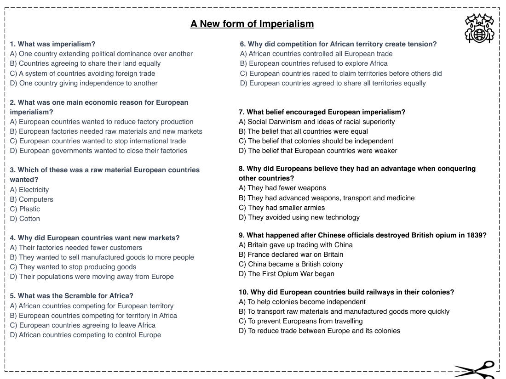
1. 제국주의란? → A) 한 나라가 다른 나라에 정치적 지배력을 넓히는 것
2. 유럽 제국주의의 주요 경제적 이유는? → B) 유럽 공장들에 원자재와 새 시장이 필요했다
3. 유럽 나라들이 원한 원자재는? → D) 면화(Cotton) (전기·컴퓨터·플라스틱은 아니다)
4. 왜 새 시장이 필요했나? → B) 공장에서 만든 물건을 더 많은 사람에게 팔고 싶어서
5. 아프리카 쟁탈전이란? → B) 유럽 나라들이 아프리카 땅을 두고 경쟁한 것
6. 아프리카 땅 경쟁은 왜 긴장을 만들었나? → C) 남보다 먼저 땅을 차지하려고 앞다투어서
7. 유럽 제국주의를 부추긴 믿음은? → A) 사회 다윈주의와 인종적 우월성이라는 생각
8. 유럽인은 왜 정복에 유리하다고 믿었나? → B) 앞선 무기·교통·의약이 있어서
9. 1839년 중국 관리들이 영국 아편을 없앤 뒤 일어난 일은? → D) 제1차 아편전쟁이 시작되었다
10. 유럽 나라들은 왜 식민지에 철도를 놓았나? → B) 원자재와 공산품을 더 빨리 실어 나르려고
1. 활동지 10문항 · Fill-in questions
제국이 강한 나라의 조건이었다는 생각, 1800년대 영국·프랑스의 거대한 제국(대영제국 = 세계의 4분의 1), 1870년대 통일된 독일·이탈리아, 아프리카 쟁탈전, 1870~1914년 군사비 증가, 독일의 나미비아, 1906·1911년 모로코 다툼, 그리고 '전쟁은 아니었지만 분노와 불신을 남겼다'는 결론을 차례로 확인한다.
2. 이유 카드 9장 · Why did European countries want an empire?
원자재·공산품 판매·식민지 무역 독점 = 무역·돈 / 항구·해외 군사 기지·식민지 군인·경쟁국 견제 = 군사 / 다스리는 사람 수와 영향력·부유하고 강해 보이기 = 힘·위신으로 나눌 수 있다.
✍️ 꼭 알아야 하는 것
- 활동지 10문항의 답(특히 4분의 1·1870년대·아프리카·나미비아·1906/1911·분노와 불신)을 외워 둔다.
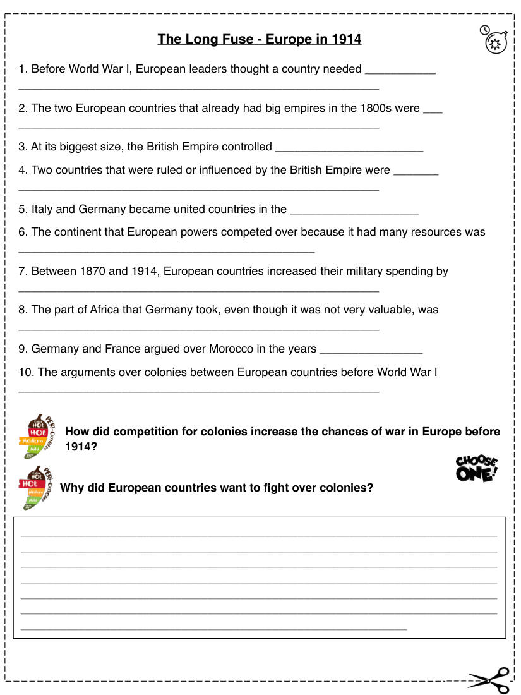
1. 제1차 세계대전 전 유럽 지도자들은 나라가 강해지려면 무엇이 필요하다고 생각했나?
👉 바다 건너 땅, 곧 식민지·영토(colonies / territories)를 다스려야 한다.
2. 1800년대에 이미 큰 제국을 가진 두 나라는?
👉 영국(Britain)과 프랑스(France).
3. 가장 컸을 때 대영제국(British Empire)이 다스린 크기는?
👉 세계의 약 4분의 1(about a quarter of the world).
4. 대영제국이 다스리거나 영향을 준 나라 두 곳은?
👉 캐나다·인도·남아프리카·이집트·오스트레일리아·뉴질랜드 중 두 곳.
5. 이탈리아와 독일이 통일된 나라가 된 때는?
👉 1870년대(the 1870s).
6. 자원이 많아서 유럽 강대국들이 서로 차지하려 한 대륙은?
👉 아프리카(Africa).
7. 1870~1914년에 유럽 나라들은 군사비를 어떻게 늘렸나?
👉 육군(armies)과 해군(navies)의 규모를 키웠다.
8. 별로 값어치가 없었는데도 독일이 차지한 아프리카 땅은?
👉 나미비아(Namibia).
9. 독일과 프랑스가 모로코(Morocco)를 두고 다툰 해는?
👉 1906년과 1911년.
10. 제1차 세계대전 전 식민지를 둘러싼 유럽 나라들의 다툼은 어떤 결과를 낳았나?
👉 전쟁으로 이어지지는 않았지만 분노(anger)와 불신(distrust)을 남겼다.
하나 골라 쓰기(Choose one)
· 식민지 경쟁은 1914년 이전 유럽에서 전쟁 가능성을 어떻게 높였나?
· 유럽 나라들은 왜 식민지를 두고 다투고 싶어 했나?
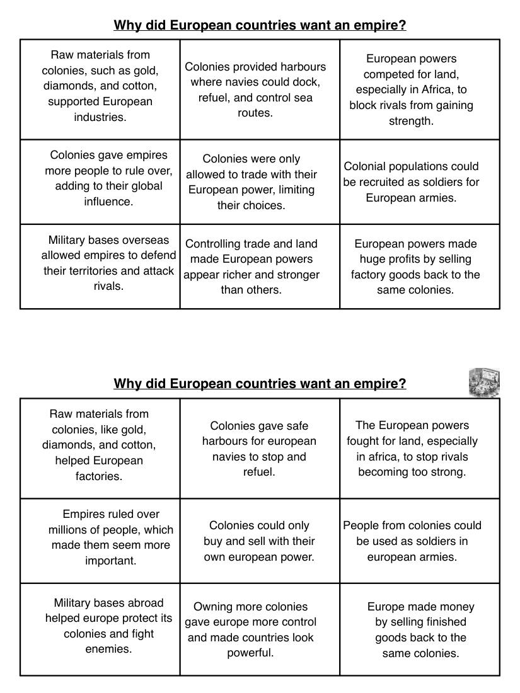
1. 식민지에서 나오는 금·다이아몬드·면화(gold, diamonds, cotton) 같은 원자재(raw materials)가 유럽 산업(industries)을 받쳐 주었다. → 무역·돈(T)
2. 식민지는 해군이 정박하고 연료를 채우며 바닷길(sea routes)을 지배할 수 있는 항구(harbours)가 되었다. → 군사(M)
3. 유럽 강대국들은 특히 아프리카에서 경쟁국(rivals)이 강해지지 못하게 막으려고 땅을 다투었다. → 군사(M)
4. 식민지가 있으면 다스릴 사람이 많아져 세계적인 영향력(global influence)이 커졌다. → 힘·위신(P)
5. 식민지는 자기를 지배하는 유럽 나라하고만 무역할 수 있어 선택이 제한되었다. → 무역·돈(T)
6. 식민지 사람들을 유럽 군대의 군인(soldiers)으로 뽑아 쓸 수 있었다. → 군사(M)
7. 해외 군사 기지(military bases)로 자기 영토를 지키고 경쟁국을 공격할 수 있었다. → 군사(M)
8. 무역과 땅을 지배하면 다른 나라보다 더 부유하고 강해 보였다. → 힘·위신(P)
9. 공장에서 만든 물건(factory goods)을 바로 그 식민지에 되팔아 큰 이익(profits)을 냈다. → 무역·돈(T)
1. 여섯 '강대국' · The Great Powers
1900년 유럽에는 세계에서 가장 강한 나라들이 몰려 있었다. 영국(Britain)·독일(Germany)·프랑스(France)·오스트리아-헝가리(Austria-Hungary)·러시아(Russia)·이탈리아(Italy), 이 여섯 나라를 강대국(Great Powers)이라 부른다.
모두 세계 무역을 최대한 차지하고 가장 부유해지고 싶어 했기 때문에 서로 경쟁자(rivals)였다.
2. 두 편으로 갈라진 유럽 · Two sides in 1914
삼국 동맹(Triple Alliance) = 독일 + 오스트리아-헝가리 + 이탈리아
삼국 협상(Triple Entente) = 영국 + 프랑스 + 러시아
나라마다 원하는 것이 달랐고, 전쟁이 나면 무슨 일이 생길지에 대한 생각도 달랐다.
3. 삼국 동맹 · The Triple Alliance (1882)
독일·오스트리아-헝가리·이탈리아가 맺었다. 그 바탕은 1879년 독일과 오스트리아-헝가리의 이국 동맹(Dual Alliance)이다.
이탈리아는 북아프리카 땅을 두고 프랑스에 밀린 뒤 도움이 필요해서 들어왔다.
약속은 간단했다 — 전쟁이 나면 함께 싸운다. '네 등을 긁어 주면 내 등도 긁어 줘(Scratch my back and I'll scratch yours)'처럼 서로 지켜 주는 상호 지원(mutual support)으로 안전을 높이려 했다.
4. 삼국 협상 · The Triple Entente (1907)
러시아·프랑스·영국은 원래 서로 적이었다.
그런데 독일의 커지는 힘과 공격적인 태도, 특히 독일이 삼국 동맹을 만든 것이 프랑스와 영국을 위협했다.
그래서 프랑스와 러시아가 동맹을 맺었고(1894, 프랑스-러시아 동맹 Franco-Russian Alliance), 영국과 프랑스는 영불 협상(Entente Cordiale, 1904)을 맺었다. 1907년 러시아가 영국과 협정을 맺으며 삼국 협상이 완성되었다.
5. 조약 연표 · Treaties timeline
1839 런던 조약(Treaty of London) — 벨기에의 중립과 독립 보장
1879 이국 동맹 — 독일 + 오스트리아-헝가리
1882 삼국 동맹 — 이탈리아 합류
1887 재보장 조약(Reinsurance Treaty) — 독일이 러시아가 프랑스와 손잡지 못하게 맺음
1894 프랑스-러시아 동맹 — 삼국 동맹이 한쪽을 공격하면 다른 쪽이 도움
1904 영불 협상 — 영국·프랑스가 주로 아프리카 다툼을 정리
1907 삼국 협상 — 영국·프랑스·러시아
1914년 8월 독일이 벨기에 국경을 넘어 런던 조약을 깨자 영국이 독일에 선전포고했다.
6. 1913년 나라별 목표 · European aims in 1913
영국은 제국과 힘을 지키고 싶었고 독일이 걸림돌이었다. 프랑스는 독일에 빼앗긴 알자스-로렌(Alsace-Lorraine)을 되찾고 싶었다. 독일은 더 큰 제국을 원했지만 영국·프랑스에 막혔다고 느꼈다. 오스트리아-헝가리는 발칸(Balkans)의 땅과 제국의 안정을 원했고 러시아가 걸림돌이었다. 러시아는 강한 군대와 발칸의 땅을 원했다. 세르비아는 독립을 지키고 보스니아(Bosnia)를 얻고 싶었는데 오스트리아-헝가리가 막고 있었다.
세르비아·불가리아·그리스 같은 발칸 나라들은 아직 어느 동맹에도 들지 않았고, 여러 나라가 땅과 힘을 두고 다투는 '말썽 지역(trouble spot)'이었다.
7. 동맹은 왜 전쟁을 더 일어나기 쉽게 했나 · How alliances made war more likely
유럽 나라들은 서로 점점 더 의심(suspicious)하게 되었고 긴장이 높아졌다.
동맹 체제는 전쟁이 시작되면 어느 나라가 함께 싸울지 미리 정해 두는 장치였다. 그래서 두 나라 사이의 작은 문제가 동맹을 따라 다른 나라들을 끌어들여 큰 전쟁이 되었다(They turned small problems into bigger wars by pulling in more countries).
만화(cartoon)에서는 작은 나라를 건드리면 큰 나라가, 그 나라를 건드리면 또 다른 큰 나라가 "내가 가만 안 둔다(I'll …)"고 줄줄이 나선다 — 동맹이 사슬처럼 전쟁을 번지게 한다는 메시지다.
8. 핵심 용어 · Key terms
동맹(Alliance) — 특히 전쟁 때 서로 돕고 지켜 주기로 한 나라 사이의 약속.
사상자(Casualty) — 전쟁이나 사고로 죽거나 다치거나 실종된 사람.
정복하다(Conquer) — 주로 싸움으로 어떤 곳이나 사람들을 힘으로 지배하는 것.
✍️ 꼭 알아야 하는 것
- 삼국 동맹(독일·오스트리아-헝가리·이탈리아, 1882)과 삼국 협상(영국·프랑스·러시아, 1907)의 나라를 정확히 말할 수 있어야 한다.
- 동맹 체제가 두 나라의 다툼을 여러 나라의 전쟁으로 키운 원리(서로 돕기로 한 약속 → 줄줄이 참전)를 설명할 수 있어야 한다.
- 영불 협상(1904)·런던 조약(1839, 벨기에 중립)처럼 시험에 쓸 수 있는 조약 이름과 연도를 알아 둔다.
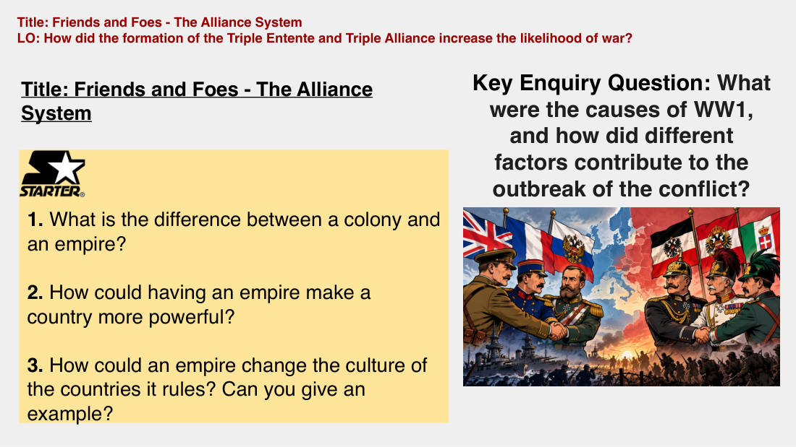
시작 활동
1. 식민지(colony)와 제국(empire)은 어떻게 다른가?
2. 제국을 가지면 나라가 어떻게 더 강해질 수 있나?
3. 제국은 자기가 다스리는 나라들의 문화를 어떻게 바꿀 수 있나? 예를 들 수 있나?
1번: 식민지는 다른 나라가 지배하는 땅 하나하나이고, 제국은 한 강한 나라가 그런 땅들을 여럿 묶어 다스리는 전체다.
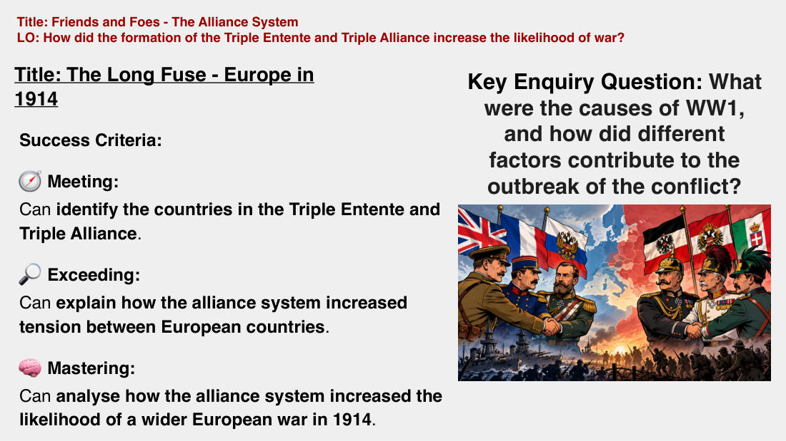
🧭 충족: 삼국 협상(Triple Entente)과 삼국 동맹(Triple Alliance)에 속한 나라를 말할 수 있다.
🔎 초과: 동맹 체제가 유럽 나라들 사이의 긴장을 어떻게 키웠는지 설명할 수 있다.
🧠 숙달: 동맹 체제가 1914년 유럽 전체 전쟁의 가능성을 어떻게 높였는지 분석할 수 있다.
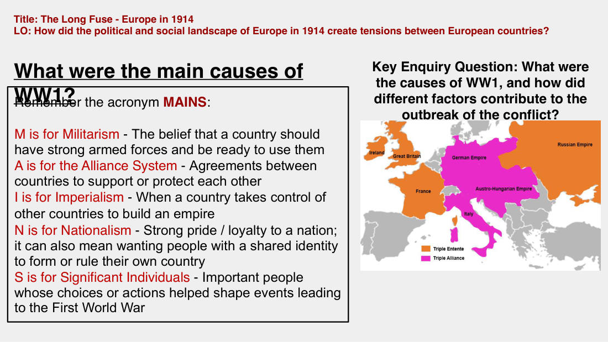
MAINS 를 외우자 — 제1차 세계대전의 다섯 가지 원인
M = 군국주의(Militarism) — 나라는 강한 군대(armed forces)를 갖추고 언제든 쓸 준비가 되어 있어야 한다는 믿음이다.
A = 동맹 체제(Alliance System) — 나라끼리 서로 돕거나 지켜 주기로 한 약속(agreements)이다.
I = 제국주의(Imperialism) — 한 나라가 다른 나라들을 지배해 제국(empire)을 만드는 것이다.
N = 민족주의(Nationalism) — 자기 나라에 대한 강한 자부심·충성심(pride / loyalty)이다. 같은 정체성(shared identity)을 가진 사람들이 자기들만의 나라를 세우거나 다스리고 싶어 하는 마음을 뜻하기도 한다.
S = 중요한 인물(Significant Individuals) — 그 사람의 선택이나 행동이 제1차 세계대전으로 가는 사건들을 만든 중요한 사람들이다.
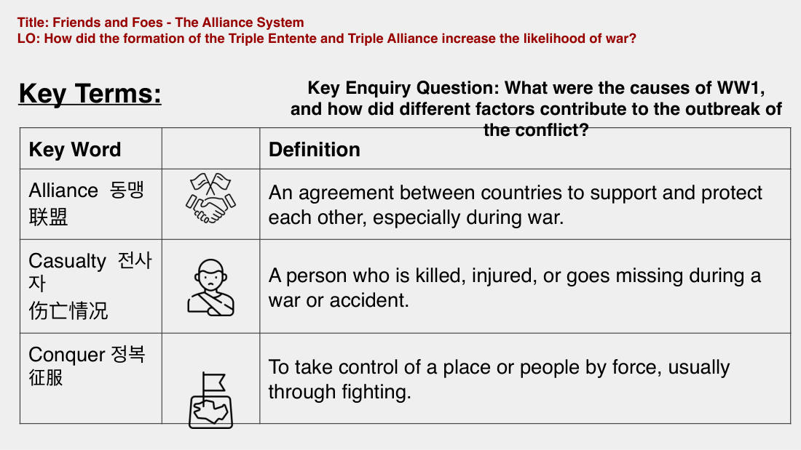
동맹(Alliance) — 특히 전쟁 때 서로 돕고 지켜 주기로 한 나라 사이의 약속.
사상자(Casualty) — 전쟁이나 사고로 죽거나 다치거나 실종된 사람.
정복하다(Conquer) — 주로 싸움을 통해 어떤 곳이나 사람들을 힘으로 지배하는 것.
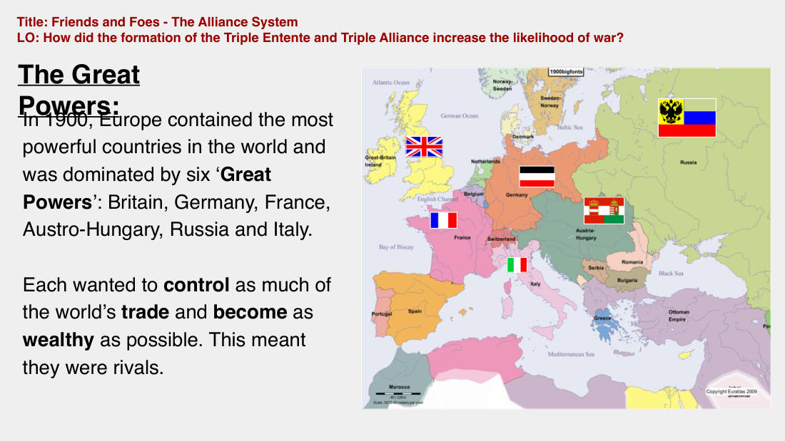
1900년 유럽에는 세계에서 가장 강한 나라들이 있었고 여섯 '강대국(Great Powers)' — 영국·독일·프랑스·오스트리아-헝가리·러시아·이탈리아 — 이 유럽을 이끌었다.
모두 세계 무역을 최대한 차지하고 가장 부유해지고 싶어 했다. 그래서 서로 경쟁자(rivals)였다.
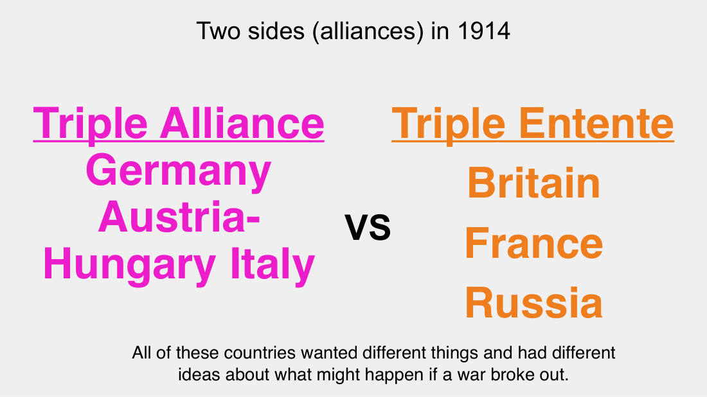
삼국 동맹(Triple Alliance): 독일 · 오스트리아-헝가리 · 이탈리아
VS
삼국 협상(Triple Entente): 영국 · 프랑스 · 러시아
이 나라들은 모두 원하는 것이 달랐고, 전쟁이 나면 무슨 일이 생길지에 대한 생각도 달랐다.
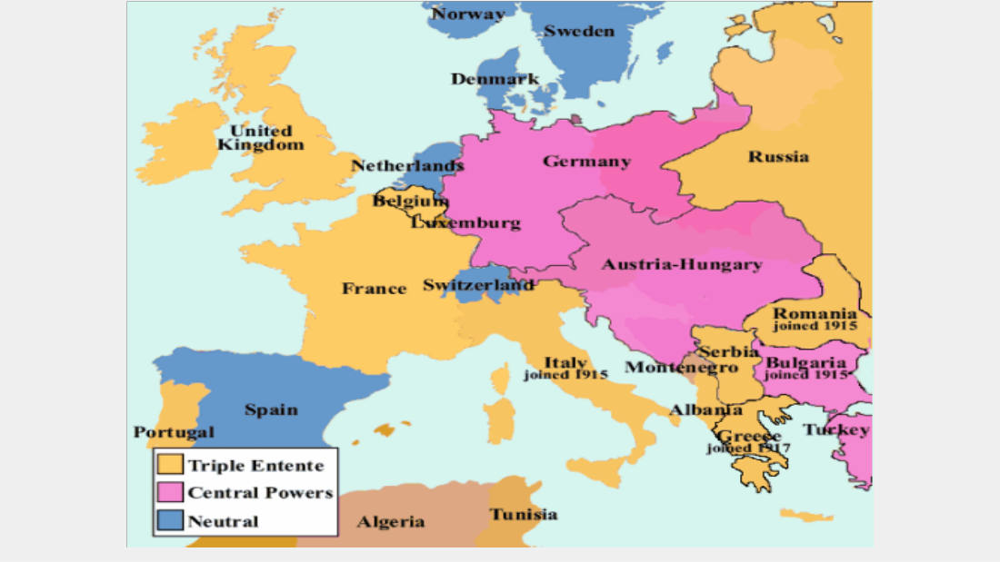
노랑 = 삼국 협상(Triple Entente) 편: 영국·프랑스·러시아·벨기에·세르비아 등 (이탈리아 1915년 합류, 루마니아 1915, 그리스 1917)
분홍 = 동맹국(Central Powers): 독일·오스트리아-헝가리·튀르키예(오스만)·불가리아(1915년 합류)
파랑 = 중립국(Neutral): 스페인·스위스·네덜란드·덴마크·노르웨이·스웨덴 등
이탈리아는 전쟁 전에는 삼국 동맹이었지만 1915년 협상국 편으로 전쟁에 들어갔다. 지도에 'Italy joined 1915'로 적혀 있다.
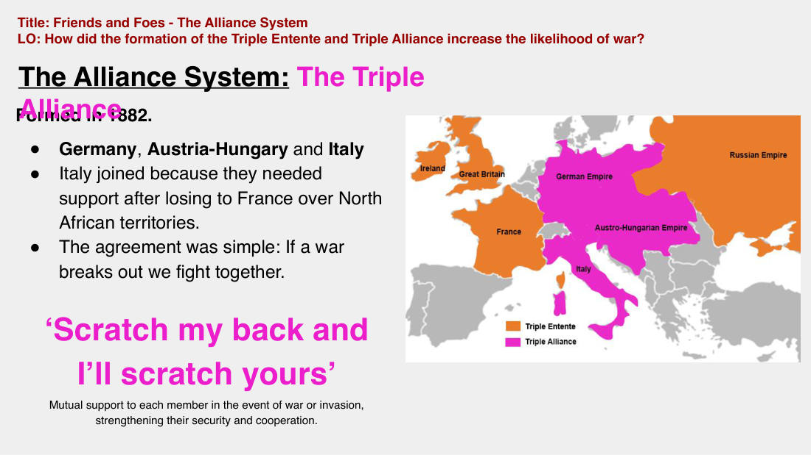
· 독일, 오스트리아-헝가리, 이탈리아
· 이탈리아는 북아프리카 영토를 두고 프랑스에 진 뒤 도움이 필요해서 들어왔다.
· 약속은 간단했다: 전쟁이 나면 함께 싸운다.
'네 등을 긁어 주면 내 등도 긁어 줄게(Scratch my back and I'll scratch yours)'
전쟁이나 침공이 일어나면 서로 돕는 상호 지원(mutual support)으로 안전과 협력을 강화했다.
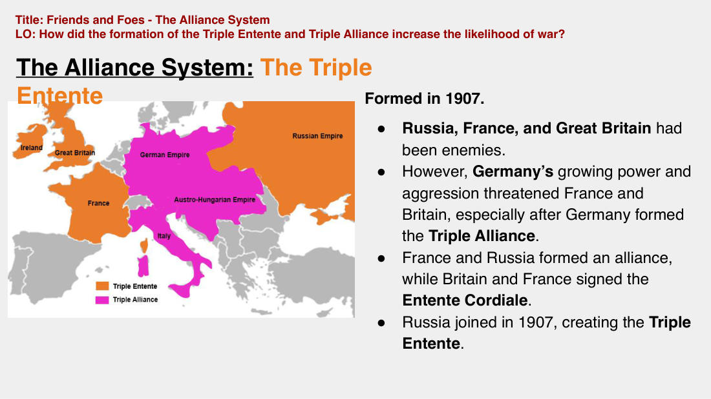
· 러시아·프랑스·영국은 원래 적이었다.
· 그런데 독일의 커지는 힘과 공격성(aggression)이 프랑스와 영국을 위협했다. 특히 독일이 삼국 동맹을 만든 뒤가 그랬다.
· 프랑스와 러시아가 동맹을 맺고, 영국과 프랑스는 영불 협상(Entente Cordiale)을 맺었다.
· 1907년 러시아가 들어오며 삼국 협상이 만들어졌다.
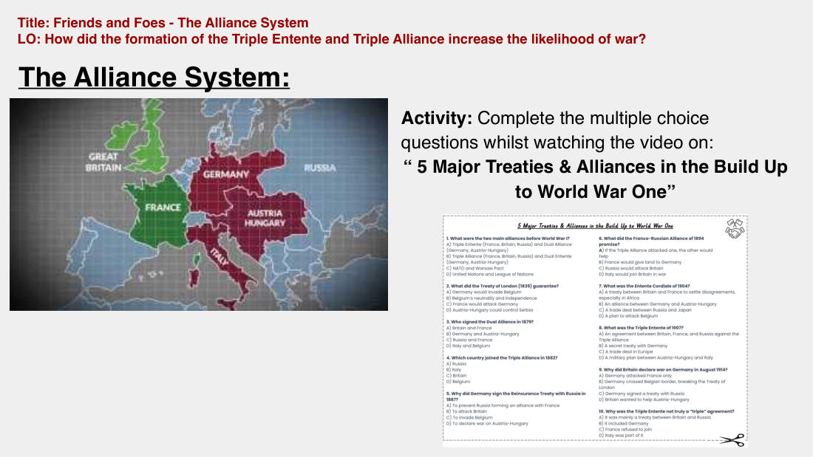
영상 '5 Major Treaties & Alliances in the Build Up to World War One(제1차 세계대전 직전의 5대 조약과 동맹)'을 보며 객관식 문제를 푼다.
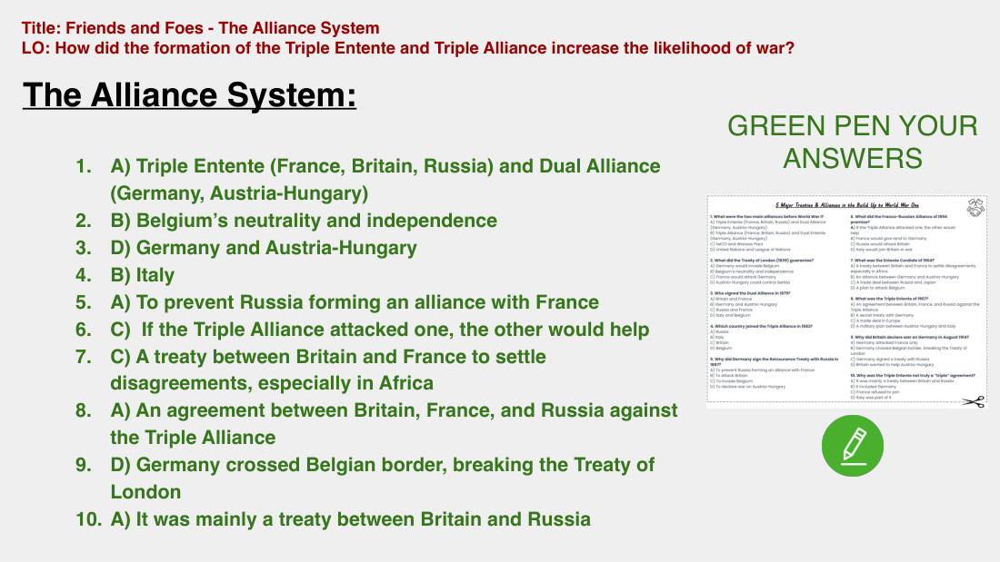
1. A) 삼국 협상(프랑스·영국·러시아)과 이국 동맹(Dual Alliance: 독일·오스트리아-헝가리)
2. B) 벨기에의 중립과 독립
3. D) 독일과 오스트리아-헝가리
4. B) 이탈리아
5. A) 러시아가 프랑스와 동맹을 맺지 못하게 하려고
6. C) 삼국 동맹이 한쪽을 공격하면 다른 쪽이 돕는다
7. C) 특히 아프리카 문제의 다툼을 정리한 영국-프랑스 조약
8. A) 삼국 동맹에 맞선 영국·프랑스·러시아의 합의
9. D) 독일이 벨기에 국경을 넘어 런던 조약을 깼다
10. A) 사실상 영국과 러시아 사이의 조약이 중심이었다
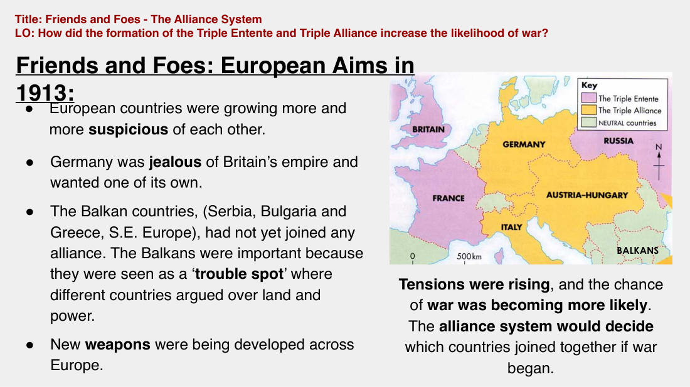
· 유럽 나라들은 서로 점점 더 의심하게 되었다. 긴장이 높아지고 전쟁 가능성이 커졌다. 전쟁이 시작되면 어느 나라가 함께할지는 동맹 체제가 정하게 되어 있었다.
· 독일은 영국의 제국을 질투(jealous)했고 자기 제국을 원했다.
· 발칸(Balkans) 나라들(세르비아·불가리아·그리스, 유럽 남동부)은 아직 어느 동맹에도 들지 않았다. 여러 나라가 땅과 힘을 두고 다투는 '말썽 지역(trouble spot)'이라 중요했다.
· 유럽 곳곳에서 새 무기(new weapons)가 개발되고 있었다.
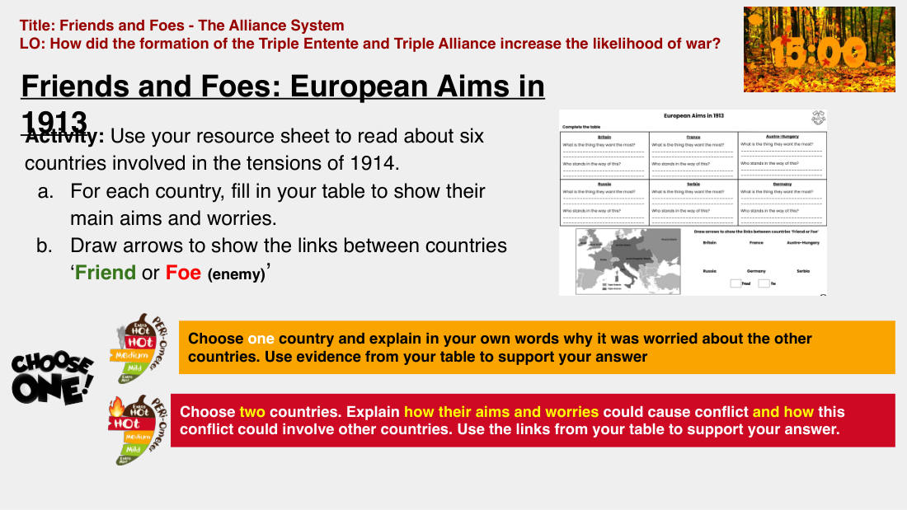
a. 자료지(resource sheet)에서 1914년 긴장에 얽힌 여섯 나라를 읽고, 나라마다 주요 목표(aims)와 걱정(worries)을 표에 채운다.
b. 나라 사이를 화살표로 이어 '친구(Friend)인지 적(Foe)인지' 나타낸다.
쓰기 1: 한 나라를 골라, 그 나라가 왜 다른 나라들을 걱정했는지 표의 증거로 설명한다.
쓰기 2: 두 나라를 골라, 그 목표와 걱정이 어떻게 충돌을 낳고 그 충돌이 어떻게 다른 나라까지 끌어들일 수 있는지 설명한다.
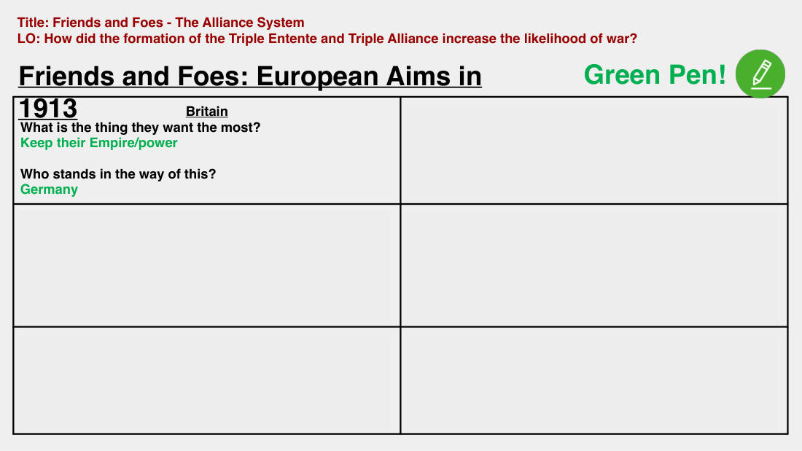
영국 — 가장 원한 것: 제국과 힘 지키기 / 막는 나라: 독일
프랑스 — 가장 원한 것: 독일에게서 알자스-로렌 되찾기 / 막는 나라: 독일
오스트리아-헝가리 — 가장 원한 것: 발칸(Balkan States)의 땅, 제국의 안정 / 막는 나라: 러시아
독일 — 가장 원한 것: 더 큰 제국 / 막는 나라: 영국과 프랑스
러시아 — 가장 원한 것: 강한 군대, 발칸의 땅 / 막는 나라: 독일과 오스트리아-헝가리
세르비아 — 가장 원한 것: 독립 유지, 보스니아(발칸의 일부) 땅 / 막는 나라: 오스트리아-헝가리
프랑스↔독일(알자스-로렌), 오스트리아-헝가리↔세르비아(보스니아), 러시아↔오스트리아-헝가리(발칸)가 대표적인 '적' 관계다.
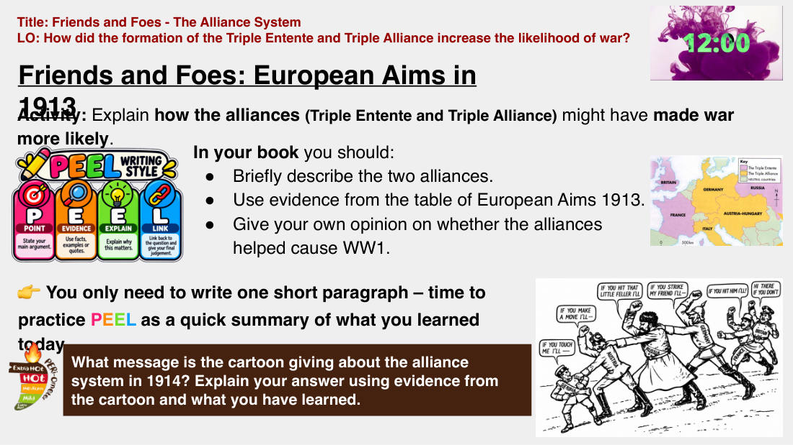
공책에 쓸 것:
· 두 동맹을 짧게 설명한다.
· 1913년 나라별 목표 표의 증거를 쓴다.
· 동맹이 WW1의 원인이 되었는지 내 의견을 쓴다.
👉 짧은 문단 하나면 된다 — 오늘 배운 것을 PEEL로 요약하는 연습이다.
PEEL: Point(주장) · Evidence(사실·예·인용) · Explain(왜 중요한지) · Link(질문으로 돌아가 판단)
Extra Hot: 이 만화는 1914년 동맹 체제에 대해 무슨 메시지를 주는가? 만화 속 증거와 배운 내용으로 설명하라.
[만화 속 말풍선] "저 꼬마를 치면 내가 가만 안 둬" · "내 친구를 치면 나도…" · "나를 건드리면…" · "움직이기만 해 봐…" · "이봐, 그러지 마"
만화의 메시지: 한 나라를 건드리면 동맹으로 묶인 나라들이 줄줄이 나서서 작은 다툼이 전체 전쟁으로 번진다.
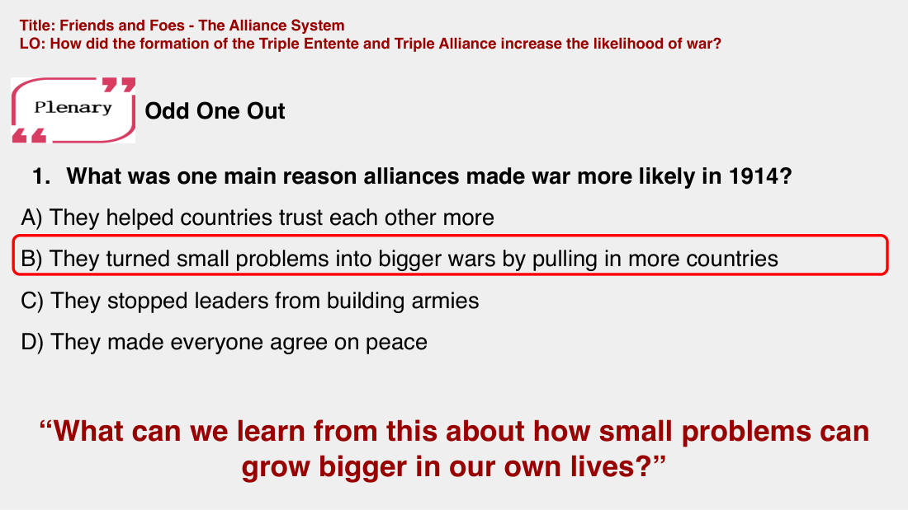
A) 나라들이 서로를 더 믿게 해 주었다
B) 더 많은 나라를 끌어들여 작은 문제를 큰 전쟁으로 만들었다 ✔
C) 지도자들이 군대를 키우지 못하게 했다
D) 모두가 평화에 합의하게 했다
생각해 보기: 작은 문제가 어떻게 커질 수 있는지 우리 삶에서 무엇을 배울 수 있나?
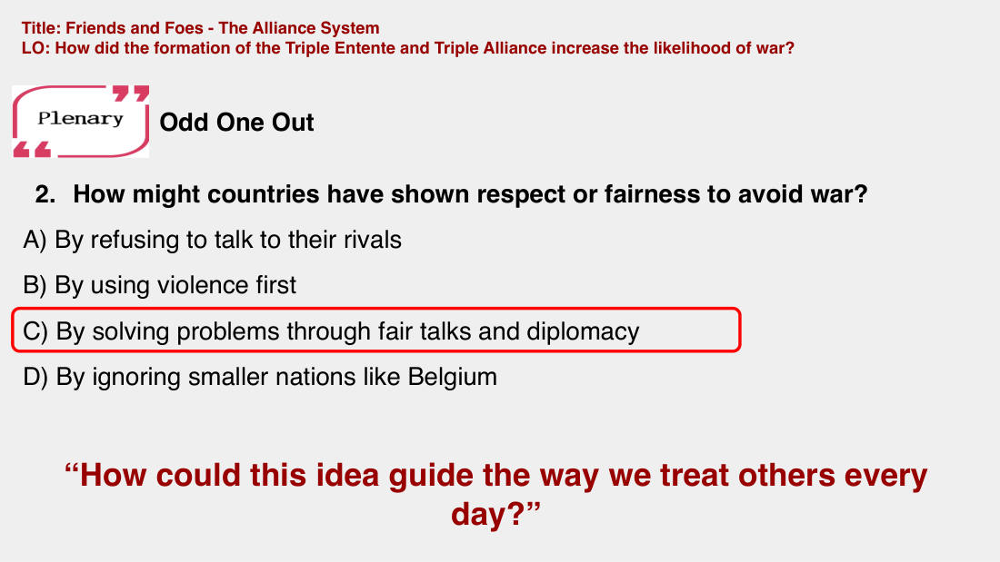
A) 경쟁국과 말하지 않는다
B) 먼저 폭력을 쓴다
C) 공정한 대화와 외교(diplomacy)로 문제를 푼다 ✔
D) 벨기에 같은 작은 나라를 무시한다
생각해 보기: 이 생각이 매일 남을 대하는 태도에 어떻게 도움이 될까?
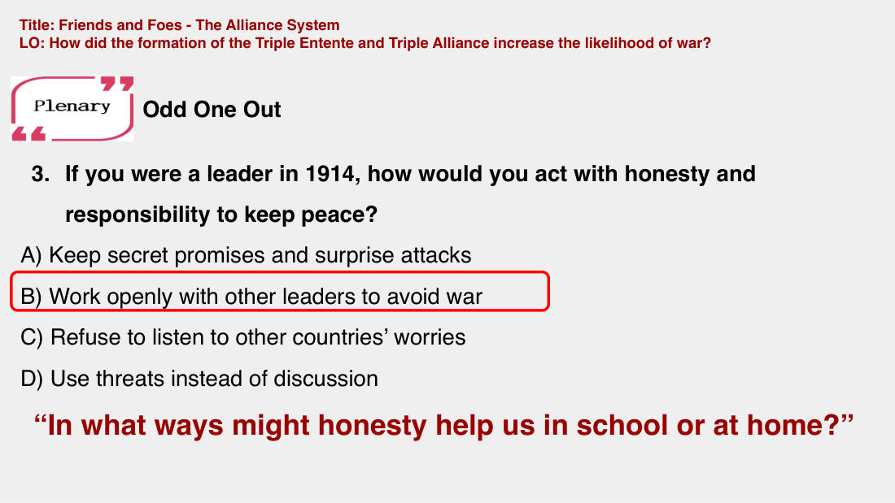
A) 비밀 약속과 기습 공격
B) 다른 지도자들과 공개적으로 협력해 전쟁을 피한다 ✔
C) 다른 나라의 걱정을 듣지 않는다
D) 대화 대신 위협한다
생각해 보기: 학교나 집에서 정직은 어떻게 도움이 될까?
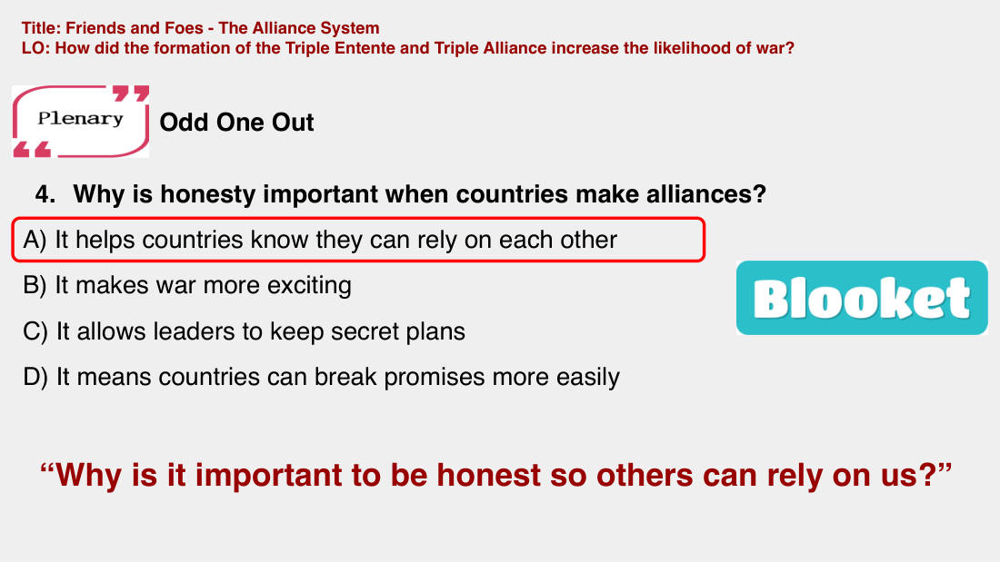
A) 서로 믿고 기댈 수 있게 해 준다 ✔
B) 전쟁을 더 흥미진진하게 만든다
C) 지도자들이 비밀 계획을 숨길 수 있다
D) 약속을 더 쉽게 깰 수 있다
생각해 보기: 다른 사람이 나를 믿을 수 있게 정직해야 하는 까닭은?
1. 영국 · Britain
세계의 3분의 1을 덮은 제국을 지키고 가장 부유하고 강한 나라로 남고 싶었다.
독일의 커지는 부와 군대가 무역을 위협하고 침공까지 할 수 있다고 걱정했다. 프랑스·러시아와 협정이 있었지만 전쟁을 예상하지 않았다.
2. 프랑스 · France
독일에 빼앗긴 알자스-로렌(Alsace-Lorraine)을 되찾고 싶었다.
독일을 공격하면 영국이 도와주길 기대했지만 영국은 확실하지 않았다. 러시아가 공격받으면 돕겠지만 러시아가 먼저 전쟁을 시작하면 돕지 않겠다는 입장이었다.
3. 독일 · Germany
러시아와의 전쟁이 확실하고 곧 온다고 믿었다. 러시아가 프랑스를 동맹으로 삼아 강해지고 있었기 때문이다.
큰 제국을 원했지만 영국·프랑스에 막혔다고 느꼈다. 영국이 중립으로 남길 바랐고 오스트리아-헝가리를 돕겠다고 약속했다 — 이 약속이 나중의 백지수표(Blank Cheque)다.
4. 오스트리아-헝가리 · Austria-Hungary
이미 보스니아를 차지했고 세르비아까지 통제하고 싶었다. 제국 안 여러 민족의 독립 요구를 막았다.
러시아가 세르비아를 지킬까 봐 독일의 지원에 기댔다.
5. 러시아 · Russia
군대가 약하지만 강해지는 중이었다. 세르비아가 공격받으면 지키고 싶었고, 유럽에서 힘을 넓히려 했다.
프랑스·영국과 조약이 있었지만 두 나라는 러시아가 공격받을 때만 돕겠다고 했다.
6. 세르비아 · Serbia
오스만 제국에서 막 독립했고 그 독립을 지키고 싶었다. 세르비아인이 많이 사는 보스니아와 합치고 싶었지만 오스트리아-헝가리가 지배하고 있었다.
공격받으면 러시아가 지켜 주리라 믿었다.
✍️ 꼭 알아야 하는 것
- 나라별 목표가 서로 부딪치는 짝(프랑스↔독일: 알자스-로렌 / 오스트리아-헝가리↔세르비아: 보스니아 / 러시아↔오스트리아-헝가리: 발칸)을 예로 들 수 있어야 한다.
- 약속(독일→오스트리아-헝가리, 러시아→세르비아) 때문에 두 나라의 다툼이 여러 나라의 전쟁으로 번질 수 있었던 까닭을 설명할 수 있어야 한다.

영국(Britain): 세계의 3분의 1을 덮은 제국을 지키고(protect its empire), 가장 부유하고 강한 나라로 남고 싶었다. 독일의 커지는 부와 군대가 무역을 위협하고 침공까지 할 수 있다고 걱정했다. 프랑스·러시아와 협정(agreements)은 있었지만 전쟁을 예상하지는 않았다.
프랑스(France): 오랜 갈등 끝에 독일에 빼앗긴 알자스-로렌(Alsace-Lorraine)을 되찾고 싶었다. 독일을 공격하면 영국이 도와주리라 기대했지만 영국은 확실하지 않았다. 러시아가 공격받으면 돕겠지만 러시아가 전쟁을 시작하면 돕지 않겠다는 입장이었다. 독일의 과거 폭력 때문에 계속 의심했다.
독일(Germany): 러시아와의 전쟁이 확실하고 곧 온다고 믿었다. 러시아 군대는 약하지만 프랑스를 동맹 삼아 강해지고 있었다. 큰 제국(big empire)을 세우고 싶었지만 영국과 프랑스에 막혔다(blocked)고 느꼈다. 영국이 중립(neutral)으로 남기를 바랐고, 오스트리아-헝가리를 돕겠다고 약속했다.
오스트리아-헝가리(Austria-Hungary): 이미 보스니아(Bosnia)를 차지한 뒤 세르비아도 통제(take control of Serbia)하고 싶었다. 제국 안의 여러 민족이 독립을 원했지만 허락하지 않았다. 러시아가 세르비아를 지킬까 봐 독일의 지원(German support)에 기댔다. 세르비아 민족주의자들이 문제를 일으킨다고 보았고, 세르비아가 보스니아와 합치는 것을 막으려 했다.
러시아(Russia): 군대가 약하지만 강해지는 중(weak but growing stronger)이어서 독일을 걱정시켰다. 세르비아가 공격받으면 지켜 주고(protect Serbia) 싶었고, 프랑스·영국과 조약(treaties)이 있었다. 둘의 지원을 기대했지만 두 나라는 러시아가 공격받을 때만 돕겠다고 약속했다. 목표는 유럽에서 영향력을 넓히는 것이었다.
세르비아(Serbia): 막 오스만 제국(Ottoman Empire)에서 독립(freedom)을 얻었고 독립을 지키고(stay independent) 싶었다. 세르비아인이 많이 사는 보스니아와 합치고 싶었지만 오스트리아-헝가리가 보스니아를 지배하고 있었다. 오스트리아-헝가리가 쳐들어올까 두려워했고, 공격받으면 러시아가 지켜 주리라 믿었다.
[지도 화살표] 영국↔독일, 프랑스↔독일, 독일↔러시아, 러시아↔세르비아, 오스트리아-헝가리↔세르비아
1. 조약 다섯 개를 시간 순서로 · Treaties in order
1839 런던 조약(Treaty of London) — 벨기에의 중립·독립 보장 → 1879 이국 동맹(Dual Alliance) 독일+오스트리아-헝가리 → 1882 이탈리아 합류로 삼국 동맹 → 1887 재보장 조약(Reinsurance Treaty) 독일-러시아 → 1894 프랑스-러시아 동맹 → 1904 영불 협상(Entente Cordiale) → 1907 삼국 협상(Triple Entente).
2. 영국이 참전한 직접적인 이유 · Why Britain declared war
1914년 8월 독일이 프랑스로 가려고 벨기에 국경을 넘자 영국은 벨기에의 중립을 지키기로 한 런던 조약에 따라 독일에 선전포고했다.
3. 나라별 목표 표 · European aims in 1913
여섯 나라의 '가장 원한 것'과 '막는 나라'를 채우고, 친구(Friend)와 적(Foe)을 화살표로 잇는다.
영국 — 제국 지키기 / 독일 · 프랑스 — 알자스-로렌 / 독일 · 오스트리아-헝가리 — 발칸 땅·제국 안정 / 러시아 · 독일 — 더 큰 제국 / 영국·프랑스 · 러시아 — 강한 군대·발칸 땅 / 독일·오스트리아-헝가리 · 세르비아 — 독립·보스니아 / 오스트리아-헝가리.
✍️ 꼭 알아야 하는 것
- 조약 이름과 연도(1839·1879·1882·1894·1904·1907)를 순서대로 말할 수 있어야 한다.
- 영국이 1914년 8월 참전한 까닭(독일의 벨기에 침공 = 런던 조약 위반)을 설명할 수 있어야 한다.
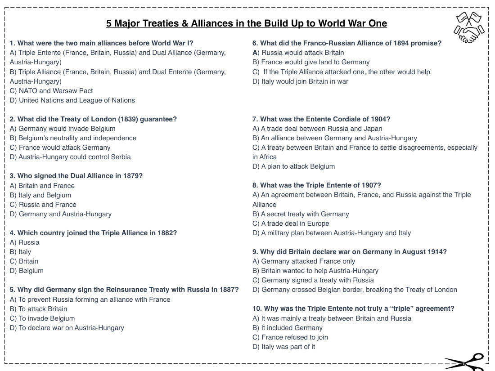
1. 전쟁 전 두 주요 동맹은? → A) 삼국 협상(프랑스·영국·러시아)과 이국 동맹(Dual Alliance: 독일·오스트리아-헝가리)
2. 런던 조약(Treaty of London, 1839)이 보장한 것은? → B) 벨기에의 중립과 독립(Belgium's neutrality and independence)
3. 1879년 이국 동맹(Dual Alliance)을 맺은 나라는? → D) 독일과 오스트리아-헝가리
4. 1882년 삼국 동맹에 들어온 나라는? → B) 이탈리아
5. 독일이 1887년 러시아와 재보장 조약(Reinsurance Treaty)을 맺은 이유는? → A) 러시아가 프랑스와 동맹을 맺지 못하게 하려고
6. 1894년 프랑스-러시아 동맹(Franco-Russian Alliance)의 약속은? → C) 삼국 동맹이 한쪽을 공격하면 다른 쪽이 돕는다
7. 1904년 영불 협상(Entente Cordiale)이란? → C) 특히 아프리카 문제의 다툼을 정리한 영국-프랑스 조약
8. 1907년 삼국 협상(Triple Entente)이란? → A) 삼국 동맹에 맞선 영국·프랑스·러시아의 합의
9. 영국은 왜 1914년 8월 독일에 선전포고했나? → D) 독일이 벨기에 국경을 넘어 런던 조약을 깼기 때문에
10. 삼국 협상이 진짜 '세 나라' 약속이 아니었던 까닭은? → A) 사실상 영국과 러시아 사이의 조약이 중심이었다
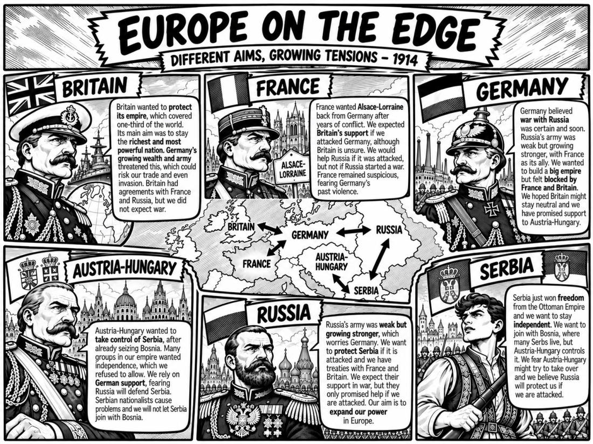
영국(Britain): 세계의 3분의 1을 덮은 제국을 지키고(protect its empire), 가장 부유하고 강한 나라로 남고 싶었다. 독일의 커지는 부와 군대가 무역을 위협하고 침공까지 할 수 있다고 걱정했다. 프랑스·러시아와 협정(agreements)은 있었지만 전쟁을 예상하지는 않았다.
프랑스(France): 오랜 갈등 끝에 독일에 빼앗긴 알자스-로렌(Alsace-Lorraine)을 되찾고 싶었다. 독일을 공격하면 영국이 도와주리라 기대했지만 영국은 확실하지 않았다. 러시아가 공격받으면 돕겠지만 러시아가 전쟁을 시작하면 돕지 않겠다는 입장이었다. 독일의 과거 폭력 때문에 계속 의심했다.
독일(Germany): 러시아와의 전쟁이 확실하고 곧 온다고 믿었다. 러시아 군대는 약하지만 프랑스를 동맹 삼아 강해지고 있었다. 큰 제국(big empire)을 세우고 싶었지만 영국과 프랑스에 막혔다(blocked)고 느꼈다. 영국이 중립(neutral)으로 남기를 바랐고, 오스트리아-헝가리를 돕겠다고 약속했다.
오스트리아-헝가리(Austria-Hungary): 이미 보스니아(Bosnia)를 차지한 뒤 세르비아도 통제(take control of Serbia)하고 싶었다. 제국 안의 여러 민족이 독립을 원했지만 허락하지 않았다. 러시아가 세르비아를 지킬까 봐 독일의 지원(German support)에 기댔다. 세르비아 민족주의자들이 문제를 일으킨다고 보았고, 세르비아가 보스니아와 합치는 것을 막으려 했다.
러시아(Russia): 군대가 약하지만 강해지는 중(weak but growing stronger)이어서 독일을 걱정시켰다. 세르비아가 공격받으면 지켜 주고(protect Serbia) 싶었고, 프랑스·영국과 조약(treaties)이 있었다. 둘의 지원을 기대했지만 두 나라는 러시아가 공격받을 때만 돕겠다고 약속했다. 목표는 유럽에서 영향력을 넓히는 것이었다.
세르비아(Serbia): 막 오스만 제국(Ottoman Empire)에서 독립(freedom)을 얻었고 독립을 지키고(stay independent) 싶었다. 세르비아인이 많이 사는 보스니아와 합치고 싶었지만 오스트리아-헝가리가 보스니아를 지배하고 있었다. 오스트리아-헝가리가 쳐들어올까 두려워했고, 공격받으면 러시아가 지켜 주리라 믿었다.
[지도 화살표] 영국↔독일, 프랑스↔독일, 독일↔러시아, 러시아↔세르비아, 오스트리아-헝가리↔세르비아
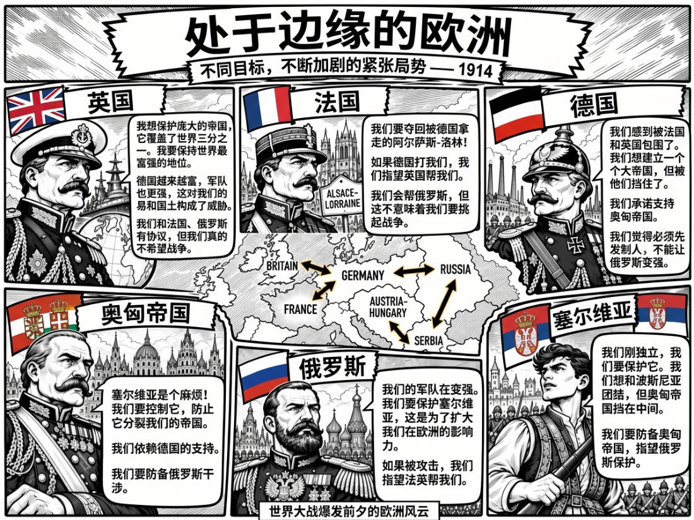
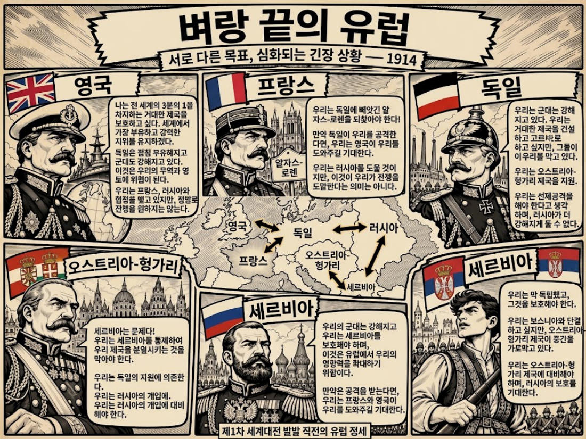
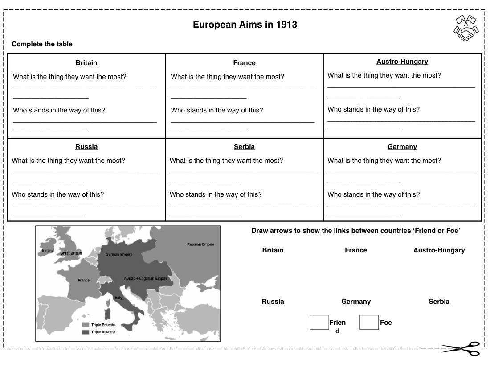
영국·프랑스·오스트리아-헝가리·러시아·세르비아·독일 각 칸에
· 가장 원하는 것은 무엇인가?
· 누가 그것을 가로막는가?
를 쓰고, 나라 사이를 화살표로 이어 '친구(Friend)'인지 '적(Foe)'인지 나타낸다.
1913년 유럽 나라들의 목표 — 표 정답(Green Pen)
영국 — 가장 원한 것: 제국과 힘 지키기 / 막는 나라: 독일
프랑스 — 가장 원한 것: 독일에게서 알자스-로렌 되찾기 / 막는 나라: 독일
오스트리아-헝가리 — 가장 원한 것: 발칸(Balkan States)의 땅, 제국의 안정 / 막는 나라: 러시아
독일 — 가장 원한 것: 더 큰 제국 / 막는 나라: 영국과 프랑스
러시아 — 가장 원한 것: 강한 군대, 발칸의 땅 / 막는 나라: 독일과 오스트리아-헝가리
세르비아 — 가장 원한 것: 독립 유지, 보스니아(발칸의 일부) 땅 / 막는 나라: 오스트리아-헝가리
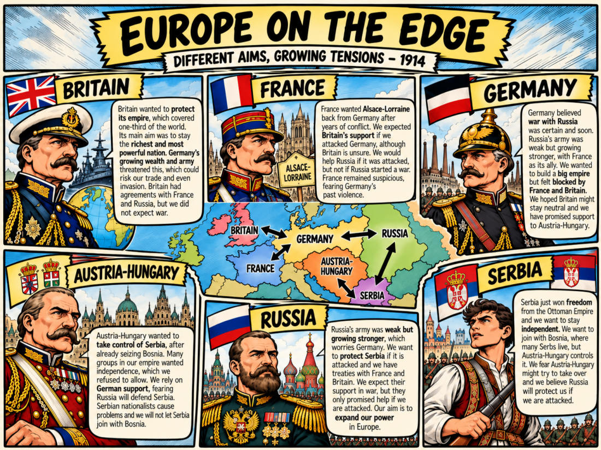
영국(Britain): 세계의 3분의 1을 덮은 제국을 지키고(protect its empire), 가장 부유하고 강한 나라로 남고 싶었다. 독일의 커지는 부와 군대가 무역을 위협하고 침공까지 할 수 있다고 걱정했다. 프랑스·러시아와 협정(agreements)은 있었지만 전쟁을 예상하지는 않았다.
프랑스(France): 오랜 갈등 끝에 독일에 빼앗긴 알자스-로렌(Alsace-Lorraine)을 되찾고 싶었다. 독일을 공격하면 영국이 도와주리라 기대했지만 영국은 확실하지 않았다. 러시아가 공격받으면 돕겠지만 러시아가 전쟁을 시작하면 돕지 않겠다는 입장이었다. 독일의 과거 폭력 때문에 계속 의심했다.
독일(Germany): 러시아와의 전쟁이 확실하고 곧 온다고 믿었다. 러시아 군대는 약하지만 프랑스를 동맹 삼아 강해지고 있었다. 큰 제국(big empire)을 세우고 싶었지만 영국과 프랑스에 막혔다(blocked)고 느꼈다. 영국이 중립(neutral)으로 남기를 바랐고, 오스트리아-헝가리를 돕겠다고 약속했다.
오스트리아-헝가리(Austria-Hungary): 이미 보스니아(Bosnia)를 차지한 뒤 세르비아도 통제(take control of Serbia)하고 싶었다. 제국 안의 여러 민족이 독립을 원했지만 허락하지 않았다. 러시아가 세르비아를 지킬까 봐 독일의 지원(German support)에 기댔다. 세르비아 민족주의자들이 문제를 일으킨다고 보았고, 세르비아가 보스니아와 합치는 것을 막으려 했다.
러시아(Russia): 군대가 약하지만 강해지는 중(weak but growing stronger)이어서 독일을 걱정시켰다. 세르비아가 공격받으면 지켜 주고(protect Serbia) 싶었고, 프랑스·영국과 조약(treaties)이 있었다. 둘의 지원을 기대했지만 두 나라는 러시아가 공격받을 때만 돕겠다고 약속했다. 목표는 유럽에서 영향력을 넓히는 것이었다.
세르비아(Serbia): 막 오스만 제국(Ottoman Empire)에서 독립(freedom)을 얻었고 독립을 지키고(stay independent) 싶었다. 세르비아인이 많이 사는 보스니아와 합치고 싶었지만 오스트리아-헝가리가 보스니아를 지배하고 있었다. 오스트리아-헝가리가 쳐들어올까 두려워했고, 공격받으면 러시아가 지켜 주리라 믿었다.
[지도 화살표] 영국↔독일, 프랑스↔독일, 독일↔러시아, 러시아↔세르비아, 오스트리아-헝가리↔세르비아
1. 군국주의 · Militarism
나라가 강한 군대를 갖고, 나라의 이익을 지키거나 늘리려고 그 군대를 쓸 준비가 되어 있어야 한다는 생각이다.
전쟁 전 모든 주요 유럽 나라는 적을 공격할 전쟁 계획(military plans)을 세워 두었다. 지도자들은 빨리 이길 수 있다고 자신했고, 군 지휘관들이 성공을 장담하니 정부는 평화를 지키려는 노력을 충분히 하지 않았다. 그래서 작은 다툼이 점점 심각해졌다.
군 지휘관들은 현대전(modern warfare)을 제대로 이해하지 못했다. 새 무기가 공격과 방어를 둘 다 강하게 만들어 전쟁이 훨씬 오래갈 수 있고, 긴 전쟁이 나라 경제에 큰 피해를 준다는 것을 놓쳤다.
2. 예방 전쟁 · Preventive (preventative) war
많은 역사가는 독일의 전쟁 계획이 예방 전쟁 — 다른 나라가 공격하기 전에 먼저 공격하는 것 — 을 노렸다고 본다.
독일은 프랑스와 러시아에 둘러싸일까(surrounded) 두려워했다. 러시아가 프랑스의 도움으로 군대를 현대화하자 '시간이 없다, 전쟁은 피할 수 없다'고 믿었다.
그러나 이 계획은 다른 나라들이 독일의 공격을 두려워해 군대를 키우게 만들어 전쟁 가능성을 오히려 높였다.
3. 군대가 정부보다 셌던 독일 · Who controlled the army?
1913년 차베른 사건(Zabern affair)에서 알자스의 독일 장교가 민간인을 함부로 대하고도 처벌받지 않았다 — 군대가 법을 어겨도 마음대로 움직였다.
프랑스·영국은 정부가 군대를 통제했지만 독일은 군대가 독자적으로 움직였다. 여기에 빌헬름 2세(Kaiser Wilhelm II)의 충동적이고(impulsive) 비외교적인(undiplomatic) 행동이 더해져 다른 나라들이 독일을 믿지 않게 되었다.
4. 징병제와 거대한 군대 · Conscription
징병제(conscription) — 남자들이 정해진 기간 군에서 복무하는 제도. 덕분에 주요 강대국들은 크고 훈련된 군대를 가졌다.
프랑스와 러시아는 복무 기간을 늘렸고 독일도 새 법으로 군인 수를 늘렸다. 훈련된 예비군(reserves) 덕분에 전쟁 때 군대가 평소의 4배까지 커질 수 있었다.
1890~1914년 병력 증가율: 독일 109.2%, 러시아 99.7%, 오스트리아-헝가리 80.5%, 프랑스 67.9%, 이탈리아 59.7%, 영국 45% (일본 331%, 미국 382.4%).
독일·프랑스·러시아의 증가율이 큰 까닭은 서로 직접 경쟁하며 이웃보다 강해지려 했기 때문이다. 독일은 포위될까 두려워 빠르게 늘렸고, 프랑스·러시아는 독일의 힘에 맞추려고 늘렸다. 증가율(percentage change)은 출발 크기가 다른 나라들을 공정하게 비교하게 해 준다.
5. 영국과 독일의 해군 경쟁 · The naval race
영국에 강한 해군이 필요했던 이유: 섬나라라 해안을 지켜야 했고, 넓은 해외 제국을 지켜야 했고, 다른 나라와의 무역에 기대어 무역선을 지켜야 했다.
독일이 해군을 키운 이유: 빌헬름 2세는 영국의 힘과 제국을 질투해 독일도 그만큼 강해지길 원했고, 독일에도 제국이 있으니 지킬 큰 해군이 필요하다고 주장했다.
1906년 영국이 당시 가장 강력한 전함 HMS 드레드노트(Dreadnought)를 띄우자 독일은 이를 위협으로 여기고 서둘러 맞설 전함을 만들었다(영독 해군 경쟁 Anglo-German Naval Race).
1914년 드레드노트 수: 영국 29척 vs 독일 17척. 동맹별로는 삼국 협상(영·프·러) 43척 vs 독일+오스트리아-헝가리 21척.
6. 사료 분석 · Analysing sources
Puck 만화('No Limit') — 강대국을 나타내는 인물들이 전함을 올려놓고 카드 게임을 한다(미국은 엉클 샘 Uncle Sam). 메시지: 나라들이 더 센 해군을 만들려고 끝없이 판돈을 올리며 긴장이 커진다. 작가는 사람들이 해군 군비 경쟁을 걱정하길 바랐을 것이다.
사료 B — 1908년 데일리 텔레그래프(Daily Telegraph) 인터뷰 — 빌헬름 2세는 영국과 평화를 원하며 약속을 어긴 적이 없다고 했다. 독일의 큰 해군은 영국을 위협하려는 게 아니라 세계로 뻗은 무역을 지키려는 것이고, 일본의 부상과 중국의 성장에 대비해야 한다고 했다. 하지만 영국은 말로는 평화를 외치며 실제로는 영국 해군력을 위협할 해군을 만드는 독일을 더 의심(suspicious)하게 되었을 가능성이 크다.
7. 위장 무늬 배 · Dreadnoughts & Dazzle Ships
전쟁 중 독일 유보트(U-boats, 잠수함)가 식량·물자를 실은 영국 상선을 위협했다. 1917년 화가이자 해군 지원병 노먼 윌킨슨(Norman Wilkinson)이 배에 굵은 무늬와 밝은 색을 칠해 적이 속도와 방향을 헷갈리게 하는 '대즐 위장(dazzle camouflage)'을 고안했다.
✍️ 꼭 알아야 하는 것
- 군국주의·군비 경쟁·징병제·드레드노트·예방 전쟁의 뜻을 영어로 쓸 수 있어야 한다.
- 영독 해군 경쟁(1906 HMS Dreadnought → 독일의 맞대응)이 두려움과 불신을 키워 전쟁 가능성을 높인 과정을 증거와 함께 설명할 수 있어야 한다.
- 표·만화·인터뷰 같은 사료(source)에서 정보를 찾아 '이 사료가 WW1의 원인을 이해하는 데 어떻게 도움이 되는지' 설명할 수 있어야 한다.
지난 시간: 삼국 협상과 삼국 동맹의 같은 점 2가지와 다른 점 2가지를 말하라.
두 시간 전: '제국주의(imperialism)'는 무슨 뜻인가?
세 시간 전: 1914년 이전 유럽에서 전쟁 가능성을 높인 주요 긴장은 무엇이었나?
같은 점: 둘 다 서로 돕기로 한 군사 약속이고 세 나라씩이다. 다른 점: 구성 나라가 다르고(협상=영·프·러 / 동맹=독·오·이), 동맹(1882)이 협상(1907)보다 먼저 만들어졌다.
🧭 충족: 1914년 이전 군국주의·예방 전쟁·징병제의 주요 특징을 찾을 수 있다.
🔎 초과: 군사력 확대와 예방 전쟁이 유럽 나라들 사이의 긴장을 어떻게 키웠는지 설명할 수 있다.
🧠 숙달: 군사 통계를 해석해 군비 경쟁이 1914년 이전 유럽의 긴장을 어떻게 키웠는지 분석할 수 있다.

M = 군국주의(Militarism)
A = 동맹 체제(Alliance System)
I = 제국주의(Imperialism)
N = 민족주의(Nationalism)
S = 중요한 인물(Significant Individuals)
군비 경쟁(Arms Race) — 둘 이상의 나라가 서로보다 우위에 서려고 더 많은 군인·무기·새 기술로 군대를 강하게 만들려고 겨루는 것.
드레드노트(Dreadnought) — 석유(디젤) 엔진을 달아 당시 어떤 전함보다 빠르고 강했던 전함.
군국주의(Militarism) — 나라가 강한 군대를 갖고, 나라의 이익을 지키거나 늘리려고 그 군대를 쓸 준비가 되어 있어야 한다는 생각.
징병(Conscription) — 남자들이 정해진 기간 동안 군대에서 복무하도록 하는 제도.
제1차 세계대전 전, 모든 주요 유럽 나라는 적을 공격할 계획을 세워 두었다. 지도자들은 빨리 이길 수 있다고 자신했다. 군 지휘관들이 성공을 기대했기 때문에 정부는 평화를 지키려는 노력을 충분히 하지 않았고, 그 결과 나라 사이의 작은 다툼이 점점 심각해지도록 내버려 두었다.
군 지휘관들은 현대전을 제대로 이해하지 못했다. 새 무기가 공격과 방어를 모두 강하게 만들어 전쟁이 훨씬 오래갈 수 있다는 것을 몰랐고, 긴 전쟁이 경제에 줄 피해도 얕잡아 보았다.
많은 역사가는 독일의 전쟁 계획이 예방 전쟁(preventive war)을 노렸다고 본다. 다른 나라가 공격하기 전에 먼저 공격하는 것이다. 그러나 이것은 다른 나라들이 독일의 공격을 두려워해 스스로를 지키려고 군대를 키우게 만들어 전쟁을 더 일어나기 쉽게 했다.
· 영국은 섬나라라서 해안을 지킬 해군이 필요했다.
· 넓은 해외 제국(Empire)을 지켜야 했다.
· 다른 나라와의 무역에 기대고 있어 무역선을 지킬 해군이 필요했다.
활동: 1분 생각 → 1분 짝과 토론 → 1분 답 적기 → 발표
· 빌헬름 2세는 영국의 힘과 제국을 질투했고 독일도 그만큼 강해지길 원했다.
· 독일에도 제국이 있으니 그것을 지킬 큰 해군이 필요하다고 주장했다.
활동: 1분 생각 → 1분 짝과 토론 → 1분 답 적기 → 발표
1906년 영국군은 그때까지 만들어진 가장 강력한 해군 함정 HMS 드레드노트(HMS Dreadnought)를 띄웠다. 독일은 이 배를 위협으로 여기고 영국 해군에 맞설 강력한 배를 서둘러 만들었다.
제1차 세계대전 중 독일 유보트(U-boats, 잠수함)가 식량과 물자를 나르는 영국 상선을 위협했다. 1917년 화가이자 해군 지원병인 노먼 윌킨슨(Norman Wilkinson)이 배에 굵은 무늬와 밝은 색을 칠해 적이 배의 속도와 방향을 헷갈리게 하는 '대즐 위장(dazzle camouflage)'을 발명했다. 효과가 있었다는 확실한 증거는 없지만 선원들은 더 안전하다고 느꼈다. 영국은 전쟁 뒤 쓰지 않았지만 미국은 제2차 세계대전 때 다시 썼다.
함께 읽기: '독일의 군국주의와 예방 전쟁' 글을 읽고 활동지 문제에 답한다.
완성한 표를 자세히 보자.
1. 1890~1914년 육군·해군 병력 증가율이 가장 큰 유럽 나라는?
2. 두 나라를 골라 증가율을 비교하라.
3. 나라들이 군대를 키우고 싶어 한 이유 하나를 설명하라.
Extra Hot: "더 강한 군대를 만든 것은 유럽 나라들을 더 안전하게 했지, 전쟁 가능성을 높이지 않았다." 얼마나 동의하는가?
· 증가율 표의 증거를 쓴다 · 나라들이 왜 더 강한 군대를 원했는지 설명한다 · 군대 확대가 왜 다른 나라를 위협으로 느끼게 했는지 설명한다 · 근거 있는 결론을 내린다.
1번 답: 유럽 나라 중에서는 독일(109.2%)이다. 전체로는 미국(382.4%)과 일본(331%)이 더 크지만 유럽 나라가 아니다.
1. 1914년 독일이 예방 전쟁을 계획했다는 것은 → 다른 나라가 공격하지 못하도록 먼저 공격한다는 뜻이다.
2. 독일이 프랑스와 러시아에 둘러싸일까 두려워한 까닭은 → 러시아가 프랑스의 지원으로 군대를 현대화해 두 이웃이 모두 강해지고 있었기 때문이다.
3. 1913년 차베른 사건이 보여 준 것은 → 독일 군대의 힘이 너무 세서 법을 어겨도 처벌받지 않고 행동할 수 있었다는 것이다.
4. 프랑스·영국과 달리 독일 군대는 → 정부의 완전한 통제를 받지 않고 독자적으로 움직일 수 있었다.
5. 빌헬름 2세의 충동적이고 비외교적인 행동 때문에 → 다른 나라들이 독일을 믿지 않게 되어 전쟁 가능성이 커졌다.
1890년과 1914년 주요 강대국의 육군·해군 병력(단위: 천 명)과 증가율
러시아 677 → 1,352 (99.7%)
프랑스 542 → 910 (67.9%)
독일 426 → 891 (109.2%)
영국 367 → 532 (45%)
오스트리아-헝가리 246 → 444 (80.5%)
이탈리아 216 → 345 (59.7%)
일본 71 → 306 (331%)
미국 34 → 164 (382.4%)
증가율 계산(% Change) = (1914년 숫자 − 1890년 숫자) ÷ 1890년 숫자 × 100
예: 러시아 — 증가 = 1352 − 677 = 675, 처음 숫자 = 677, 675 ÷ 677 × 100 = 99.7%
1. 1914년 독일이 예방 전쟁을 계획했다는 것은 → 다른 나라가 공격하지 못하도록 먼저 공격한다는 뜻이다.
2. 독일이 프랑스와 러시아에 둘러싸일까 두려워한 까닭은 → 러시아가 프랑스의 지원으로 군대를 현대화해 두 이웃이 모두 강해지고 있었기 때문이다.
3. 1913년 차베른 사건이 보여 준 것은 → 독일 군대의 힘이 너무 세서 법을 어겨도 처벌받지 않고 행동할 수 있었다는 것이다.
4. 프랑스·영국과 달리 독일 군대는 → 정부의 완전한 통제를 받지 않고 독자적으로 움직일 수 있었다.
5. 빌헬름 2세의 충동적이고 비외교적인 행동 때문에 → 다른 나라들이 독일을 믿지 않게 되어 전쟁 가능성이 커졌다.
러시아 677 → 1,352 (99.7%)
프랑스 542 → 910 (67.9%)
독일 426 → 891 (109.2%)
영국 367 → 532 (45%)
오스트리아-헝가리 246 → 444 (80.5%)
이탈리아 216 → 345 (59.7%)
일본 71 → 306 (331%)
미국 34 → 164 (382.4%)
증가율 계산(% Change) = (1914년 숫자 − 1890년 숫자) ÷ 1890년 숫자 × 100
예: 러시아 — 증가 = 1352 − 677 = 675, 처음 숫자 = 677, 675 ÷ 677 × 100 = 99.7%
3. 독일·프랑스·러시아의 증가율이 큰 까닭
· 서로 직접 경쟁하며 이웃보다 강해지고 싶었다.
· 독일은 프랑스와 러시아에 둘러싸일까 두려워 빠르게 병력을 늘렸다.
· 프랑스와 러시아는 커지는 독일의 힘에 맞추려고 군대를 늘렸다.
4. 증가율이 자료 이해에 도움이 되는 까닭
· 나라의 육군·해군이 처음 크기에 비해 얼마나 커졌는지 보여 준다.
· 크기가 다른 나라들을 공정하게 비교하기 쉽다.
· 숫자만 볼 때보다 성장이 더 분명히 보인다.
1. 독일은 제1차 세계대전 전 프랑스와 러시아가 약해지고 있다고 믿었다. → 거짓(강해지고 있다고 두려워했다)
2. 1914년 전 주요 유럽 나라는 모두 전쟁이 날 때를 대비한 군사 계획이 있었다. → 참
3. 영국은 해안·제국·해외 무역을 지키려고 강한 해군을 만들었다. → 참
4. 1906년 HMS 드레드노트 진수는 독일이 더 강력한 전함을 만들게 했다. → 참
5. 징병제 덕분에 유럽 나라들은 전쟁 전 크고 훈련된 군대를 가질 수 있었다. → 참
6. 독일의 예방 전쟁 계획은 유럽 나라들 사이의 두려움과 불신을 줄였다. → 거짓(오히려 키웠다)
🧭 충족: 역사 사료(historical sources)에서 제1차 세계대전 전 군사 경쟁에 관한 정보를 찾을 수 있다.
🔎 초과: 사료가 군국주의와 군비 경쟁이 유럽 나라들 사이의 긴장을 키웠다는 것을 어떻게 보여 주는지 설명할 수 있다.
🧠 숙달: 사료의 증거와 내가 아는 지식(own knowledge)을 함께 써서 군국주의와 군비 경쟁이 어떻게 1914년 전쟁을 더 일어나기 쉽게 했는지 분석할 수 있다.
M = 군국주의(Militarism)
A = 동맹 체제(Alliance System)
I = 제국주의(Imperialism)
N = 민족주의(Nationalism)
S = 중요한 인물(Significant Individuals)
군비 경쟁(Arms Race) — 둘 이상의 나라가 서로보다 우위에 서려고 더 많은 군인·무기·새 기술로 군대를 강하게 만들려고 겨루는 것.
드레드노트(Dreadnought) — 석유(디젤) 엔진을 달아 당시 어떤 전함보다 빠르고 강했던 전함.
군국주의(Militarism) — 나라가 강한 군대를 갖고, 나라의 이익을 지키거나 늘리려고 그 군대를 쓸 준비가 되어 있어야 한다는 생각.
징병(Conscription) — 남자들이 정해진 기간 동안 군대에서 복무하도록 하는 제도.
영상 'The CAUSES of World War I(제1차 세계대전의 원인)'을 보며 객관식 문제를 푼다.
1. A) 강한 군대를 만들고 쓸 준비가 되어 있는 것 (= 군국주의)
2. B) 새 공장들이 무기를 더 빠르고 더 치명적으로 만들었다
3. D) 독일 (전쟁 전 가장 강한 군대)
4. B) 프랑스 군대는 국내 문제로 약했다
5. C) 독일·이탈리아·오스트리아-헝가리 (삼국 동맹)
6. D) 전쟁이 나면 군대를 빨리 옮기려고 (철도)
7. A) 더 큰 제국을 만들려는 경쟁 (= 제국주의)
8. B) 나라들이 자부심을 느끼면서도 다른 나라를 두려워했다 (= 민족주의)
9. C) 프란츠 페르디난트 대공이 살해되었다 (전쟁의 '불씨 spark')
10. A) 동맹 체제가 많은 나라를 전쟁으로 끌어들였다
1. 찾기(Identify) — 무엇이 보이는가?
2. 설명(Explain) — 어떤 메시지를 보여 주는가?
3. 생각(Think) — 작가는 왜 사람들이 이렇게 생각하길 바랐을까?
4. 증거 쓰기(Use evidence) — 어떤 부분이 내 답을 뒷받침하는가?
역사적 배경 — 1914년 이전: 제1차 세계대전 전 영국·독일 같은 강대국들은 더 강한 해군을 만들려고 경쟁했다. 이 해군 군비 경쟁은 유럽 전체의 두려움과 긴장을 키웠다.
1. 찾기 — 강대국을 나타내는 인물들이 전함이 놓인 탁자에 둘러앉아 있다. 엉클 샘(Uncle Sam)은 미국을 나타낸다.
2. 설명 — 나라들이 더 강한 해군을 만들려고 경쟁하며 긴장이 커지고 있다.
3. 생각 — 작가는 사람들이 커지는 해군 군비 경쟁을 걱정하길 바랐을 것이다.
4. 증거 — 수많은 전함은 경쟁을 보여 주고, 군비 경쟁이 멈추지 않고 이어질 수 있다는 것을 암시한다.
활동: 사료 A와 B를 써서 가장 강한 해군을 찾고, 경쟁이 어떻게 긴장을 키웠는지 설명하고, 독일 황제(Kaiser)의 주장이 영국을 안심시켰을지 걱정시켰을지 평가한다.
사료 A — 1914년 강대국들의 해군력 (증거로 판단하기)
a. 1914년까지 드레드노트가 가장 많은 나라는?
b. 드레드노트가 가장 많은 동맹은?
c. 이 해군 경쟁은 어떻게 긴장(tensions)을 키웠을까?
사료 B — 데일리 텔레그래프 인터뷰 (메시지와 목적 이해하기)
a. 황제는 영국과 어떤 관계를 원했나?
b. 황제에 따르면 독일은 왜 큰 해군이 필요했나?
c. 일본과 중국은 그의 주장을 어떻게 뒷받침했나?
d. 황제의 설명은 영국을 안심시켰을까(reassure), 아니면 독일을 더 의심하게(suspicious) 했을까?
Extra Hot: 사료와 내가 아는 지식으로 군국주의와 군비 경쟁이 어떻게 제1차 세계대전 발발에 이바지했는지 설명하라.
황제는 영국과 평화롭게 지내고 싶으며 영국인들이 왜 자기를 믿지 않는지 모르겠다고 했다. 길드홀(Guildhall) 연설에서 영국과 좋은 관계로 지내는 것이 가장 큰 바람 중 하나라고 약속했던 것을 떠올리게 하며, 자기가 약속을 어긴 적이 있느냐고 물었다.
황제는 독일이 큰 해군을 만들고 있다고 인정했지만 영국을 위협하려는 것이 아니라고 했다. 독일은 세계 곳곳과 무역하는 젊고 성장하는 제국이라 그것을 지켜야 하며, 먼 바다에서도 독일의 이익을 지키려면 강한 해군이 필요하다고 주장했다.
그는 일본의 부상과 중국이 깨어날 가능성을 들며, 모든 유럽 강대국이 태평양에서의 미래 도전에 대비해야 한다고 했다. 또 언젠가 영국이 국제 문제에서 독일 함대를 동맹으로 반길 수도 있다고 덧붙였다.
1. 드레드노트가 가장 많은 나라 → 영국 29척 (독일 17척)
2. 드레드노트가 가장 많은 동맹 → 삼국 협상(영국·프랑스·러시아) 43척 (독일·오스트리아-헝가리 21척)
3. 해군 경쟁이 긴장을 키운 방식 → 영국과 독일은 더 강한 해군을 만들려고 경쟁했다. 영국은 커지는 독일 해군을 위협으로 보았을 수 있고, 독일은 자기 무역과 이익을 지키고 싶어 했다. 이 경쟁이 두 나라 사이의 두려움과 불신을 키웠다.
1. 황제가 원한 관계 → 영국과 평화롭고 친한 관계. 두 나라가 좋은 사이로 지내길 바란다고 했다.
2. 독일에 큰 해군이 필요한 이유(황제의 말) → 독일은 세계와 무역하는 성장하는 제국이라 보호가 필요하고, 먼 바다에서도 독일의 이익을 지키려면 강한 해군이 필요하다.
3. 일본과 중국 → 일본이 강해지고 중국도 강해질 수 있으니 유럽 나라들이 태평양의 미래 도전에 대비해 강한 해군이 필요하다는 근거로 썼다.
황제의 설명이 영국을 안심시켰을까, 더 의심하게 했을까?
· 영국을 더 의심하게 했을 수 있다. 황제는 평화를 원한다고 했지만 독일은 영국 해군력을 위협할 수 있는 큰 해군을 만들고 있었다. 황제가 친한 관계를 원한다고 말해도 영국은 독일이 경쟁자가 될까 걱정했을 것이다.
· 반대로 독일에도 지킬 해외 무역이 있었으니 그의 설명이 그럴듯하다고 본 사람도 있었을 것이다. 그래도 평화를 약속하는 말만으로는 커지는 독일 해군에 대한 영국의 걱정이 사라지지 않았을 것이다.
시험의 사료 문제는 이렇게 '한쪽 의견 + 다른 쪽 가능성 + 판단' 순서로 쓰면 좋다.
a) 계속 더 큰 육군·해군을 만들었다
b) 더 많은 나라를 전쟁에 끌어들일 수 있는 동맹을 맺었다
c) 충돌을 피하려고 열심히 함께 노력했다 ← 다른 하나
d) 식민지와 힘을 두고 경쟁했다
a) 선의를 보이려고 군대를 줄였다 ← 다른 하나
b) 동맹 때문에 서로를 의심했다
c) 독일이 영국 해군에 맞서려 했다
d) 지도자들은 강한 나라만 영향력을 가질 자격이 있다고 생각했다
a) 지도자들은 평화를 원한다면서 무기를 계속 만들었다
b) 동맹은 방어용이라 했지만 불신을 키웠다
c) 나라들이 몰래 전쟁을 준비했다
d) 지도자들이 군비 경쟁을 줄이자고 공개적으로 합의했다 ← 다른 하나
a) 평화 대신 군국주의를 따랐다
b) 군대를 줄이면 약해 보일까 두려워했다
c) 인기가 없어도 군비 경쟁에 맞섰다 ← 다른 하나
d) 동맹이 자기 선택을 좌우하게 두었다
1. 예방 전쟁 · Preventive war
남이 공격하기 전에 먼저 공격하는 전략이다. 독일은 프랑스·러시아에 둘러싸일까 두려워했고, 러시아가 프랑스 도움으로 군대를 현대화하자 '시간이 없다'고 믿었다. 하지만 다른 나라들이 위협을 느껴 군대를 키우게 되어 전쟁 가능성이 오히려 커졌다.
2. 차베른 사건 · The Zabern Affair (1913)
알자스의 차베른에서 독일 장교가 민간인을 함부로 대하고도 처벌받지 않았다. 독일 군대가 법을 어겨도 마음대로 움직일 만큼 힘이 셌다는 증거다.
3. 군대를 누가 통제했나 · Who controlled the army?
프랑스·영국은 정부가 군대를 통제했지만 독일은 군대가 독자적으로 움직였다. 여기에 빌헬름 2세의 충동적(impulsive)이고 비외교적(undiplomatic)인 행동이 겹쳐 다른 나라들이 독일을 믿지 않았다.
4. 징병제와 예비군 · Conscription and reserves
징병제로 큰 훈련된 군대가 생겼다. 프랑스·러시아는 복무 기간을 늘렸고 독일은 새 법으로 군인을 늘렸다. 예비군 덕분에 전시 군대는 평시의 4배까지 커질 수 있었다.
✍️ 꼭 알아야 하는 것
- 예방 전쟁·차베른 사건·징병제가 무엇이고 왜 긴장을 키웠는지 한 문장씩 설명할 수 있어야 한다.
- 증가율 공식 (1914 − 1890) ÷ 1890 × 100 으로 병력 증가율을 계산하고 비교할 수 있어야 한다.
1914년 독일은 예방 전쟁(preventive war), 곧 남이 공격하기 전에 먼저 공격하는 전략을 쓰려 했다. 그런데 이 전략은 오히려 전쟁을 더 일어나기 쉽게 했다. 다른 나라들이 위협을 느끼고 군대를 준비해 군비 경쟁을 더 키웠기 때문이다.
독일은 프랑스·러시아 같은 강한 이웃에게 둘러싸일까(surrounded) 걱정했다. 특히 러시아가 프랑스의 도움으로 군대를 현대화(modernising)하고 있었다. 전쟁은 피할 수 없고 시간이 없다고 생각한 독일의 예방 전쟁 계획은 유럽의 긴장을 키웠다.
빌헬름 2세(Kaiser Wilhelm II) 아래 독일의 군국주의는 나라가 얼마나 공격적인지 보여 주었다. 1913년 차베른 사건(Zabern affair) — 알자스의 독일 장교가 민간인을 함부로 대하고도 처벌받지 않은 일 — 은 군대의 힘이 얼마나 센지 보여 주었다. 군대는 법을 어겨도 마음대로 움직일 수 있었다.
정부가 군대를 통제한 프랑스·영국과 달리 독일 지도자들은 군대가 독자적으로(independently) 움직이게 두었다. 여기에 빌헬름 2세의 충동적이고(impulsive) 외교적이지 못한(undiplomatic) 행동이 더해져, 독일의 예방 전쟁 집착은 유럽이 제1차 세계대전에 다가간 큰 이유가 되었다.
군비 경쟁(The Arms Race) — 전쟁 전 유럽 나라들은 남자들이 정해진 기간 군 복무를 하는 징병제(conscription)를 써서 크고 훈련된 군대를 가졌다. 전쟁 직전 몇 해 동안 프랑스와 러시아는 복무 기간을 늘려 군대를 더 키웠고, 독일도 새 법으로 군인 수를 늘렸다.
전쟁이 나면 군대는 훨씬 커질 수 있었다. 대부분의 나라가 훈련된 남자들을 예비군(reserve)으로 두고 필요할 때 불러냈기 때문에, 전쟁 때 군대가 평소의 4배까지 커져 유럽 전체에 거대한 군사력이 생겼다.
용어집: 예방 전쟁 — 남이 공격하지 못하게 먼저 공격하는 것 / 군대(Military) — 한 나라의 육군·해군 등 무장 병력 / 충동적(Impulsive) — 깊이 생각하지 않고 서둘러 행동하는 것 / 외교적(Diplomatic) — 나라 사이 좋은 관계를 지키려고 말과 행동을 조심하는 것 / 비외교적(Undiplomatic) — 다른 나라를 화나게 하거나 문제를 일으키는 말과 행동
① 예방 전쟁이란? 1914년 독일은 남이 공격하기 전에 먼저 공격하는 예방 전쟁을 계획했다. 다른 나라들이 위협을 느끼고 군대를 준비하게 되어 오히려 전쟁 가능성이 커졌다.
② 둘러싸였다고 느낀 독일 — 강한 이웃, 특히 프랑스와 러시아에 둘러싸일까 두려워했다. 러시아가 프랑스의 도움으로 군대를 현대화하자 독일 지도자들은 시간이 없고 전쟁은 피할 수 없다고 믿었다.
③ 군대의 힘 — 1913년 알자스의 차베른 사건에서 독일 장교가 민간인을 함부로 대하고도 처벌받지 않았다. 군대가 법을 어겨도 마음대로 움직일 수 있다는 뜻이었다.
④ 누가 군대를 통제했나? 독일: 군대의 영향력이 강하고 정부의 통제를 덜 받았다. / 프랑스와 영국: 정부가 군대를 통제하고 군사 정책을 결정했다.
⑤ 군비 경쟁 — 징병제로 남자들이 정해진 기간 복무했다. 프랑스·러시아는 복무 기간을 늘렸고 독일은 새 법으로 군대를 키웠다. ('당신의 나라가 당신을 필요로 한다!' 포스터)
⑥ 전쟁 준비가 된 군대 — 훈련된 예비군을 두어, 전시 군대(wartime army)가 평시 군대(peacetime army)의 최대 4배가 되었다.
군국주의는 어떻게 전쟁을 더 일어나기 쉽게 했나? 이웃 나라에 대한 두려움 → 군사력 확대 → 다른 나라들이 위협을 느낌 → 더 많은 무기와 군인 → 긴장 고조 → 전쟁 가능성 증가
1. 1914년 독일이 예방 전쟁을 계획했다는 것은 → 다른 나라가 공격하지 못하도록 먼저 공격한다는 뜻이다.
2. 독일이 프랑스와 러시아에 둘러싸일까 두려워한 까닭은 → 러시아가 프랑스의 지원으로 군대를 현대화해 두 이웃이 모두 강해지고 있었기 때문이다.
3. 1913년 차베른 사건이 보여 준 것은 → 독일 군대의 힘이 너무 세서 법을 어겨도 처벌받지 않고 행동할 수 있었다는 것이다.
4. 프랑스·영국과 달리 독일 군대는 → 정부의 완전한 통제를 받지 않고 독자적으로 움직일 수 있었다.
5. 빌헬름 2세의 충동적이고 비외교적인 행동 때문에 → 다른 나라들이 독일을 믿지 않게 되어 전쟁 가능성이 커졌다.
1890년과 1914년 주요 강대국의 육군·해군 병력(단위: 천 명)과 증가율
러시아 677 → 1,352 (99.7%)
프랑스 542 → 910 (67.9%)
독일 426 → 891 (109.2%)
영국 367 → 532 (45%)
오스트리아-헝가리 246 → 444 (80.5%)
이탈리아 216 → 345 (59.7%)
일본 71 → 306 (331%)
미국 34 → 164 (382.4%)
증가율 계산(% Change) = (1914년 숫자 − 1890년 숫자) ÷ 1890년 숫자 × 100
예: 러시아 — 증가 = 1352 − 677 = 675, 처음 숫자 = 677, 675 ÷ 677 × 100 = 99.7%
1. 프란츠 페르디난트는 누구? · Who was Franz Ferdinand?
오스트리아-헝가리의 다음 황제가 될 왕위 계승자(heir to the throne)였다. 황제의 아들인 루돌프 황태자(Crown Prince Rudolf)가 1889년 죽고, 아버지 카를 루트비히가 계승권을 포기하면서 계승자가 되었다.
그래서 그가 암살되면 큰 정치적 위기(political crisis)가 될 수밖에 없었다.
2. 발칸의 긴장과 민족주의 · Tension in the Balkans
세르비아는 1800년대에 오스만 제국(Ottoman Empire)에서 독립했지만 많은 세르비아인이 여전히 오스트리아-헝가리 지배 아래 살았다.
1908년 오스트리아-헝가리가 보스니아(Bosnia)를 차지하자, 세르비아인을 하나로 묶으려던 세르비아 민족주의자들의 꿈이 막혀 분노가 커졌다.
민족주의(Nationalism) — 같은 문화·언어·역사를 가진 사람들은 자기 나라를 가져야 한다는 생각이 이 갈등의 바탕이다.
3. 검은 손 · The Black Hand
'통일이냐 죽음이냐(Unification or Death)'라고도 불린 비밀 세르비아 민족주의 단체로 1911년에 만들어졌다.
모든 세르비아 사람을 한 나라로 묶으려 했고 그것을 위해 폭력(violence)도 쓸 각오였다. 젊은이들에게 무기와 폭탄 만드는 법을 가르쳤고 세르비아 군 지도자들의 지원도 일부 받았다. 프린치프 일행에게 권총과 폭탄을 주었다.
4. 세계를 바꾼 총성 · A shot that changed the world
1914년 6월 28일 대공 부부가 보스니아의 사라예보(Sarajevo)를 방문했다. 그날은 세르비아 역사와 민족 정체성에 중요한 날인 비도브단(Vidovdan)이라 이미 긴장된 지역에서 방문의 의미가 더 커졌다.
앞서 폭탄으로 차를 노린 시도는 빗나갔지만, 나중에 운전사가 길을 잘못 들어 가브릴로 프린치프(Gavrilo Princip) 근처에 멈췄고, 프린치프가 두 사람을 쏘아 죽였다.
5. 암살에서 세계대전까지 · From assassination to world war
① 6월 28일 암살 → ② 오스트리아-헝가리가 세르비아를 탓함 → ③ 독일이 지원을 약속 = 백지수표(Blank Cheque): 러시아가 끼어들면 무조건 오스트리아-헝가리를 돕겠다 → ④ 7월 28일 오스트리아-헝가리가 세르비아에 선전포고 → ⑤ 러시아가 세르비아를 도울 준비 → ⑥ 독일·프랑스·영국까지 끼어들며 유럽 전쟁으로 확대.
독일의 약속은 오스트리아-헝가리에게 세르비아를 더 세게 밀어붙일 자신감을 주었고, 다른 강대국이 끼어들 위험을 키웠다.
6. 어느 것이 더 중요했나? · Judgement
암살은 직접적인 계기(immediate trigger)였지만, 그것 하나로 세계대전이 '반드시' 일어난 것은 아니다. 지도자들의 결정(독일의 백지수표, 오스트리아-헝가리의 선전포고, 러시아의 동원)과 동맹 체제가 두 나라의 싸움을 유럽 전쟁으로 키웠다. 시험의 판단 문제에서는 이 둘을 비교해 근거와 함께 결론을 내리면 된다.
MAINS 중 S(중요한 인물)에는 프란츠 페르디난트·가브릴로 프린치프·빌헬름 2세를, N(민족주의)에는 세르비아 민족주의와 검은 손을 예로 쓸 수 있다.
✍️ 꼭 알아야 하는 것
- 암살 날짜(1914년 6월 28일)·장소(사라예보)·인물(프란츠 페르디난트, 조피, 가브릴로 프린치프, 검은 손)을 정확히 알아야 한다.
- 암살 → 백지수표 → 7월 28일 선전포고 → 러시아 지원 → 전쟁 확산의 순서를 말하고, 각 결정이 위기를 어떻게 키웠는지 설명할 수 있어야 한다.
- '암살 자체'와 '지도자들의 결정' 중 무엇이 더 중요한 원인이었는지 증거를 들어 판단(justified judgement)할 수 있어야 한다.
지난 시간: '군비 경쟁(Arms Race)'은 무엇이었고, 평화 대신 경쟁을 어떻게 보여 주었나?
두 시간 전: '삼국 동맹'과 '삼국 협상'에 든 나라는? 이것은 나라 사이의 의리(loyalty)에 대해 무엇을 알려 주나?
세 시간 전: '제국(Empire)'과 '식민지(Colony)'는 어떻게 다르며, 이것은 공정함·힘과 어떻게 연결되나?
🧭 충족: 프란츠 페르디난트 암살에 얽힌 주요 사건과 인물을 찾을 수 있다.
🔎 초과: 암살이 오스트리아-헝가리와 세르비아 사이의 긴장을 어떻게 키웠는지 설명할 수 있다.
🧠 숙달: 암살과 유럽 강대국들의 반응이 어떻게 제1차 세계대전 발발에 이바지했는지 분석할 수 있다.
M = 군국주의(Militarism)
A = 동맹 체제(Alliance System)
I = 제국주의(Imperialism)
N = 민족주의(Nationalism)
S = 중요한 인물(Significant Individuals)
암살(Assassination) — 주로 정치적 이유로 중요한 인물을 계획적으로 죽이는 것.
검은 손(The Black Hand) — 세르비아 사람들을 하나로 묶는 것을 지지하고 그 목표를 위해 폭력을 쓴 비밀 세르비아 민족주의 단체.
민족주의(Nationalism) — 같은 문화·언어·역사를 가진 사람들은 자기 나라를 가져야 한다는 생각.
오스트리아-헝가리의 다음 황제·왕이 될 사람이었다.
황제의 아들 루돌프 황태자가 1889년에 죽은 뒤 왕위 계승자가 되었다. 그의 아버지 카를 루트비히는 나중에 왕위 계승권을 포기했다.
왜 중요했나? 왕위 계승자로서 오스트리아-헝가리의 중요한 인물이었다. 그가 암살되면 큰 정치적 위기가 생길 것이었다.
1914년 6월 28일, 프란츠 페르디난트와 아내 조피가 보스니아의 사라예보(Sarajevo)를 방문했다.
방문 날은 세르비아 역사와 민족 정체성에 중요한 날인 비도브단(Vidovdan)이었다. 세르비아인들이 역사를 기억하고 민족에 대한 자부심(민족주의)을 기념하는 날이라, 이미 긴장된 지역에서 이 방문은 더 큰 의미를 띠었다.
많은 세르비아 민족주의자들은 오스트리아-헝가리의 지배에 반대했고, 그곳에 사는 세르비아인들이 세르비아와 합치기를 원했다.
오스트리아-헝가리 당국과 세르비아 민족주의자들 사이의 긴장이 사라예보 암살의 배경이 되었다.
1. d. 오스트리아 대공
2. b. 1863년
3. c. 스스로 목숨을 끊었다
4. a. 조피 공작부인(Sophie Chotek)
5. b. 사냥
6. b. 헝가리인을 싫어했다
7. c. 가브릴로 프린치프
8. d. 슬라브인을 인간보다 못하다고 여겼다
9. c. 권총과 폭탄
10. b. 자동차를 타고 왔다
'통일이냐 죽음이냐(Unification or Death)'라고도 불린 검은 손은 1911년에 만들어진 비밀 세르비아 민족주의 단체다.
모든 세르비아 사람이 한 나라로 합쳐지길 원했고 그것을 위해 폭력도 쓰려 했다.
세르비아는 19세기(1800년대)에 오스만 제국에서 독립했지만, 많은 세르비아인이 여전히 오스트리아-헝가리 지배 아래 살았다.
1908년 오스트리아-헝가리가 보스니아를 차지하자 세르비아 민족주의자들은 분노했다. 하나 된 세르비아라는 꿈이 막혔기 때문이다.
검은 손은 젊은이들에게 무기와 폭탄 만드는 법을 가르쳤고 세르비아 군 지도자 일부의 지원을 받았다.
파트 A — 사건 순서 정하기
1. 짝과 함께 여섯 사건을 시간 순서(chronological order)대로 번호 매긴다.
2. 역사 참고 자료(historical reference sheet)를 참고한다.
Hot: 독일·오스트리아-헝가리·러시아의 결정은 어떻게 암살을 더 큰 전쟁으로 키웠나? 역사적 증거로 설명하라.
Extra Hot: 제1차 세계대전을 일으키는 데 더 중요했던 것은 암살 자체인가, 유럽 지도자들의 결정인가? 역사적 증거로 판단의 근거를 대라.
1. 암살(The Assassination) — 1914년 6월 28일, 가브릴로 프린치프(Gavrilo Princip)가 사라예보에서 프란츠 페르디난트 대공과 아내 조피를 쏜다.
2. 오스트리아-헝가리가 세르비아를 탓하다 — 암살의 책임을 세르비아에 돌리고 조치를 준비한다.
3. 독일이 지원을 약속하다 — 러시아가 끼어들면 오스트리아-헝가리를 돕겠다고 약속한다(백지수표 Blank Cheque).
4. 오스트리아-헝가리가 선전포고하다 — 1914년 7월 28일 세르비아에 전쟁을 선포한다.
5. 러시아가 세르비아를 돕다 — 세르비아를 도울 준비를 하며 더 큰 유럽 전쟁의 위험이 커진다.
6. 전쟁이 번지다 — 독일·프랑스·영국과 다른 강대국들이 끼어들며 유럽 전쟁으로 커진다.
1. 암살(The Assassination) — 1914년 6월 28일, 가브릴로 프린치프(Gavrilo Princip)가 사라예보에서 프란츠 페르디난트 대공과 아내 조피를 쏜다.
2. 오스트리아-헝가리가 세르비아를 탓하다 — 암살의 책임을 세르비아에 돌리고 조치를 준비한다.
3. 독일이 지원을 약속하다 — 러시아가 끼어들면 오스트리아-헝가리를 돕겠다고 약속한다(백지수표 Blank Cheque).
4. 오스트리아-헝가리가 선전포고하다 — 1914년 7월 28일 세르비아에 전쟁을 선포한다.
5. 러시아가 세르비아를 돕다 — 세르비아를 도울 준비를 하며 더 큰 유럽 전쟁의 위험이 커진다.
6. 전쟁이 번지다 — 독일·프랑스·영국과 다른 강대국들이 끼어들며 유럽 전쟁으로 커진다.
1. 주요 인물과 용어
· 프란츠 페르디난트 대공(Archduke Franz Ferdinand) — 오스트리아-헝가리의 왕위 계승자(heir to the throne). 1914년 6월 사라예보를 방문했다.
· 조피(Sophie) — 대공의 아내. 함께 사라예보에 갔다가 살해되었다.
· 가브릴로 프린치프(Gavrilo Princip) — 대공과 조피를 쏘아 죽인 보스니아계 세르비아 민족주의자(Bosnian Serb nationalist).
· 검은 손(The Black Hand) — 세르비아 사람들을 한 나라로 묶으려 하고 폭력 사용을 지지한 비밀 세르비아 민족주의 단체.
· 민족주의(Nationalism) — 같은 민족 정체성을 가진 사람들은 자기 나라를 가질 권리가 있다는 믿음.
· 암살(Assassination) — 주로 정치적 이유로 중요한 인물을 계획적으로 죽이는 것.
2. 발칸은 왜 긴장 상태였나? 1908년 오스트리아-헝가리가 보스니아(Bosnia)를 차지했다. 많은 세르비아인이 오스트리아-헝가리 지배 아래 살게 되어 세르비아 민족주의자들이 분노했고, 이들을 세르비아와 합치고 싶어 했다. 검은 손은 이 목표를 지지하며 폭력도 쓸 각오였다.
3. 암살 — 1914년 6월 28일 사라예보 대공 부부가 사라예보를 방문했다 → 앞서 폭탄으로 대공을 죽이려던 시도는 차를 빗나가 실패했다 → 나중에 운전사가 길을 잘못 들어 프린치프 근처에 멈췄다 → 프린치프가 대공과 조피를 쏘아 죽였다.
4. 암살에서 전쟁까지 1914년 6월 28일 암살 → 1914년 7월 오스트리아-헝가리가 세르비아를 탓하고 행동을 준비 → 독일의 지원: 러시아가 끼어들면 오스트리아-헝가리를 돕겠다고 약속('백지수표 Blank Cheque') → 1914년 7월 28일 오스트리아-헝가리가 세르비아에 선전포고 → 위기 확산: 러시아는 세르비아, 독일은 오스트리아-헝가리를 지원하고 프랑스·영국도 끼어듦 → 더 큰 전쟁: 암살이 위기를 일으켰지만, 유럽 지도자들의 결정과 동맹 체제가 그것을 더 큰 전쟁으로 키웠다.
5. 정치적 폭력 — 서로 다른 관점 지지하는 쪽: 일부 민족주의자는 외국 지배에서 벗어나려면 폭력이 필요하다고 믿었고, 극적인 행동이 정치 변화를 이끌 수 있다고 보았다. / 반대하는 쪽: 폭력은 죄 없는 사람을 죽이고 고통을 준다. 암살은 두려움·분노·충돌을 키운다. 정치적 폭력의 결과는 원래 목표를 훨씬 넘어 퍼질 수 있다. 사람들이 왜 폭력을 지지했는지 이해하는 것이 그 행동에 동의한다는 뜻은 아니다.
6. 암살은 왜 중요한가? 암살은 7월 위기(July Crisis)의 직접적인 계기(immediate trigger)였다. 민족주의, 오스트리아-헝가리와 세르비아의 긴장, 독일의 오스트리아-헝가리 지원, 러시아의 세르비아 지원, 유럽 동맹 체제가 모두 충돌을 넓혔다.
· 민족주의 — 발칸에 긴장을 만들었다. · 정치적 결정 — 유럽 지도자들의 결정이 위기를 키웠다. · 동맹 — 동맹 체제가 충돌을 세르비아와 오스트리아-헝가리 너머로 번지게 했다.
공책에 혼자 완전한 문장으로 답한다.
1. 오스트리아-헝가리는 왜 암살을 세르비아 탓으로 돌렸나?
2. 독일의 지원은 위기를 어떻게 더 위험하게 만들었나?
3. 충돌은 어떻게 유럽 전체로 번졌나?
(Hot·Extra Hot 질문은 앞 장과 같다.)
1. 가브릴로 프린치프가 세르비아 사람들을 한 나라로 묶고 싶어 한 보스니아계 세르비아 민족주의자였기 때문이다. 오스트리아-헝가리는 세르비아 민족주의가 자기의 보스니아 지배를 위협한다고 의심했다.
2. 독일은 러시아가 끼어들면 오스트리아-헝가리를 돕겠다고 약속했다. 이것이 오스트리아-헝가리에게 세르비아에 더 강하게 나설 자신감을 주었고, 다른 유럽 강대국이 끼어들 위험을 키웠다.
3. 오스트리아-헝가리가 세르비아에 선전포고하자 러시아는 세르비아를 도울 준비를 했다. 독일은 오스트리아-헝가리를 지원했고, 위기가 커지며 프랑스와 영국도 끼어들었다. 동맹과 유럽 지도자들의 결정이 두 나라의 충돌을 더 큰 전쟁으로 바꾸었다.
1. 프란츠 페르디난트는 이미 오스트리아-헝가리의 통치자였기 때문에 사라예보에서 암살되었다. → 거짓(왕위 계승자였다)
2. 세르비아 민족주의자들은 통합을 원했기 때문에 보스니아에 대한 오스트리아-헝가리의 지배에 반대했다. → 참
3. 검은 손은 세르비아 민족주의 목표를 이루기 위한 폭력 사용을 지지했다. → 참
4. 오스트리아-헝가리는 독일이 지원을 약속하기 전에 세르비아에 선전포고했다. → 거짓(독일의 약속이 먼저였다)
5. 오스트리아-헝가리를 돕겠다는 독일의 약속은 다른 유럽 강대국들이 끼어들 위험을 키웠다. → 참
6. 암살은 정치 지도자들이 어떤 결정을 내렸든 유럽 전쟁을 피할 수 없게 만들었다. → 거짓(지도자들의 결정이 위기를 전쟁으로 키웠다)
1. MAINS를 한 번에 정리 · The causes of WWI
군국주의 = 강한 군대를 만들고 쓸 준비가 되어 있는 것. 새 공장들이 무기를 더 빠르고 치명적으로 만들어 군비 경쟁이 커졌다. 전쟁 전 가장 강한 군대는 독일이었고, 프랑스는 국내 문제로 군대가 약해 독일을 걱정했다. 나라들은 전쟁이 나면 군대를 빨리 옮기려고 철도를 많이 놓았다.
동맹 = 삼국 동맹은 독일·이탈리아·오스트리아-헝가리. 동맹 체제가 많은 나라를 전쟁에 끌어들여 작은 싸움이 세계대전이 되었다.
제국주의 = 더 큰 제국을 만들려는 경쟁.
민족주의 = 나라에 자부심을 느끼면서도 다른 나라를 두려워하게 만들어 긴장을 키웠다.
전쟁의 '불씨(spark)'는 프란츠 페르디난트 대공의 피살이었다.
2. 사료: 1908년 데일리 텔레그래프 인터뷰 · Source B
빌헬름 2세는 영국과 평화를 원하고 약속을 어긴 적이 없다면서도, 세계 무역을 지키려면 큰 해군이 필요하고 일본·중국의 성장에 대비해야 한다고 했다. 말과 행동(해군 확대)이 달라 영국은 오히려 독일을 더 의심했을 가능성이 크다.
✍️ 꼭 알아야 하는 것
- MAINS 각 원인의 뜻과 대표 예를 하나씩 짝지어 말할 수 있어야 한다(군국주의-드레드노트·징병제, 동맹-삼국 동맹/협상, 제국주의-아프리카 쟁탈전·모로코, 민족주의-세르비아·검은 손, 중요한 인물-프란츠 페르디난트·빌헬름 2세).
- 사료를 읽고 글쓴이의 주장과 실제 상황을 비교해 '안심시켰나, 의심하게 했나'를 판단할 수 있어야 한다.
1. 군국주의(militarism)란? → A) 강한 군대를 만들고 쓸 준비가 되어 있는 것
2. 전쟁 전 나라들은 왜 군대를 키웠나? → B) 새 공장들이 무기를 더 빠르고 더 치명적으로 만들었다
3. 전쟁 전 가장 강한 군대를 가진 나라는? → D) 독일
4. 프랑스는 왜 독일을 걱정했나? → B) 국내 문제로 프랑스 군대가 약했다
5. 삼국 동맹에 속한 나라는? → C) 독일·이탈리아·오스트리아-헝가리
6. 전쟁 전 나라들은 왜 철도를 많이 놓았나? → D) 전쟁이 나면 군대를 빨리 옮기려고
7. 제국주의는 무엇에 관한 것이었나? → A) 더 큰 제국을 만들려는 경쟁
8. 민족주의는 어떻게 유럽의 긴장을 키웠나? → B) 나라들이 자부심을 느끼면서도 다른 나라를 두려워했다
9. 제1차 세계대전을 시작한 '불씨(spark)'는? → C) 프란츠 페르디난트 대공이 살해되었다
10. 작은 싸움은 왜 세계대전이 되었나? → A) 동맹 체제가 많은 나라를 전쟁으로 끌어들였다
황제는 영국과 평화를 원하며 영국인들이 왜 자기를 믿지 않는지 모르겠다고 했다. 길드홀 연설에서 영국과 좋은 관계로 지내는 것이 가장 큰 바람 중 하나라고 약속했음을 떠올리게 하며, 약속을 어긴 적이 있느냐고 물었다.
황제는 독일이 큰 해군을 만들고 있다고 인정했지만 영국을 위협하려는 것이 아니라고 했다. 독일은 세계와 무역하는 젊고 성장하는 제국이라 보호가 필요하고, 먼 바다에서도 독일의 이익을 지키려면 강한 해군이 필요하다고 주장했다.
그는 일본의 부상과 중국이 깨어날 가능성을 들어, 모든 유럽 강대국이 태평양의 미래 도전에 대비해야 한다고 했다. 또 언젠가 영국이 국제 문제에서 독일 함대를 동맹으로 반길 수도 있다고 덧붙였다.
1. 사건 순서 · Sequence the events
암살(6월 28일) → 오스트리아-헝가리가 세르비아를 탓함 → 독일의 지원 약속(백지수표) → 오스트리아-헝가리의 선전포고(7월 28일) → 러시아의 세르비아 지원 → 독일·프랑스·영국까지 끼어든 유럽 전쟁.
그림 카드 6장을 이 순서로 놓는 것이 활동이다.
2. 정리 자료의 핵심 · Reference sheet
민족주의는 발칸에 긴장을 만들었고, 유럽 지도자들의 정치적 결정이 위기를 키웠으며, 동맹 체제가 충돌을 세르비아와 오스트리아-헝가리 너머로 번지게 했다.
정치적 폭력에 대해서는 '외국 지배에서 벗어나려면 필요하다'는 쪽과 '죄 없는 사람을 해치고 결과가 목표를 넘어 퍼진다'는 쪽의 관점이 있다. 왜 폭력을 지지했는지 이해하는 것이 동의한다는 뜻은 아니다.
✍️ 꼭 알아야 하는 것
- 여섯 사건을 시간 순서로 놓고 각 사건이 다음 사건을 어떻게 불렀는지 설명할 수 있어야 한다.
- 백지수표(Blank Cheque)가 무엇이고 왜 위기를 더 위험하게 만들었는지 설명할 수 있어야 한다.
1. 프란츠 페르디난트는 누구였나? → d. 오스트리아 대공(An Austrian archduke)
2. 그가 태어난 해는? → b. 1863년
3. 1889년 그의 사촌(황태자 루돌프)에게 일어난 일은? → c. 스스로 목숨을 끊었다 (그래서 페르디난트가 왕위 계승자가 되었다)
4. 그의 아내는? → a. 조피 공작부인(Duchess Sophia, Sophie Chotek)
5. 그의 이름난 취미는? → b. 사냥(Hunting)
6. 그는 헝가리인을 어떻게 생각했나? → b. 싫어했다
7. 그를 암살한 사람은? → c. 가브릴로 프린치프(Gavrilo Princip)
8. 그는 슬라브인(Slavs)을 어떻게 생각했나? → d. 인간보다 못하다고 여겼다
9. 검은 손이 프린치프 일행에게 준 것은? → c. 권총과 폭탄(Pistols and bombs)
10. 대공 부부는 사라예보에 어떻게 왔나? → b. 자동차를 타고 왔다
1. 암살(The Assassination) — 1914년 6월 28일, 가브릴로 프린치프(Gavrilo Princip)가 사라예보에서 프란츠 페르디난트 대공과 아내 조피를 쏜다.
2. 오스트리아-헝가리가 세르비아를 탓하다 — 암살의 책임을 세르비아에 돌리고 조치를 준비한다.
3. 독일이 지원을 약속하다 — 러시아가 끼어들면 오스트리아-헝가리를 돕겠다고 약속한다(백지수표 Blank Cheque).
4. 오스트리아-헝가리가 선전포고하다 — 1914년 7월 28일 세르비아에 전쟁을 선포한다.
5. 러시아가 세르비아를 돕다 — 세르비아를 도울 준비를 하며 더 큰 유럽 전쟁의 위험이 커진다.
6. 전쟁이 번지다 — 독일·프랑스·영국과 다른 강대국들이 끼어들며 유럽 전쟁으로 커진다.
1. 주요 인물과 용어
· 프란츠 페르디난트 대공(Archduke Franz Ferdinand) — 오스트리아-헝가리의 왕위 계승자(heir to the throne). 1914년 6월 사라예보를 방문했다.
· 조피(Sophie) — 대공의 아내. 함께 사라예보에 갔다가 살해되었다.
· 가브릴로 프린치프(Gavrilo Princip) — 대공과 조피를 쏘아 죽인 보스니아계 세르비아 민족주의자(Bosnian Serb nationalist).
· 검은 손(The Black Hand) — 세르비아 사람들을 한 나라로 묶으려 하고 폭력 사용을 지지한 비밀 세르비아 민족주의 단체.
· 민족주의(Nationalism) — 같은 민족 정체성을 가진 사람들은 자기 나라를 가질 권리가 있다는 믿음.
· 암살(Assassination) — 주로 정치적 이유로 중요한 인물을 계획적으로 죽이는 것.
2. 발칸은 왜 긴장 상태였나? 1908년 오스트리아-헝가리가 보스니아(Bosnia)를 차지했다. 많은 세르비아인이 오스트리아-헝가리 지배 아래 살게 되어 세르비아 민족주의자들이 분노했고, 이들을 세르비아와 합치고 싶어 했다. 검은 손은 이 목표를 지지하며 폭력도 쓸 각오였다.
3. 암살 — 1914년 6월 28일 사라예보 대공 부부가 사라예보를 방문했다 → 앞서 폭탄으로 대공을 죽이려던 시도는 차를 빗나가 실패했다 → 나중에 운전사가 길을 잘못 들어 프린치프 근처에 멈췄다 → 프린치프가 대공과 조피를 쏘아 죽였다.
4. 암살에서 전쟁까지 1914년 6월 28일 암살 → 1914년 7월 오스트리아-헝가리가 세르비아를 탓하고 행동을 준비 → 독일의 지원: 러시아가 끼어들면 오스트리아-헝가리를 돕겠다고 약속('백지수표 Blank Cheque') → 1914년 7월 28일 오스트리아-헝가리가 세르비아에 선전포고 → 위기 확산: 러시아는 세르비아, 독일은 오스트리아-헝가리를 지원하고 프랑스·영국도 끼어듦 → 더 큰 전쟁: 암살이 위기를 일으켰지만, 유럽 지도자들의 결정과 동맹 체제가 그것을 더 큰 전쟁으로 키웠다.
5. 정치적 폭력 — 서로 다른 관점 지지하는 쪽: 일부 민족주의자는 외국 지배에서 벗어나려면 폭력이 필요하다고 믿었고, 극적인 행동이 정치 변화를 이끌 수 있다고 보았다. / 반대하는 쪽: 폭력은 죄 없는 사람을 죽이고 고통을 준다. 암살은 두려움·분노·충돌을 키운다. 정치적 폭력의 결과는 원래 목표를 훨씬 넘어 퍼질 수 있다. 사람들이 왜 폭력을 지지했는지 이해하는 것이 그 행동에 동의한다는 뜻은 아니다.
6. 암살은 왜 중요한가? 암살은 7월 위기(July Crisis)의 직접적인 계기(immediate trigger)였다. 민족주의, 오스트리아-헝가리와 세르비아의 긴장, 독일의 오스트리아-헝가리 지원, 러시아의 세르비아 지원, 유럽 동맹 체제가 모두 충돌을 넓혔다.
· 민족주의 — 발칸에 긴장을 만들었다. · 정치적 결정 — 유럽 지도자들의 결정이 위기를 키웠다. · 동맹 — 동맹 체제가 충돌을 세르비아와 오스트리아-헝가리 너머로 번지게 했다.
1. 주요 인물과 용어
· 프란츠 페르디난트 대공(Archduke Franz Ferdinand) — 오스트리아-헝가리의 왕위 계승자(heir to the throne). 1914년 6월 사라예보를 방문했다.
· 조피(Sophie) — 대공의 아내. 함께 사라예보에 갔다가 살해되었다.
· 가브릴로 프린치프(Gavrilo Princip) — 대공과 조피를 쏘아 죽인 보스니아계 세르비아 민족주의자(Bosnian Serb nationalist).
· 검은 손(The Black Hand) — 세르비아 사람들을 한 나라로 묶으려 하고 폭력 사용을 지지한 비밀 세르비아 민족주의 단체.
· 민족주의(Nationalism) — 같은 민족 정체성을 가진 사람들은 자기 나라를 가질 권리가 있다는 믿음.
· 암살(Assassination) — 주로 정치적 이유로 중요한 인물을 계획적으로 죽이는 것.
2. 발칸은 왜 긴장 상태였나? 1908년 오스트리아-헝가리가 보스니아(Bosnia)를 차지했다. 많은 세르비아인이 오스트리아-헝가리 지배 아래 살게 되어 세르비아 민족주의자들이 분노했고, 이들을 세르비아와 합치고 싶어 했다. 검은 손은 이 목표를 지지하며 폭력도 쓸 각오였다.
3. 암살 — 1914년 6월 28일 사라예보 대공 부부가 사라예보를 방문했다 → 앞서 폭탄으로 대공을 죽이려던 시도는 차를 빗나가 실패했다 → 나중에 운전사가 길을 잘못 들어 프린치프 근처에 멈췄다 → 프린치프가 대공과 조피를 쏘아 죽였다.
4. 암살에서 전쟁까지 1914년 6월 28일 암살 → 1914년 7월 오스트리아-헝가리가 세르비아를 탓하고 행동을 준비 → 독일의 지원: 러시아가 끼어들면 오스트리아-헝가리를 돕겠다고 약속('백지수표 Blank Cheque') → 1914년 7월 28일 오스트리아-헝가리가 세르비아에 선전포고 → 위기 확산: 러시아는 세르비아, 독일은 오스트리아-헝가리를 지원하고 프랑스·영국도 끼어듦 → 더 큰 전쟁: 암살이 위기를 일으켰지만, 유럽 지도자들의 결정과 동맹 체제가 그것을 더 큰 전쟁으로 키웠다.
5. 정치적 폭력 — 서로 다른 관점 지지하는 쪽: 일부 민족주의자는 외국 지배에서 벗어나려면 폭력이 필요하다고 믿었고, 극적인 행동이 정치 변화를 이끌 수 있다고 보았다. / 반대하는 쪽: 폭력은 죄 없는 사람을 죽이고 고통을 준다. 암살은 두려움·분노·충돌을 키운다. 정치적 폭력의 결과는 원래 목표를 훨씬 넘어 퍼질 수 있다. 사람들이 왜 폭력을 지지했는지 이해하는 것이 그 행동에 동의한다는 뜻은 아니다.
6. 암살은 왜 중요한가? 암살은 7월 위기(July Crisis)의 직접적인 계기(immediate trigger)였다. 민족주의, 오스트리아-헝가리와 세르비아의 긴장, 독일의 오스트리아-헝가리 지원, 러시아의 세르비아 지원, 유럽 동맹 체제가 모두 충돌을 넓혔다.
· 민족주의 — 발칸에 긴장을 만들었다. · 정치적 결정 — 유럽 지도자들의 결정이 위기를 키웠다. · 동맹 — 동맹 체제가 충돌을 세르비아와 오스트리아-헝가리 너머로 번지게 했다.
큰 질문
이 단원의 중심 질문은 "제국을 차지하려는 경쟁(competition for empires)이 1914년 이전 유럽에서 생긴 긴장(tension)의 주된 원인이었는가?"이다.
제1차 세계대전(WWI)이 일어나기 전 유럽 강대국들은 이미 서로 날카롭게 대립하고 있었다. 그 대립이 식민지 쟁탈전과 얼마나 관련이 있었는지 따져 보는 것이 핵심이다.
아프리카 쟁탈전(Scramble for Africa)
1870년부터 1914년 사이 유럽 강대국들(European powers)은 아프리카와 아시아의 땅을 차지하려고 치열하게 경쟁했다.
이것을 제국주의(Imperialism)라고 하고, 특히 아프리카 땅을 서로 나눠 가지려 한 경쟁을 아프리카 쟁탈전(Scramble for Africa)이라고 부른다.
유럽 나라들이 식민지를 원한 이유(motives)는 크게 세 가지로 나뉜다.
동기 1 — 부(Wealth)
식민지에서 원자재(raw materials)를 얻을 수 있었다. 고무(rubber), 금(gold), 석유(oil) 같은 것이다.
또 자기 나라 공장에서 만든 물건(factory goods)을 팔 수 있는 새 시장(new markets)이 생겼다.
즉 돈과 자원을 얻기 위해 식민지를 원한 것이다.
동기 2 — 군사력(Military power)
중요한 바닷길(key sea routes)과 해군 기지(navy bases)를 손에 넣으려 했다.
또 경쟁 국가(rival nations)가 땅을 차지하지 못하게 막으려는 목적도 있었다.
즉 다른 나라보다 군사적으로 유리한 위치에 서기 위해 식민지를 원한 것이다.
동기 3 — 민족적 자부심(National pride)
식민지를 많이 가지면 그 나라가 강하고 뛰어나다(strong and superior)는 것을 보여 줄 수 있었다.
또 자기 나라 국민들의 지지(support from the public back home)를 얻는 데에도 도움이 되었다.
즉 나라의 체면과 자존심 때문에 식민지를 원한 것이다.
사례 1 — 영국과 독일의 해군 경쟁(Anglo-German Naval Race, 1898–1912)
독일은 영국이 바다를 지배하는 것(Britain's control of the seas)에 도전하려고 전투 함대(battle fleet)를 만들었다.
영국은 이에 맞서 혁신적인 전함 HMS Dreadnought(드레드노트)를 만들었다.
바다를 지배하고 해군을 키우려는 경쟁이므로 세 동기 중 군사력(Military Power, M)에 가장 가깝다.
한 나라가 군함을 늘리면 상대 나라는 위협을 느끼고 더 많은 군함을 만들게 되어, 두 나라 사이의 불신과 긴장이 커졌다.
사례 2 — 아프리카 자원 쟁탈(Scramble for Resources in Africa)
강대국들은 콩고(Congo)의 고무, 남아프리카(Southern Africa)의 금과 다이아몬드(gold/diamonds)를 혼자 독차지(exclusive control)하려고 경쟁했다.
자원과 돈을 얻으려는 경쟁이므로 부(Wealth, W)에 가장 가깝다.
같은 자원을 여러 나라가 동시에 원했기 때문에 서로 충돌할 수밖에 없었고, 이것이 긴장을 키웠다.
사례 3 — 신문 경쟁과 대중의 분노(Newspaper Rivalry & Public Outrage)
영국과 독일의 신문들은 자기 나라 제국을 자랑하고 다른 나라를 모욕하는 화난 기사(angry articles)를 실었다.
나라의 자존심과 국민 감정에 관한 것이므로 민족적 자부심(National Pride, P)에 가장 가깝다.
신문을 읽은 국민들이 상대 나라를 미워하게 되면서, 나라끼리의 적대감이 정부 차원을 넘어 국민 전체로 퍼졌다.
사례 연구 — 모로코 위기(Moroccan Crises, 1905년과 1911년)
당시 영국과 프랑스는 새로 영불 협상(Entente Cordiale)이라는 협력 관계를 맺었다.
독일 황제 빌헬름 2세(Kaiser Wilhelm II)는 이 협력이 얼마나 단단한지 시험해 보려고, 프랑스가 차지하려던 북아프리카의 모로코(Morocco) 문제에 끼어들었다.
모로코 위기의 흐름
① 빌헬름 2세가 모로코에서 프랑스에 도전한다.
② 독일은 영국이 프랑스를 버리고 프랑스 혼자 남게 되기를 기대한다.
③ 그러나 실제로는 영국이 프랑스를 강하게 지지(strongly supports France)한다.
④ 결과적으로 독일은 망신을 당하고(Germany is humiliated), 영국과 프랑스는 군사적으로 더 가까워진다(closer military ties).
사료 분석(Source Analysis)
자료 속 글에 따르면 독일은 1905년과 1911년에 프랑스가 모로코를 차지하지 못하게 막으려 했다.
빌헬름 2세는 프랑스를 한계까지 몰아붙이고, 영국이 믿을 수 없는 약한 동맹(weak partner)이라는 것을 증명하려 했다.
하지만 독일의 위협은 역효과(backfired)를 냈다. 영국은 프랑스를 굳게 지지했고, 두 나라는 독일과의 전쟁에 대비해 비밀 해군 회담(secret naval talks)까지 시작했다.
즉 식민지를 둘러싼 갈등이 오히려 유럽의 편 가르기를 더 단단하게 만들어 전쟁 위험을 키운 것이다.
✍️ 꼭 알아야 하는 것
- 유럽 강대국들이 제국을 원한 세 가지 동기 — 부(Wealth), 군사력(Military power), 민족적 자부심(National pride) — 와 각각의 예를 구분할 수 있어야 한다.
- 영독 해군 경쟁(Anglo-German Naval Race, Dreadnought), 아프리카 자원 쟁탈, 신문 경쟁이 각각 어떤 동기에 속하고 왜 긴장을 만들었는지 설명할 수 있어야 한다.
- 모로코 위기(Moroccan Crises, 1905·1911)에서 독일의 의도와 달리 영국이 프랑스를 지지해 영불 협상(Entente Cordiale)이 오히려 강해진 과정을 알아야 한다.
유럽 강대국들은 왜 제국을 원했나?
1870~1914년 유럽 강대국들은 아프리카와 아시아의 땅을 두고 치열하게 경쟁했다('아프리카 쟁탈전 Scramble for Africa'). 동기는 크게 세 가지다.
· 부(Wealth): 원자재(고무·금·석유) 얻기, 공장 물건을 새 시장에 팔기
· 군사력(Military power): 중요한 바닷길과 해군 기지 장악, 경쟁국이 땅을 얻지 못하게 막기
· 국가적 자부심(National pride): 나라가 강하고 뛰어나다는 것 보여 주기, 국내 국민의 지지 얻기
분류하고 설명하기: 아래 사실이 주로 부(W)·군사력(M)·국가적 자부심(P) 중 무엇에 관한 것인지 고르고, 어떻게 긴장을 만들었는지 설명한다.
1. 영독 해군 경쟁(Anglo-German Naval Race, 1898~1912): 독일이 영국의 바다 지배에 도전하려고 전투 함대를 만들었고, 영국은 혁신적인 전함 HMS 드레드노트(Dreadnought)를 만들어 맞섰다. → M
2. 아프리카 자원 쟁탈: 강대국들이 콩고(Congo)의 고무, 남아프리카의 금·다이아몬드를 독차지하려고 경쟁했다. → W
3. 신문 경쟁과 대중의 분노: 영국과 독일 신문들이 자기 제국을 뽐내고 다른 나라를 모욕하는 화난 기사를 실었다. → P
답을 쓸 때: 1번은 '서로의 해군을 위협으로 보아 군비 경쟁과 불신이 커졌다', 2번은 '같은 자원을 노려 다툼이 생겼다', 3번은 '국민끼리 미움이 커져 지도자들이 물러서기 어려워졌다'처럼 '어떻게 긴장을 만들었나'까지 써야 한다.
영국과 프랑스의 새 우호 관계(영불 협상 Entente Cordiale)가 얼마나 단단한지 시험하려고, 독일 황제 빌헬름 2세(Kaiser Wilhelm II)가 프랑스가 지배하려던 북아프리카의 모로코에 끼어들었다.
[빌헬름 2세가 모로코에서 프랑스에 도전] ▼ [독일은 영국이 프랑스를 홀로 두기를 바람] ▼ [그런데 영국이 프랑스를 강하게 지지] ▼ [결과: 독일은 망신을 당하고 영국과 프랑스는 군사적으로 더 가까워짐]
사료 분석: "1905년과 1911년, 독일은 프랑스가 모로코를 차지하지 못하게 막으려 했다. 빌헬름 2세는 프랑스를 한계까지 몰아붙여 영국이 약한 동반자라는 것을 증명하려 했다. 그러나 독일의 위협은 역효과를 냈다. 영국은 프랑스를 굳게 지지했고, 두 나라는 독일과의 전쟁에 대비한 비밀 해군 회담을 시작했다."
이해·분석 질문
1. 빌헬름 2세는 모로코에서 프랑스에 도전해 무엇을 이루려 했나?
2. 독일의 계획은 왜 역효과를 냈나? (그 결과 영국과 프랑스 사이에 무슨 일이 있었나?)
1번: 영불 협상을 깨뜨려 영국이 믿을 수 없는 동반자임을 보여 주고 프랑스를 고립시키려 했다. 2번: 영국이 오히려 프랑스 편에 서서 두 나라가 비밀 해군 회담까지 하며 더 가까워졌다 — 독일이 막으려던 것을 더 단단하게 만든 셈이다.
💡 문장 시작 틀과 구성 안내(PEEL)
· Point: 내 주장을 분명히 말한다.
· Evidence: 구체적인 역사적 예를 든다(예: 모로코 위기, 해군 경쟁, 아프리카 쟁탈전).
· Explanation: 그 예가 1914년까지 어떻게 긴장을 만들었는지 설명한다.
· Link: 문단을 질문과 다시 연결한다.
✍ 글 계획
1. 내 전체 의견(서론): "I [partially agree / strongly agree / disagree] that imperialism was the main cause of tension before 1914 because…" (나는 제국주의가 1914년 이전 긴장의 주된 원인이었다는 데 [부분적으로 동의 / 강하게 동의 / 반대]한다. 왜냐하면…)
2. 문단 1 — 긴장의 원인으로서 제국주의: 증거 = 모로코 위기나 아프리카 쟁탈전. "On one hand, imperialism caused significant tension because…" (한편으로 제국주의는 큰 긴장을 일으켰다. 왜냐하면…)
3. 문단 2 — 또 다른 큰 원인(군국주의·동맹·민족주의): 증거 = 해군 경쟁이나 맞선 동맹. "On the other hand, another major cause of tension was…" (다른 한편으로 또 다른 큰 원인은…)
4. 결론: 어느 원인이 가장 중요했는지 근거와 함께 판단한다.
CA2의 '확장형 서술(extended written response)'이 바로 이 모양이다 — 한 원인을 인정하고, 다른 원인과 비교하고, 근거 있는 판단으로 끝낸다.
1. 제국이란? · What is an Empire?
제1차 세계대전 전 유럽 나라들은 큰 제국(empire)을 세우고 싶어 했다. 지도자들은 바다 건너(overseas) 땅을 다스리면 나라가 강하고 존중받는다고 믿었다. 제국은 무역(trade)과 돈벌이에도 좋았다.
2. 영국과 프랑스 · Britain and France
1800년대에 가장 큰 제국은 영국과 프랑스였다. 영국은 세계의 25%(4분의 1)를 다스렸고 캐나다·인도·남아프리카·이집트·오스트레일리아 같은 식민지(colonies)가 있었다.
3. 땅을 원한 독일과 이탈리아 · Germany and Italy want land
1870년대에 통일된 독일과 이탈리아도 식민지를 원했지만 값진 영토(territory)는 이미 영국·프랑스가 거의 가져간 뒤였다. 그래서 금·고무·석탄 같은 천연자원(natural resources)이 많은 아프리카를 두고 경쟁이 시작되었다.
4. 군비 경쟁 · The Arms Race
식민지를 지키려고 나라들은 군대(militaries)를 키웠다. 독일이 큰 해군(navy)을 만들자 영국이 불안해했다. 가장 강한 군대를 만들려는 이 경쟁이 군비 경쟁(arms race)이다.
5. 다툼과 갈등 · Arguments and Conflict
식민지 경쟁은 나라 사이의 다툼을 낳았다. 독일과 프랑스는 아프리카의 모로코를 두고 다투었고, 이런 다툼이 분노와 불신(distrust)을 키워 앞으로의 갈등(conflict)과 전쟁을 더 일어나기 쉽게 했다.
✍️ 꼭 알아야 하는 것
- empire·colony·territory·overseas·trade·natural resources·military·navy·arms race·conflict 열 낱말의 뜻을 영어로 말할 수 있어야 한다.
- '제국 경쟁 → 군비 경쟁·영토 다툼 → 불신 → 전쟁 가능성 증가'를 두 문장으로 쓸 수 있어야 한다.
🎯 학습 목표: 유럽 나라들이 왜 제국을 원했는지, 그 경쟁이 어떻게 제1차 세계대전 전의 갈등으로 이어졌는지 배운다.
🔑 핵심 어휘
제국(Empire) — 한 강한 나라가 다스리는 땅들의 묶음
식민지(Colony) — 멀리 있는 다른 나라가 지배하는 땅
영토(Territory) — 한 나라에 속한 땅
해외(Overseas) — 바다 건너
무역(Trade) — 물건을 사고파는 것
천연자원(Natural Resources) — 금·석탄·석유·고무처럼 자연에서 얻는 쓸모 있는 것
군대(Military) — 육군(군인)과 해군(군함)
해군(Navy) — 바다의 군함과 군인
군비 경쟁(Arms Race) — 가장 큰 군대를 만들려는 경쟁
갈등(Conflict) — 싸움·전쟁·큰 다툼
어휘 연결하기 정답: 1. Colony → B(다른 나라가 지배하는 땅) · 2. Natural Resources → D(금·석탄 같은 자연의 쓸모 있는 것) · 3. Arms Race → A(무기와 군대를 만드는 경쟁) · 4. Conflict → C(싸움·전쟁·큰 다툼)
Q1 나라들은 왜 제국을 원했나? → ✔ 돈·힘·무역과 존중을 얻으려고 (✘ 바다를 건너 다니지 않으려고)
영국과 프랑스: 1800년대에 가장 큰 제국. 영국은 세계의 25%(4분의 1)를 다스렸고 캐나다·인도·남아프리카·이집트·오스트레일리아가 영국 식민지였다.
Q2 영국 식민지 두 곳은? → 인도(India), 캐나다(Canada) (독일·이탈리아는 아니다)
독일과 이탈리아의 영토 욕심: 1870년대에 통일된 뒤 식민지를 원했지만 영국·프랑스가 값진 땅을 이미 거의 가져갔다. 그래서 금·고무·석탄 같은 천연자원이 많은 아프리카를 두고 경쟁했다.
Q3 유럽 나라들은 아프리카에서 ___을 얻으려고 경쟁했다. → 천연자원(natural resources: 금·고무·석탄)
군비 경쟁: 식민지를 지키려고 더 큰 군대를 만들었다. 독일이 큰 해군을 만들어 영국이 불안해했다. 가장 강한 군대를 만들려는 경쟁을 군비 경쟁이라 한다.
Q4 군비 경쟁이란? → ✔ 더 큰 육군과 해군을 만들려는 경쟁 (✘ 군인들의 달리기 시합)
(어휘 연결 2~4번은 1쪽 정답과 같다)
· 식민지 경쟁은 나라 사이의 다툼을 낳았다.
· 독일과 프랑스는 아프리카의 모로코 지배권을 두고 다투었다.
· 이런 다툼이 분노와 불신을 만들어 앞으로의 갈등과 전쟁을 더 일어나기 쉽게 했다.
Q5 참인가 거짓인가: 식민지를 둘러싼 다툼은 유럽 나라들이 서로 믿게 만들었다. → 거짓(False)
문장 완성 (낱말 상자: Britain · Africa · militaries · overseas)
1. 유럽 지도자들은 바다 건너 overseas 땅을 다스리고 싶어 했다.
2. 1800년대에 Britain이 세계에서 가장 큰 제국을 가졌다.
3. 유럽 나라들은 천연자원을 얻으려고 Africa의 땅을 두고 경쟁했다.
4. 나라들은 식민지를 지키려고 더 큰 militaries를 만들었다.
문장 쓰기 — 질문: 제국 경쟁은 왜 유럽에서 전쟁 가능성을 높였나?
1단계 이유 2개 고르기: 더 큰 육군·해군을 만들었다(군비 경쟁) / 아프리카 땅(모로코 등)을 두고 다투었다 / 서로 믿지 않게 되었다(불신)
2단계 예시 답: "Competition for empires made war more likely because European countries built bigger armies and navies in an arms race. Also, arguments over colonies caused countries to stop trusting each other."
1. 제국주의의 뜻 · Imperialism
한 나라가 다른 나라에 정치적 지배력(political dominance)을 넓히는 것이다.
2. 경제적 이유 · Economic motives
산업화된 유럽 공장에는 면화(cotton) 같은 원자재(raw materials)와 공산품(manufactured goods)을 팔 새 시장(new markets)이 필요했다. 식민지 철도는 원자재와 공산품을 빨리 실어 나르려고 놓았다.
3. 아프리카 쟁탈전 · Scramble for Africa
유럽 나라들이 남보다 먼저 아프리카 땅을 차지하려고 앞다투어 긴장이 생겼다.
4. 믿음과 기술 · Beliefs and technology
사회 다윈주의(Social Darwinism)와 인종적 우월성(racial superiority)이라는 생각이 제국주의를 정당화했다. 앞선 무기·교통·의약이 정복을 쉽게 했다.
1839년 중국이 영국 아편을 없애자 제1차 아편전쟁이 일어났다 — 아시아에서도 제국주의가 힘으로 밀고 들어왔다.
✍️ 꼭 알아야 하는 것
- 새 제국주의의 원인(원자재·새 시장·사회 다윈주의·앞선 기술)을 영어 낱말로 말할 수 있어야 한다.
1. 식민지와 원자재 · Colonies and raw materials
유럽 나라들은 산업에 쓸 원자재를 얻으려고 식민지를 원했다. 기관총(machine guns) 같은 새 무기가 아프리카 정복을 도왔다.
2. 늦게 뛰어든 독일 · Germany came late
쓸 만한 땅은 이미 대부분 주인이 있어 독일은 제국을 쉽게 넓힐 수 없었다. 그래서 영국·프랑스와 부딪쳤다.
3. 모로코 위기 · Moroccan crises
모로코에서 독일이 한 행동은 프랑스와 독일 사이의 긴장을 키웠고, 오히려 영국과 프랑스의 동맹을 더 단단하게 만들었다.
✍️ 꼭 알아야 하는 것
- 모로코 위기가 독일-프랑스 긴장을 키우고 영국-프랑스를 가깝게 만든 과정을 설명할 수 있어야 한다.
1. 동맹 쪽 · The alliance side
1879 이국 동맹(Dual Alliance) 독일+오스트리아-헝가리 → 1882 이탈리아가 들어와 삼국 동맹. 1887 독일은 러시아와 재보장 조약을 맺어 러시아가 프랑스와 손잡지 못하게 했다.
2. 협상 쪽 · The entente side
1894 프랑스-러시아 동맹(삼국 동맹이 한쪽을 치면 다른 쪽이 돕는다) → 1904 영불 협상(주로 아프리카 다툼 정리) → 1907 삼국 협상. 삼국 협상은 사실상 영국-러시아 조약이 더해진 것이다.
3. 영국이 참전한 이유 · Why Britain joined
1839 런던 조약은 벨기에의 중립과 독립을 보장했다. 1914년 8월 독일이 벨기에 국경을 넘자 영국은 이 조약을 근거로 독일에 선전포고했다.
✍️ 꼭 알아야 하는 것
- 조약 다섯 개의 이름·연도·나라를 짝지어 말할 수 있어야 한다.
1. 군국주의 · Militarism
강한 군대를 만들고 쓸 준비를 하는 것. 새 공장들이 무기를 더 빠르고 치명적으로 만들었고, 전쟁 전 가장 강한 군대는 독일이었다. 나라들은 군대를 빨리 옮기려고 철도를 놓았다.
2. 동맹 · Alliances
삼국 동맹(독일·이탈리아·오스트리아-헝가리)과 삼국 협상. 동맹 체제가 많은 나라를 끌어들여 작은 싸움이 세계대전이 되었다.
3. 제국주의와 민족주의 · Imperialism and nationalism
더 큰 제국을 만들려는 경쟁, 그리고 나라에 대한 자부심과 다른 나라에 대한 두려움이 함께 긴장을 키웠다.
4. 불씨 · The spark
프란츠 페르디난트 대공의 피살이 전쟁을 시작한 불씨였다.
✍️ 꼭 알아야 하는 것
- '긴장의 원인(MAIN)'과 '불씨(S의 암살)'를 구분해 설명할 수 있어야 한다.
1. 대공은 어떤 사람 · Who was he?
1863년에 태어난 오스트리아 대공이다. 사촌 루돌프가 1889년 스스로 목숨을 끊어 왕위 계승자가 되었다. 아내는 조피 공작부인(Sophie Chotek), 취미는 사냥이었다. 헝가리인을 싫어했고 슬라브인을 낮춰 보았다.
2. 암살 · The assassination
대공 부부는 자동차를 타고 사라예보에 왔다. 검은 손이 가브릴로 프린치프 일행에게 권총과 폭탄을 주었고, 프린치프가 두 사람을 쏘았다.
✍️ 꼭 알아야 하는 것
- 암살한 사람(가브릴로 프린치프)과 지원한 단체(검은 손)를 정확히 말할 수 있어야 한다.
2. 홀로코스트The Holocaust
3. 제2차 세계대전World War Two
그 밖의 자료역사 공부 기술 · 숙제
1. 역사란 · What is history?
역사(History)는 과거를 공부하는 것, 곧 사람·장소·사건의 이야기를 하는 학문이다.
단원 질문: 과거를 공부하면 우리 자신과 공동체, 그리고 미래를 만드는 우리의 역할을 어떻게 이해하게 되는가?
2. 왜 역사를 배우나 · Why should we study history?
· 함께 나누는 역사는 사람들을 하나로 묶고 같은 공동체의 일원이라고 느끼게 한다.
· 오늘 우리가 겪는 문제를 이해하고 고치도록 돕는다 — 과거에 무엇이 통했고 무엇이 안 통했는지 보여 주기 때문이다.
· 정리하는 능력(organisational skills)과 꼼꼼하고 비판적으로 생각하는 힘(think critically)을 길러 준다.
· 주변 사람들을 더 존중하고 이해하게 한다.
· 평범한 사람들도 시위·발명·지역 활동으로 역사에 큰 영향을 줄 수 있다.
3. 역사가는 탐정 · Historians are like detectives
역사가는 정보나 증거(evidence)를 모아 과거의 이야기를 맞춘다. 증거는 고고학 발굴(archaeological digs), 손으로 쓴 옛 문서(manuscripts), 인터넷 검색 같은 여러 사료(sources)에서 얻는다.
4. 폼페이 조사 · Pompeii – Life Before Disaster
서기 79년 베수비오 화산(Mount Vesuvius)이 터져 폼페이가 몇 미터의 화산재와 부석(pumice) 아래 묻혔고 약 1,700년 동안 잊혔다. 고고학자들은 거리·건물·음식·그림, 그리고 마지막 순간에 멈춘 사람들의 모습까지 찾아냈다.
질문: 폭발 몇 시간 전 폼페이의 삶은 어땠을까?
사료 A — 소 플리니우스의 편지(목격자, 서기 79년): 소나무 모양 구름, 눈처럼 내리는 재, 흔들리는 땅, 아이와 짐을 안고 도망치는 사람들. 로마 관리라는 지위가 글에 영향을 주었을 수 있고 한 사람의 관점만 담았다.
사료 B — 고고학 발굴 기록(2020): 화덕 속 빵, 계산대 위 동전, 부서진 선반 — 평소처럼 장사하다가 갑자기 멈췄다는 증거. 일상생활을 알기 좋지만 보존 상태가 제각각이다.
사료 C — 집 벽의 낙서(라틴어 번역): 사랑·검투사 경기·빵 이야기 — 평범한 사람들의 관심사를 보여 주지만 모든 사람의 생각을 대표하지는 않는다.
사료 D — 현대 역사가의 견해(2019): 몸의 석고 틀(casts)은 사람들이 어떻게 반응했고 재난이 얼마나 빨랐는지 보여 주지만 한순간만 담고 있다.
5. 사료를 따지는 말 · Judging sources
유용성(usefulness) — 이 사료로 무엇을 알 수 있나? 신뢰성(reliability) — 믿을 만한가, 과장되거나 틀린 점은? 관점(perspective) — 누가 왜 썼나? 한계(limitations) — 이 사료로 알 수 없는 것은?
이 생각법은 CA2의 사료 문제(source-based questions)에서 그대로 쓴다.
✍️ 꼭 알아야 하는 것
- 역사가가 쓰는 사료의 종류(목격자 편지·고고학 유물·낙서·현대 역사가의 해석)와 각각의 장점·한계를 말할 수 있어야 한다.
- 사료를 볼 때 '무엇을 알려 주나(useful) / 믿을 만한가(reliable) / 누구의 관점인가'를 묻는 습관을 들인다.
7·8학년 역사에서 무엇이 기억나는가?
· 역사에서 쓰는 기술(skills)을 복습한다.
· 증거를 살펴 역사 조사(historical investigation)를 해 본다.
단원 질문: 과거를 공부하면 우리 자신·공동체·미래를 만드는 우리의 역할을 어떻게 이해하게 되는가?
역사(History): 과거를 공부하는 것 — 사람·장소·사건의 이야기를 하는 것.
1. 과거의 사건을 공부하면 어떻게 미래에 더 나은 결정을 내릴 수 있나? → 과거에 무엇이 통했고 무엇이 안 통했는지 보여 주기 때문이다.
2. 평범한 사람들도 역사에 큰 영향을 줄 수 있나? → 누구나 할 수 있다! 시위·발명·지역 공동체 활동으로.
3. 역사를 이해하면 오늘의 문제를 이해하는 데 어떻게 도움이 되나? → 과거와 현재 사이의 패턴과 연결을 찾게 해 준다.
• 함께 나누는 역사는 사람들을 하나로 묶고 같은 공동체의 일원이라고 느끼게 한다.
• 오늘 우리가 겪는 문제를 이해하고 고치도록 돕는다.
• 역사 공부는 정리하는 능력을 높이고 꼼꼼하고 비판적으로 생각하는 법을 가르친다.
• 주변 사람들을 더 존중하고 이해하게 한다.
활동: 영상 '역사에서 무슨 일이 있었는지 어떻게 알까?(How do we know what happened in History?)'를 보며 객관식 문제를 푼다.
1. b. 지금과 관련이 없다고 여겨져서 (역사가 지루하다고 여겨지는 이유)
2. b. 오늘의 문제에 대한 해결책
3. c. 수평파(the Levellers)의 역사
4. c. 시간이 지나면 상황은 바뀔 수 있다
5. d. 과거에서 배우는 것이 중요하다 ("역사를 모르는 사람은 그것을 되풀이한다")
6. a. 예전이 얼마나 나빴는지 보여 주어서
7. b. 의사가 약상자를 다루듯이
8. d. 과거의 지식으로 현재의 문제를 푼다
9. a. 지금의 어려움이 역사 속 어려움보다 덜 중요하다
10. c. 역사는 오늘을 위한 해결책을 줄 수 있다
역사가는 탐정처럼 정보나 증거(evidence)를 모아 과거의 이야기를 맞춘다.
증거는 여러 사료(sources)에서 얻는다 — 예: 고고학 발굴(archaeological digs), 옛 손글씨 문서(manuscripts), 인터넷 검색.
서기 79년 베수비오 화산이 폭발해 폼페이가 몇 미터의 화산재와 부석 아래 묻혔다. 도시는 다시 발견되기까지 약 1,700년 동안 잊혀 있었다. 고고학자들은 거리·건물·음식·예술, 그리고 마지막 순간에 멈춘 사람들까지 찾아냈다.
도전 과제: 다음 증거로 조사하라 — 폭발 몇 시간 전 폼페이의 삶은 어땠을까?
1. 짝과 함께 증거 꾸러미(evidence packs)로 '생각해 볼 질문'에 답하며 증거를 검토하고 요약한다.
2. 증거를 다 본 뒤 재난 전 폼페이의 삶이 어땠는지 결정한다.
3. 공책에 열린 질문(open ended questions)에 답하며 나만의 이론(theory)을 세운다.
사료 A — 소 플리니우스의 편지(목격자, 서기 79년): 플리니우스는 소나무 모양의 구름, 눈처럼 내리는 재, 흔들리는 땅, 도망치는 사람들로 폭발을 묘사한다. 로마 관리라는 지위가 글쓰기에 영향을 주었을 수 있다. 두려움과 반응을 보여 주지만 그의 관점만 담고 있다.
사료 B — 고고학 현장 기록(발굴 보고서, 2020): 화덕에 남은 빵, 계산대 위 동전, 부서진 선반 같은 고고학 증거는 폼페이의 삶이 갑자기 멈췄음을 보여 준다. 연대 측정으로 물건의 나이를 알 수 있지만 보존 상태는 제각각이다. 고고학은 일상생활을 아는 데 유용하지만 글로 된 사료는 다른 관점을 준다.
사료 C — 집 벽의 낙서(라틴어 번역): 폼페이의 낙서는 사랑·검투사 경기·빵 같은 사람들의 일상 관심사를 보여 준다. 관계·오락·음식이라는 가치를 반영한다. 평범한 사람들의 삶을 알기에 좋지만 모든 사람의 경험이나 생각을 다 대표하지는 않을 수 있다.
사료 D — 현대 역사가의 견해(루치아 로마노 박사, 로마사 전문가, 2019): 폼페이 사람들의 몸 석고 틀은 사람들이 어떻게 반응했는지 보여 준다 — 웅크린 사람, 짐을 꼭 쥔 사람, 사랑하는 사람을 안은 사람. 재난이 얼마나 빨랐는지 보여 주지만 한순간만 담고 있어 폭발 전 삶을 이해하는 데에는 한계가 있다.
1. 폼페이 사람들은 왜 폭발을 피해 도망치지 못했다고 생각하나? 증거 두 개로 뒷받침하라.
○ "I think the people of Pompeii could not escape because… One piece of evidence is… Another piece of evidence is…"
2. 폼페이의 발견은 역사가들이 서기 79년 로마 도시의 삶을 이해하는 데 어떻게 도움이 되었나?
○ "The discovery of Pompeii has helped historians because it shows… For example, we have learned that…"
3. 폼페이의 수수께끼를 조사하며 어떤 역사 기술을 썼고, 그것이 결론을 세우는 데 어떻게 도움이 되었나?
1번 증거의 예: 화덕 속 빵과 계산대 위 동전(사료 B)은 사람들이 평소처럼 일하다가 갑자기 멈췄다는 뜻이고, 석고 틀의 웅크린 몸(사료 D)은 재난이 너무 빨라 피할 시간이 없었음을 보여 준다.
영상: '뛸까, 배를 탈까, 숨을까? 폼페이 멸망에서 살아남는 법(Run, sail, or hide? How to survive the destruction of Pompeii)' — TED-Ed
· 인격적 가치(character values, virtues)는 역사가가 역사적 사건을 연구하고 해석하는 일에 어떤 영향을 주는가?
· 역사 공부는 비판적 사고와 정리하는 능력을 기르는 데 어떻게 이바지하는가?
· 역사를 공부할 때 평범한 사람들의 공헌을 알아보는 것이 왜 중요한가?
1. 사료 네 개 · Four sources
A 목격자 편지(소 플리니우스) — 생생하지만 한 사람의 관점. B 고고학 기록 — 화덕 속 빵·계산대 위 동전으로 삶이 갑자기 멈췄음을 보여 줌. C 벽 낙서 — 평범한 사람들의 관심사(사랑·검투사·빵). D 현대 역사가의 해석 — 석고 틀로 재난의 속도를 보여 주지만 한순간만 담음.
2. 사료마다 물을 네 가지 · Four questions for any source
무엇을 알려 주나(유용성 usefulness) / 믿을 만한가(신뢰성 reliability) / 누가 왜 만들었나(관점 perspective) / 무엇은 알 수 없나(한계 limitations).
✍️ 꼭 알아야 하는 것
- 사료 하나를 보고 유용한 점과 한계를 각각 한 문장씩 쓸 수 있어야 한다.
1. 말하는 사람에 따르면 역사가 지루하다고 여겨지는 이유는? → b. 지금과 관련이 없다고 여겨져서
2. 역사가 우리에게 줄 수 있는 것은? → b. 오늘의 문제에 대한 해결책
3. 역사적 생각의 중요성을 보여 주려고 든 예는? → c. 수평파(the Levellers)의 역사
4. 역사가 변화에 대해 가르치는 것은? → c. 시간이 지나면 상황은 바뀔 수 있다
5. "역사를 모르는 사람은 그것을 되풀이하게 된다"는 말의 뜻은? → d. 과거에서 배우는 것이 중요하다
6. 역사는 지금의 상황을 어떻게 고맙게 여기게 하나? → a. 예전이 얼마나 나빴는지 보여 주어서
7. 역사를 어떻게 다뤄야 한다고 비유했나? → b. 의사가 약상자를 다루듯이
8. 역사가가 집중해야 할 것은? → d. 과거의 지식으로 현재의 문제를 푸는 것
9. 지금의 어려움에 대해 무엇을 암시하나? → a. 역사 속 어려움보다 덜 중요하다
10. 역사에 대한 전체 메시지는? → c. 역사는 오늘을 위한 해결책을 줄 수 있다
"8월 24일 아침, 함대 사령관인 삼촌이 베수비오 산에서 이상한 구름이 솟는 것을 보았다. 구름은 소나무처럼 생겨 긴 연기 줄기 위로 재의 가지가 하늘 높이 퍼졌다. 곧 재가 눈처럼 내려 지붕과 거리를 덮었다. 땅이 심하게 흔들렸고 사람들은 아이와 짐을 꼭 안고 겁에 질려 거리를 뛰어다녔다. 위험이 지나가길 바라며 집 안에 머문 사람도 있고 신에게 기도한 사람도 있었다. 나는 겁에 질려 도시를 떠났고 많은 친구와 이웃을 다시는 보지 못했다."
소 플리니우스(서기 61년~113년경)는 로마의 법률가·작가·관리로, 고대 로마의 삶을 자세히 보여 주는 편지로 유명하다. 서기 79년 베수비오가 폭발할 때 그는 나폴리 만 건너편에 있었다. 삼촌 대 플리니우스는 유명한 해군 사령관이자 박물학자로 사람들을 도우러 폭발 쪽으로 배를 몰았다. 소 플리니우스는 나중에 역사가 타키투스에게 보낸 두 편지에 본 것을 적었다.
생각해 볼 질문: 1. 어떤 묘사가 폭발 장면을 떠올리게 하나? 2. 플리니우스의 사회적 지위는 그의 글에 어떤 영향을 주었을까? 3. 과장되거나 틀렸을 수 있는 부분은? 4. 이 편지는 사람들이 재난에 어떻게 반응했는지 아는 데 얼마나 유용한가?
장소: 포룸(Forum) 근처의 빵집
발견물: · 돌 화덕 속에 그대로 남아 엄청난 열에 탄화된(carbonised) 빵 여러 덩이 — 모양이 그대로라 폭발 순간 굽는 중이었음을 보여 준다. · 계산대 위의 청동 저울과 작은 동전 더미 — 손님이 막 돈을 냈거나 내려던 것 같다. · 가게 한 벽을 거의 다 덮은 벽화 — 기대어 앉은 손님들, 음식을 나르는 하인, 리라와 피리를 부는 악사가 있는 잔치 장면. · 바닥에 흩어진 나무 선반의 탄 잔해와 깨진 그릇.
관찰: 빵과 동전은 재난 순간까지 장사가 평소처럼 이어졌고 굽기나 거래를 끝낼 틈이 없었음을 보여 준다. 수준 높은 벽화는 일하는 빵집에서도 음식·술·오락이 폼페이 사회에서 중요했음을 보여 준다. 일상의 일을 끝내지 못하고 갑자기 버려진 모습은 폭발이 무섭도록 빨랐음을 암시한다.
생각해 볼 질문: 1. 삶이 갑자기 멈췄다는 증거는? 2. 고고학자는 물건의 나이를 어떻게 알까? 3. 어떤 유물이 다른 것보다 잘 보존되는 까닭은? 4. 고고학은 글로 된 사료와 비교해 얼마나 믿을 만한가?
"가이우스는 율리아를 사랑한다. 둘이 늘 함께하길!" · "우리 검투사들이 팬들에게 인사한다. 내일은 승리다!" · "폼페이 최고의 빵은 마르쿠스네 가게에서 판다."
폼페이의 벽은 건물을 받치기만 한 것이 아니라 사람들이 메시지·농담·광고·개인 쪽지를 남기는 곳이었다. 고고학자들은 사랑 고백부터 정치 구호까지 도시 곳곳에서 낙서를 찾았다. 이 벽에는 사랑·검투사·빵 광고 세 메시지가 있어 폭발 며칠 전 사람들이 무엇을 이야기하고 중요하게 여겼는지 작은 장면으로 보여 준다.
생각해 볼 질문: 1. 이 낙서는 폼페이 사람들의 일상과 관심사에 대해 무엇을 알려 주나? 2. 사랑·검투사·빵에 관한 메시지는 도시의 문화와 가치를 어떻게 보여 주나? 3. 낙서가 평범한 사람들의 삶을 아는 데 왜 유용한가? 4. 낙서를 증거로 쓸 때 한계는?
"폼페이는 서기 79년 베수비오가 폭발한 날의 거대한 타임캡슐과 같다. 화산재는 건물과 거리만 덮은 것이 아니라 그때 그곳에 있던 사람들의 모습도 남겼다. 웅크린 채, 사랑하는 사람을 안은 채, 짐을 쥔 채 발견된 사람들도 있다. 이 석고 틀은 재난이 얼마나 빨랐고 사람들이 어떻게 반응했는지 알려 준다. 하지만 지금 보는 것은 그날의 한순간일 뿐 전체 이야기가 아니라는 것을 기억해야 한다."
생각해 볼 질문: 1. 몸의 자세는 사람들이 폭발에 어떻게 반응했는지 무엇을 알려 주나? 2. 왜 어떤 사람들은 물건이나 다른 사람을 안고 있었을까? 3. 이 석고 틀은 그날을 이해하는 데 얼마나 믿을 만한가? 4. 이 증거로 폭발 전 폼페이의 삶을 이해하는 데 어떤 한계가 있나?
사건 파일(Case File) 네 칸: 사료 A 소 플리니우스의 편지 / 사료 B 고고학 현장 기록 / 사료 C 집 벽의 낙서 / 사료 D 현대 역사가의 견해 — 각 사료에서 알아낸 것을 적는다.
폭발 몇 시간 전 폼페이의 삶은 어땠나? (증거로 뒷받침해서 답하라)
예시 답: 폼페이 사람들은 평소처럼 빵을 굽고 장사하고(사료 B), 사랑과 검투사 경기 이야기를 나누며(사료 C) 지냈다. 폭발이 너무 갑작스러워 일을 끝내지 못했고(사료 B·D), 하늘이 재로 덮이자 공포에 질려 도망쳤다(사료 A).
해야 할 일
12개의 도전 과제(challenge task) 중 하나를 골라 혼자서(independently) 완성한다.
더 많이 해도 되고, 추가 과제는 친구와 같이 해도 된다.
다만 적어도 한 개는 반드시 혼자 해야 한다.
마감과 제출
마감(deadline)은 2026년 11월 27일 금요일 오후 5시다.
결과물은 Google Classroom에 올린다.
포스터나 모형처럼 손으로 만든 실물(physical resource)이면 선생님께 직접 내고, 사진을 찍어 Google Classroom에도 올린다.
평가 기준
선생님은 노력(effort)과 창의성(creativity)을 본다.
자료에는 기간이 '6'이라고만 적혀 있고, 일주일에 30분 정도씩 꾸준히 하라고 되어 있다.
선생님이 검토한 결과는 학기말 성적표(End of Term Report)에 반영된다.
잘한 작품은 다음 해 학생들에게 전시되거나 공유될 수도 있다.
발표 형식(Presentation)
깔끔하고 설명이 분명해야 한다.
도표(diagrams)와 그림을 넣는다.
손글씨든 타이핑이든 상관없다.
과제 종류 다섯 가지와 수준
과제는 난이도에 따라 세 단계로 나뉜다: Meeting(기본) → Exceeding(기준 초과) → Mastering(최고 수준).
🔍 Explore the Past(Meeting): 역사 자료(historical sources), 증언(testimony), 증거(evidence), 해석(interpretations)을 살펴본다.
🔍 Communicate History(Meeting): 짜임새 있는 설명, 연표(timeline), 이야기(narrative)로 역사를 전달한다.
📜 Think Like a Historian(Exceeding): 원인(cause), 결과(consequence), 책임(responsibility), 중요성(significance)을 따진다.
📜 Apply Historical Knowledge(Exceeding): 배운 내용을 새로운 역사 상황이나 현대 상황에 적용한다.
👑 Judge and Remember(Mastering): 도덕적 판단(moral judgement), 기억(memory), 역사적 유산(historical legacy)을 다룬다.
1. Historical Exploration (역사 장소 탐험) — Explore the Past
Google Earth, Google Maps, Street View로 역사적인 장소를 찾아본다.
스크린샷을 넣고, 그 장소가 과거에 대해 무엇을 알려 주는지, 시간이 지나며 어떻게 변했는지 설명한다.
핵심 기술은 증거 사용, 변화와 지속(change and continuity) 찾기, 중요성 설명이다.
사진에 무슨 일이, 언제, 왜 중요한지 이름표(labels)를 붙이면 좋다.
2. Magazine Article (잡지 기사) — Communicate History
역사의 한 부분을 다루는 자세한 잡지 기사를 쓴다.
헤드라인(headline), 도입(introduction), 소제목(subheadings), 정확한 역사 정보, 뒷받침 증거, 그림, 결론(conclusion)을 넣는다.
모든 것을 다 설명하려 하지 말고 한 부분을 깊이 파고든다.
3. Top Trumps (카드 게임) — Apply Historical Knowledge
올해 배운 한 주제로 Top Trumps 카드를 15장 이상, 항목(categories)은 5개 이상 만든다.
카드 한 장은 인물·사건·장소 하나를 나타내고, 점수와 짧은 이유를 적는다.
점수를 공정하게 매기고, 왜 그 점수인지 설명할 수 있어야 한다.
4. Stop Motion / Animation (애니메이션) — Communicate History
올해 배운 주제의 한 사건이나 변화 과정(development)을 짧은 스톱모션이나 디지털 애니메이션으로 만든다.
정확한 역사적 사실, 주요 사건이나 인물, 일이 일어난 순서가 분명히 보여야 한다.
핵심 기술은 시간 순서(chronology), 이야기 전달(storytelling)이다.
단순해도 되지만 무슨 일이 있었고 왜 중요했는지는 드러나야 한다.
5. Teaching Video (가르치는 영상) — Communicate History
역사 기술 하나를 가르치는 영상을 만든다.
예: 자료 분석(source analysis), 추론하기(making inferences), 원인과 결과(cause and consequence), 중요성(significance), 신뢰성 평가(evaluating reliability).
분명한 설명, 핵심 용어(key terms), 화면 자료, 예시 문제(model question)를 넣는다.
이 주제를 처음 배우는 사람에게 가르친다고 생각하고 만든다.
6. Interactive Timeline (연표) — Think Like a Historian
한 역사 주제에서 중요한 사건 10~15개를 고른 자세한 연표를 만든다.
날짜, 사건, 그림, 사건끼리 어떻게 이어지는지 보여 주는 짧은 설명을 넣는다.
사건을 나열만 하지 말고 서로 어떻게 연결되는지, 가장 중요한 사건이 왜 중요한지 설명한다.
7. Historical Detective (역사 탐정) — Think Like a Historian
역사의 수수께끼나 질문 하나를 4개 이상의 역사 자료로 조사한다.
질문, 사용한 자료, 핵심 증거, 여러 가지 가능한 설명, 최종 결론을 넣는다.
핵심 기술은 증거 분석, 추론, 자료 평가(evaluating sources), 결론 내리기다.
결론을 얼마나 확신하는지도 증거와 함께 밝힌다.
8. Game Show (팟캐스트) — Apply Historical Knowledge / Communicate History
제목은 Game Show지만 내용은 3~5분짜리 팟캐스트(podcast)를 만드는 것이다.
역사 주제의 사건·인물·생각·변화 중 하나를 다룬다.
정확한 정보, 핵심 용어, 흥미로운 세부 내용, 설명을 뒷받침하는 증거를 넣는다.
9. Game Design (게임 만들기) — Apply Historical Knowledge / Communicate History
역사 주제로 카드 게임, 보드 게임 같은 간단한 게임을 만든다.
분명한 규칙, 정확한 역사 내용, 핵심 지식을 묻는 질문이나 과제를 넣는다.
친구나 가족과 직접 해 보며 규칙이 분명하고 내용이 정확하며 재미있는지 확인한다.
10. Source Creation (역사 자료 만들기) — Explore the Past
한 역사 주제와 관련된 자료 6~8개를 직접 만든다.
일기(diary entries), 편지(letters), 사진, 포스터, 유물(artefacts) 등이 될 수 있다.
각 자료의 배경(context)과 그 자료가 과거에 대해 무엇을 보여 주는지 설명한다.
서로 다른 관점(different perspectives / viewpoints)이 드러나게 만든다.
11. Historical Trial (역사 재판) — Judge and Remember / Think Like a Historian
역사 속 인물 한 명을 재판에 세운다.
"그 사람에게 책임이 있었나?(Were they responsible?)", "옳은 결정을 했나?(Did they make the right decision?)" 같은 질문을 던진다.
양쪽 모두의 증거와 주장을 제시한 뒤 판결(verdict)을 내린다.
12. Museum Exhibit (박물관 전시) — Judge and Remember
역사 속 사건이나 인물을 어떻게 기억해야 하는지 보여 주는 박물관 전시를 설계한다.
물건, 그림, 설명문(captions), 해설을 넣고 왜 그것을 골랐는지 설명한다.
핵심 기술은 중요성 이해, 해석 평가(evaluating interpretations), 역사적 유산(historical legacy) 탐구다.
무엇을 넣고 무엇을 뺄지, 그 이유까지 생각한다.
✍️ 꼭 알아야 하는 것
- 12개 과제 중 최소 1개는 혼자 완성해 2026년 11월 27일(금) 오후 5시까지 Google Classroom에 내야 하고, 결과는 학기말 성적표(End of Term Report)에 반영된다.
- 과제 수준은 Meeting(Explore the Past·Communicate History) → Exceeding(Think Like a Historian·Apply Historical Knowledge) → Mastering(Judge and Remember) 순으로 높아진다.
- 어떤 과제든 증거(evidence), 원인과 결과(cause and consequence), 중요성(significance), 여러 관점(perspectives) 같은 역사 기술을 보여 줘야 한다.
1쪽 · 역사 홈러닝 과제 안내
2026년 11월 27일 금요일까지 도전 과제 하나를 혼자 힘으로 완성한다.
다음 슬라이드에 있는 12개 도전 과제 중 아무거나 하나를 고른다.
과제를 두 개 이상 해도 좋다. 추가 과제는 친구와 함께 해도 되지만, 최소 한 개는 혼자 완성해야 한다.
어떻게 제출하나?
마감: 2026년 11월 27일 오후 5시이다.
과제는 Google Classroom에 제출한다. 손으로 만든 실물 자료라면 선생님께 직접 내고, 그 사진을 Google Classroom에 올린다.
무엇을 보나?
과제에는 높은 노력과 창의성이 드러나야 한다. 완성할 기간은 6(단위는 적혀 있지 않다)이니 시간을 들여 스스로 자랑스러운 것을 만든다.
한 주에 30분 정도 과제에 쓰는 것을 목표로 한다.
왜 중요한가?
선생님이 과제를 검토하고, 그 결과가 학기말 성적표(End of Term Report)에 반영된다.
복습에 도움이 되는 자료나 후배들이 쓸 수 있는 자료를 만들 수도 있다. 아주 잘한 과제는 내년 학급에 전시되거나 공유될 수도 있다.
KS3 역사 홈러닝 선택판(Choice Board)
12개 과제 중 하나를 골라 2026년 11월 27일(금) 오후 5시까지 Google Classroom에 내야 하고, 최소 한 개는 반드시 혼자 해야 한다.
실물로 만든 과제는 선생님께 직접 내고 사진도 Google Classroom에 올려야 하며, 이 과제는 학기말 성적표에 반영된다.
2쪽 · 역사 과제 유형과 제출 방법
🔍(Meeting, 기준 충족) 과거 탐구하기 – 역사 자료, 증언, 증거, 해석
🔍(Meeting, 기준 충족) 역사 전달하기 – 짜임새 있는 설명, 연표, 이야기, 자료 활용
📜(Exceeding, 기준 초과) 역사가처럼 생각하기 – 원인, 결과, 책임, 중요성
📜(Exceeding, 기준 초과) 역사 지식 적용하기 – 배운 생각을 새로운 역사적 상황이나 현대 상황에 쓴다
👑(Mastering, 완전 숙달) 판단하고 기억하기 – 도덕적 판단, 기억, 그리고 역사적 유산
제출 형식
과제는 깔끔하고 분명하게 설명해야 한다.
도표, 그림 등을 넣는다.
손으로 써도 되고 타자로 쳐도 된다.
과제를 Google Classroom에 올린다.
선생님이 과제를 다 했는지 확인하고, 잘한 과제는 인정해 줄 수 있다.
KS3 역사 가정학습 선택판(Choice Board)
과제는 난이도에 따라 세 단계로 나뉜다. 🔍 Meeting(기준 충족)은 자료 탐구와 설명, 📜 Exceeding(기준 초과)은 원인·결과 분석과 지식 적용, 👑 Mastering(완전 숙달)은 도덕적 판단과 역사적 유산을 다룬다.
과제는 깔끔하게 쓰고 도표나 그림을 넣어야 한다. 손글씨든 타자든 상관없고, 다 하면 Google Classroom에 올려야 한다.
3쪽 · 역사 집에서 하는 과제 선택판
🔍 1. 역사 탐험 📜
과거를 탐험하기다.
Google Earth, Google Maps, Street View 중 하나로 역사적인 장소를 탐험한다.
스크린샷을 넣고, 그 장소가 과거에 대해 무엇을 알려 주는지와 시간이 지나며 어떻게 변했는지 설명한다.
중점 기술은 증거 사용, 변화와 지속성 찾기, 중요성 설명하기다.
팁: 사진에 이름표를 붙여 무슨 일이 있었는지, 언제 있었는지, 왜 중요한지 설명한다.
📜 2. 잡지 기사 프로젝트
역사를 전달하기다.
역사의 한 측면에 대해 자세한 잡지 기사를 만든다.
헤드라인, 서론, 소제목, 정확한 역사 정보, 뒷받침하는 증거, 사진, 결론을 넣는다.
중점 기술은 생각을 분명하게 설명하기, 증거 사용, 중요한 정보 고르기다.
팁: 모든 것을 다 설명하려 하지 말고 주제의 한 부분을 골라 깊이 탐구한다.
📜 3. 탑 트럼프
역사 지식을 적용하기다.
올해 배운 주제 하나로 탑 트럼프 카드 한 세트를 만든다.
카드는 최소 15장, 항목은 최소 5개로 만든다.
카드 한 장은 인물, 사건, 장소 중 하나를 나타내고, 짧은 설명과 함께 점수를 넣는다.
중점 기술은 예시 비교하기, 지식 적용하기, 판단 설명하기다.
팁: 점수를 공정하게 매기고, 왜 그 점수를 줬는지 설명할 수 있어야 한다.
이 쪽은 집에서 하는 역사 과제 세 가지(역사 탐험, 잡지 기사, 탑 트럼프 카드)를 고르는 선택판이다.
역사 탐험은 지도 앱으로 역사적 장소를 찾아 스크린샷에 이름표를 붙이고, 과거와 비교해 무엇이 변했는지 설명하는 과제다.
잡지 기사는 헤드라인·서론·소제목·증거·사진·결론을 갖춰야 하고, 주제 하나를 깊이 파고드는 것이 중요하다.
탑 트럼프는 카드 15장 이상, 항목 5개 이상이 필요하고, 점수마다 이유를 설명할 수 있어야 한다.
4쪽 · 역사 과제 선택판 4~6번 활동
4. 스톱모션 / 애니메이션 — 역사를 전달하기
올해 배운 주제 하나에서 한 사건이나 변화를 보여 주는 짧은 스톱모션 애니메이션이나 디지털 애니메이션을 만든다.
정확한 역사적 세부 내용, 핵심 사건이나 인물, 무슨 일이 일어났는지 보여 주는 분명한 순서를 넣는다.
중점 기능은 연대순 파악, 이야기 전달, 역사 지식 적용이다.
팁: 단순하게 만들되, 무슨 일이 일어났고 왜 중요했는지는 꼭 보여 준다.
5. 설명 영상 — 역사를 전달하기
핵심 역사 기능 하나를 가르치는 설명 영상을 만든다. 예를 들면 사료 분석, 추론하기, 원인과 결과, 중요성, 신뢰성 평가가 있다.
분명한 설명, 정확한 역사 정보, 핵심 용어, 알맞은 시각 자료, 예시 문제나 예시를 넣는다.
중점 기능은 생각을 설명하기, 근거 사용하기, 분명하게 전달하기, 역사 지식 적용이다.
팁: 이 주제를 한 번도 공부해 본 적 없는 사람을 가르친다고 생각한다.
6. 인터랙티브 연표 프로젝트 — 역사가처럼 생각하기
한 역사 주제에서 중요한 사건 10~15개를 보여 주는 자세한 연표를 만든다.
날짜, 핵심 사건, 사진이나 그림, 사건들이 어떻게 연결되는지 보여 주는 짧은 설명을 넣는다.
중점 기능은 연대순 파악, 원인과 결과, 중요성이다.
팁: 사건을 늘어놓기만 하지 않는다. 사건들이 어떻게 이어지는지, 가장 중요한 사건이 왜 중요한지 설명한다.
이 쪽은 과제 선택판의 4~6번 활동(스톱모션·애니메이션, 설명 영상, 연표)이다. 셋 다 결과물에 무엇을 넣어야 하는지와 어떤 역사 기능을 연습하는지가 정해져 있다.
세 활동의 팁은 모두 '무슨 일이 있었나'만 쓰지 말고 '왜 중요한가'와 '어떻게 연결되나'까지 설명하라는 것이다. 연표는 사건 10~15개와 날짜, 그림, 연결 설명이 필요하다.
5쪽 · 역사 홈러닝 선택판: 탐정·팟캐스트·게임 과제
🕵 7. 역사 탐정 프로젝트
역사가처럼 생각하기
적어도 4개의 역사 자료를 사용해 역사 속 수수께끼나 질문을 조사한다.
질문, 사용한 자료, 핵심 증거, 여러 가지 가능한 설명, 그리고 최종 결론을 넣는다.
집중할 기능: 증거 분석하기, 추론하기, 자료 평가하기, 결론 내리기다.
팁: 자신의 결론을 얼마나 확신하는지 설명하고, 증거를 들어 답을 뒷받침한다.
🔍 8. 게임쇼 프로젝트
역사 지식 활용하기 / 역사 전달하기
역사 주제에 나오는 사건, 인물, 생각, 또는 변화에 대해 3~5분짜리 팟캐스트를 만든다.
정확한 역사 정보, 핵심 용어, 흥미로운 세부 내용, 그리고 설명을 뒷받침하는 증거를 넣는다.
집중할 기능: 분명하게 전달하기, 핵심 정보 고르기, 중요성 설명하기다.
팁: 이 주제를 배우고 싶은 사람을 위해 팟캐스트를 만든다고 상상한다.
🔍 9. 게임 디자인 프로젝트
역사 지식 활용하기 / 역사 전달하기
역사 주제를 바탕으로 간단한 역사 게임을 만든다.
카드 게임, 보드 게임, 또는 직접 해 볼 수 있는 다른 종류의 게임이면 된다.
분명한 규칙, 정확한 역사 내용, 그리고 핵심 지식을 시험하는 질문이나 과제를 넣는다.
집중할 기능: 지식 활용하기, 핵심 정보 고르기, 창의적으로 생각하기다.
팁: 친구나 가족과 게임을 직접 해 보고, 규칙이 분명하고 내용이 정확하며 재미있는지 확인한다.
이 쪽은 홈러닝 선택판의 7~9번 과제를 소개한다. 7번은 4개 이상의 자료로 역사 질문을 조사해 결론을 내는 탐정 과제이고, 8번은 3~5분 팟캐스트, 9번은 역사 게임 만들기다.
7번에서는 결론만 쓰지 말고 질문·자료·핵심 증거·여러 가능한 설명·최종 결론을 모두 넣어야 한다. 결론을 얼마나 확신하는지도 증거를 들어 설명해야 한다.
8번과 9번은 둘 다 '역사 지식 활용하기 / 역사 전달하기' 과제다. 정확한 역사 내용과 핵심 정보를 골라 넣는 것이 공통으로 중요하다.
6쪽 · 역사 집에서 하는 숙제 선택판 ⑩~⑫
📜 10. 사료 만들기 — 과거 탐구하기
한 역사 주제와 관련된 역사 사료를 6~8개 만든다.
일기, 편지, 사진, 포스터, 유물 등을 만들 수 있다.
사료마다 배경(맥락)을 함께 쓰고, 그 사료가 과거에 대해 무엇을 알려 주는지 설명한다.
기를 기술: 증거 이해하기, 사료 해석하기, 서로 다른 관점 알아보기.
팁: 서로 다른 시각을 보여 주고, 사료 하나하나가 우리에게 무엇을 알려 줄 수 있는지 꼼꼼히 생각한다.
👑 11. 역사 재판 — 판단하고 기억하기 / 역사가처럼 생각하기
한 역사 주제에 나오는 인물을 재판에 세운다.
"그 사람에게 책임이 있었는가?", "그 사람은 올바른 결정을 내렸는가?" 같은 역사 질문을 던진다.
판결을 내리기 전에 양쪽의 증거와 주장을 모두 내놓는다.
기를 기술: 판단하기, 증거 쓰기, 서로 다른 관점 생각하기.
팁: 판결을 정하기 전에 반드시 양쪽을 다 생각한다.
👑 12. 박물관 전시 — 판단하고 기억하기
한 역사 주제의 사건이나 인물이 어떻게 기억되어야 하는지 보여 주는 박물관 전시를 설계한다.
물건, 그림, 설명글(캡션), 설명을 넣고, 왜 그것들을 골랐는지 설명한다.
기를 기술: 역사적 의미(중요성) 이해하기, 여러 해석 평가하기, 역사적 유산 탐구하기.
팁: 무엇을 넣고 무엇을 뺄지, 그리고 그 까닭을 꼼꼼히 생각한다.
10번 사료 만들기는 일기·편지·포스터 같은 사료를 6~8개 직접 만들고, 사료마다 배경과 그 사료가 알려 주는 것을 써야 한다. 서로 다른 관점이 드러나게 만드는 것이 핵심이다.
11번 역사 재판은 한 인물을 두고 '책임이 있었나?' 같은 질문을 정한 뒤, 양쪽 증거와 주장을 다 보여 주고 나서 판결을 내려야 한다. 한쪽 편만 들면 안 된다.
12번 박물관 전시는 사건이나 인물이 어떻게 기억되어야 하는지 보여 주는 전시를 꾸미는 것이다. 무엇을 넣었는지뿐 아니라 왜 넣고 왜 뺐는지도 설명해야 한다.
세 과제 모두 증거를 쓰고 여러 관점을 생각하는 역사 기술을 연습하는 숙제다.
범위
이 평가는 9학년 역사 2단원 제1차 세계대전(World War 1), 그중에서도 전쟁의 원인(Causes of the First World War)을 다룬다.
핵심은 1914년 이전 유럽 나라들 사이에서 긴장(tensions)이 왜, 어떻게 커졌는지 설명하는 것이다.
MAINS
전쟁의 원인 다섯 가지를 앞 글자를 따서 MAINS라고 부른다.
M은 군국주의(Militarism), A는 동맹 체제(Alliance System), I는 제국주의(Imperialism), N은 민족주의(Nationalism), S는 중요한 인물(Significant Individuals)이다.
다섯 개 모두 뜻을 말할 수 있어야 하고, 각각이 긴장을 어떻게 키웠는지 설명할 수 있어야 한다.
군국주의 Militarism
나라의 힘을 군대와 무기에서 찾고, 군사력을 키우는 데 집중하는 생각이다.
자료에서 짝지어 둔 예시는 군비 경쟁(arms race)이다. 나라들이 서로 더 많은 무기와 군대를 가지려고 경쟁하면서 서로를 더 두려워하게 되었다.
동맹 체제 Alliance System
나라들이 서로 돕기로 약속하고 편을 짜는 것이다.
자료의 예시는 유럽의 동맹들(European alliances)이다. 한 나라가 싸우게 되면 약속 때문에 다른 나라들도 함께 끌려 들어갈 수 있는 구조였다.
제국주의 Imperialism
강한 나라가 다른 지역을 식민지로 차지해 세력을 넓히는 것이다.
자료의 예시는 제국 간 경쟁(imperial competition)이다. 유럽 나라들이 땅과 식민지를 두고 다투면서 사이가 나빠졌다.
민족주의 Nationalism
자기 나라나 자기 민족이 가장 중요하고 뛰어나다고 여기는 강한 마음이다.
이런 마음이 커지면 다른 나라와 양보하기 어려워지고 갈등이 쉽게 커진다.
중요한 인물 Significant Individuals
특정 인물의 행동이나 결정이 전쟁에 영향을 준 것을 말한다.
자료에 나온 사건은 두 가지다. 하나는 오스트리아-헝가리의 후계자 프란츠 페르디난트 대공의 암살(the assassination of Archduke Franz Ferdinand)이다. 다른 하나는 백지수표(the Blank Cheque)로, 독일이 오스트리아-헝가리에게 무엇을 하든 지지하겠다고 약속한 것을 가리킨다.
사료 분석 Source Analysis
역사 사료(historical sources)를 읽고 그 안에서 전쟁 원인과 관련된 정보를 찾아내야 한다.
찾은 정보가 전쟁의 원인을 이해하는 데 어떻게 도움이 되는지까지 설명해야 한다.
가장 중요한 원인 판단 Judgement
다섯 원인을 따로따로 아는 데서 끝나지 않는다. 여러 원인이 함께 어떻게 전쟁으로 이어졌는지 설명하고, 그중 가장 중요한 원인(the most important cause)이 무엇인지 골라 근거를 들어 주장해야 한다.
이것을 정당한 판단(justified judgement)이라고 한다. 사실, 인물, 사건을 증거(evidence)로 들어 뒷받침해야 한다.
PEEL 문단
긴 서술형 답은 PEEL 구조로 쓴다.
P(Point)는 주장, E(Evidence)는 증거, E(Explain)는 그 증거가 주장을 어떻게 뒷받침하는지 설명, L(Link)은 질문과 다시 연결하는 마무리다.
역사 용어(historical terminology)를 정확하게 쓰는 것도 중요하다.
평가 형식
40분 동안 보는 서술형 평가다. 용어 정의(key term definitions), 지식 문제, 사료 문제, 그리고 MAINS 원인을 설명하고 평가하는 긴 서술형 답(extended written response)으로 이루어진다.
✍️ 꼭 알아야 하는 것
- MAINS 다섯 가지 Militarism, Alliance System, Imperialism, Nationalism, Significant Individuals의 뜻과 각 예시(arms race, European alliances, imperial competition, Franz Ferdinand 암살, Blank Cheque)
- 가장 중요한 원인을 하나 골라 증거를 들어 PEEL(Point·Evidence·Explain·Link) 문단으로 주장하는 방법
- 사료에서 전쟁 원인과 관련된 정보를 찾아 그 의미를 설명하는 방법
1쪽 · 9학년 역사 평가 2 안내
9학년 역사
평가 범위: 9학년 역사 2단원 - 제1차 세계대전
평가 날짜: 2026년 11월 2일 월요일이 있는 주
9A - Weatherup 선생님 - 2026년 11월 4일 수요일
9B - Weatherup 선생님 - 2026년 11월 2일 월요일
9C - Weatherup 선생님 - 2026년 11월 3일 화요일
9D - Weatherup 선생님 - 2026년 11월 2일 월요일
9E - Lawrence 선생님 - 2026년 11월 3일 화요일
평가 설명
이 평가는 40분 동안 보는 서술형 시험이다.
제1차 세계대전의 원인 단원에서 배운 핵심 지식과 기술을 다룬다.
시험에는 핵심 용어 정의, 지식 문제, 사료 문제, 그리고 긴 서술형 답안이 나온다.
긴 서술형 답안에서는 역사적 증거를 써서 제1차 세계대전의 MAINS 원인을 설명하고 평가해야 한다.
평가 목표
지식과 이해: 제1차 세계대전의 MAINS 원인을 알고 이해하고 있음을 보여 준다. 1914년 이전 유럽의 긴장을 키운 주요 사건, 인물, 변화도 알고 있음을 보여 준다.
사료 분석과 해석: 역사 사료에서 필요한 정보를 찾아낸다. 그 정보가 제1차 세계대전의 원인을 이해하는 데 어떻게 도움이 되는지 설명한다.
역사적 설명과 판단: 여러 원인이 전쟁이 일어나는 데 어떻게 작용했는지 설명한다. 어느 원인이 가장 중요했는지 근거를 들어 판단한다.
시험 범위는 제1차 세계대전의 원인 단원이고, 40분 동안 보는 서술형 시험이다.
문제는 용어 정의, 지식 문제, 사료 문제, 긴 서술형 답안 네 가지로 나온다.
MAINS 원인을 꼭 공부해야 하고, 그중 가장 중요한 원인을 근거와 함께 고를 수 있어야 한다.
반마다 시험 날짜가 다르니 자기 반 날짜를 확인해야 한다.
2쪽 · 평가 기준과 복습 방법
● MAINS 원인에 대한 정확한 역사 지식과 이해를 보여준다.
● 관련된 역사적 사실, 인물, 사건을 사용해 답을 뒷받침한다.
● 역사 사료에서 관련 정보를 찾아내고 해석한다.
● 여러 요인이 어떻게 긴장을 높이고 전쟁 발발에 영향을 주었는지 설명한다.
● 알맞은 역사 용어를 사용한다.
● 명확하고 잘 짜인 설명을 하고, 관련 증거로 판단을 뒷받침한다.
평가하는 능력과 성공 기준
● 다섯 가지 MAINS 원인인 군국주의(Militarism), 동맹 체제(Alliance System), 제국주의(Imperialism), 민족주의(Nationalism), 중요 인물(Significant Individuals)을 기억하고 설명한다.
● 제1차 세계대전으로 이어진 주요 사건과 변화에 대한 지식을 보여준다.
● 역사 사료에서 관련 증거를 찾아 사용한다.
● 1914년 이전에 유럽 나라들 사이의 긴장이 어떻게, 왜 높아졌는지 설명한다.
● 증거를 사용해 명확하고 충실한 역사적 설명을 만든다.
● 근거가 잘 갖춰진 PEEL 문단을 쓰고, 제1차 세계대전의 가장 중요한 원인에 대한 판단을 정당화한다.
추천 복습 방법
● Google Classroom에 있는 역사 수업 내용, 노트, 자료를 복습한다.
● 다섯 가지 MAINS 원인을 복습하고, 각각을 정의하고 설명할 수 있게 한다. 이때 군비 경쟁, 유럽의 동맹, 제국 간 경쟁, 민족주의, 프란츠 페르디난트 대공 암살, 백지수표(Blank Cheque) 같은 핵심 예시를 사용한다.
● 노트를 보지 않고 핵심 역사 지식, 인물, 사건, 결정을 스스로 시험해 본다.
● 사료 기반 문제에 답하는 연습을 하고, PEEL을 사용해 명확한 역사적 설명을 쓰는 연습을 한다. 정확한 증거와 근거 있는 판단으로 생각을 뒷받침한다.
● Google Classroom의 Support Materials에 있는 KS3 Humanities Toolkit, Humanities Exam Command Words, KS3 Humanities Practical Revision Tips 자료를 복습해 효과적으로 준비한다.
시험 범위의 중심은 제1차 세계대전의 다섯 가지 원인 MAINS다. 군국주의(Militarism), 동맹 체제(Alliance System), 제국주의(Imperialism), 민족주의(Nationalism), 중요 인물(Significant Individuals)을 각각 정의하고 설명할 수 있어야 한다.
각 원인마다 꼭 외울 예시가 정해져 있다. 군비 경쟁, 유럽의 동맹, 제국 간 경쟁, 민족주의, 프란츠 페르디난트 대공 암살, 백지수표(Blank Cheque)다.
사료를 읽고 정보를 찾아 해석하는 문제가 나온다. 사료에서 증거를 골라 답에 쓰는 연습을 해야 한다.
PEEL 문단으로 제1차 세계대전의 가장 중요한 원인이 무엇인지 판단하고, 증거로 그 판단을 정당화하는 글을 써야 한다.
채점에서는 알맞은 역사 용어 사용과, 여러 요인이 1914년 이전 유럽 나라들 사이의 긴장을 어떻게 높였는지에 대한 설명도 본다.
글쓴이 이 자료는 Douglas Lawrence가 쓴 글(post)에 관한 것이다.
글을 읽을 때는 누가 썼는지(author), 무엇을 말하려 하는지(main idea)를 먼저 잡는다.
✍️ 꼭 알아야 하는 것
- 이 글을 쓴 사람(author)은 Douglas Lawrence다.
게시물(post)
이 자료는 Douglas Lawrence가 올린 게시물(post)을 2026년 10월 9일에 캡처한 화면이다.
구체적인 공부 내용은 원래 게시물에서 직접 확인해야 한다.
✍️ 꼭 알아야 하는 것
- Douglas Lawrence가 올린 게시물(post)의 내용을 원문에서 확인한다
게시물(post)
이 자료는 Douglas Lawrence가 올린 게시물(post)을 2026년 10월 21일 오전 10시 25분에 캡처한 화면이다.
✍️ 꼭 알아야 하는 것
- 2026년 10월 21일에 Douglas Lawrence가 올린 게시물이 있다.
1. 더 나은 결정 · Better decisions
과거에 무엇이 통했고 무엇이 안 통했는지 알면 미래에 더 나은 결정을 내릴 수 있다.
2. 평범한 사람의 힘 · Ordinary people
평범한 사람들도 시위·발명·지역 활동으로 역사에 큰 영향을 줄 수 있다.
3. 패턴과 연결 · Patterns
역사는 과거와 현재 사이의 패턴과 연결을 찾아 오늘의 문제를 이해하게 해 준다.
1. 역사는 왜 지루하다고 여겨질까
지금과 관련이 없다고 여겨지기 때문이다. 하지만 역사는 오늘의 문제에 대한 해결책을 줄 수 있다(예: 수평파 the Levellers의 생각).
2. 변화와 교훈
역사는 상황이 시간이 지나며 바뀔 수 있다는 것을 가르친다. '역사를 모르는 사람은 그것을 되풀이한다'는 말처럼 과거에서 배우는 것이 중요하다.
3. 약상자처럼
의사가 약상자에서 필요한 약을 꺼내 쓰듯, 과거의 지식에서 지금 문제에 맞는 것을 골라 써야 한다.
1. 폼페이 · Pompeii
서기 79년 베수비오 화산이 폭발해 폼페이가 화산재와 부석 아래 묻혔다. 소 플리니우스의 편지가 소나무 모양 구름과 눈처럼 내리는 재를 전한다.
2. 증거로 보는 마지막 순간 · Evidence
화덕 속 빵, 계산대 위 동전, 몸의 석고 틀은 재난이 얼마나 갑작스러웠는지 보여 주는 증거다.